Darkest Refined, 중보병2026.09.29 – 30
- 처음첫 공격을 올리고 반격을 3턴에서 2턴으로 줄였습니다. 계산한 손실은 −1.3%였습니다.
- 알게 된 것동료를 대신 맞으며 반격하는 경우가 계산에서 빠져 있었습니다.
- 고친 것넣으니 −14.6%. 반격은 3턴으로 되돌리고, 대가는 공격 범위로 옮겼습니다.
- 기준단독 점수가 괜찮아도 함께 쓰는 행동을 망가뜨리면 고칩니다.
게임을 하다 납득이 가지 않는 선택을 만나면, 어떤 규칙이 그 행동을 만드는지 따라갑니다. 찾은 문제를 문서와 실제 결과물로 옮깁니다.
이재민, 경일게임아카데미 게임기획 과정 38기, 2026.12 수료 예정
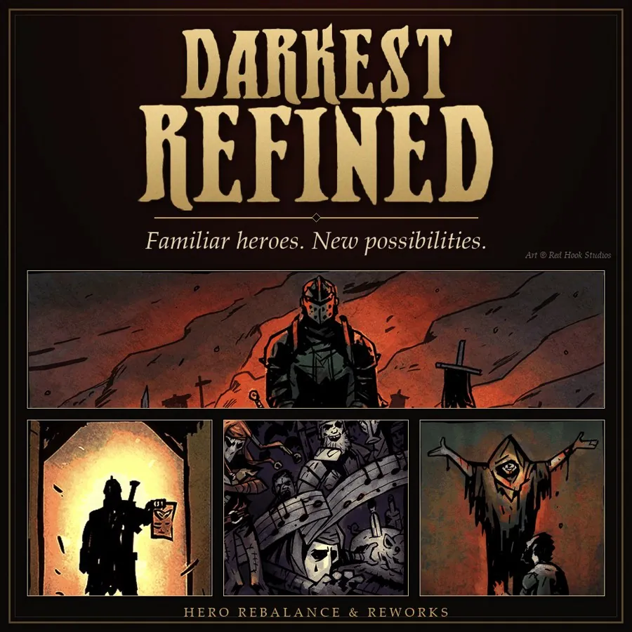
대표작 Darkest Refined입니다. Steam 창작마당에 공개해 운영하고 있습니다.
소개, 이 포트폴리오가 보여 주는 것
대표작 세 편은 첫 화면만 보셔도 무엇을, 왜, 어떻게 했는지 알 수 있게 정리했습니다. 설계 과정과 근거는 각 단락 아래 ‘더 보기’에 있습니다.
이재민
게임 기획, 전투와 밸런스, 콘텐츠와 레벨
자세한 내용, 누르면 펼쳐집니다
게임 기획, 전투와 밸런스, 콘텐츠와 레벨
게임을 하다 납득이 가지 않는 선택을 만나면, 어떤 규칙이 그 행동을 만드는지 따라갑니다. 다키스트 던전에서는 영웅과 기술의 선택 이유를 수치로 비교했고, Samurai Kendo에서는 거리와 시간을 기준으로 공방을 설계했습니다. 관찰한 문제를 문서와 실제 결과물로 옮기는 게임 기획 일을 하고 싶습니다.
다키스트 던전 리밸런스에서는 서로 다른 기술 효과를 비교하는 모델을 만들었습니다. 다만 계산값만으로 영웅의 역할을 정하지는 않았습니다. 나병환자의 느린 속도와 짧은 사거리는 남기고 명중 부담을 조정한 것처럼, 무엇을 유지하고 무엇을 바꿀지 먼저 판단했습니다. 채택한 값과 이유는 변경 기록에 함께 남겼습니다.
Samurai Kendo에서는 공방 원칙과 수치 기준을 세우고 AI와 프로토타입을 구현했습니다. 백스텝 이동량 계산에 가드 경직이 빠진 것을 확인했을 때는 원안을 유지하고 계산을 고쳤습니다. 구현을 빠르게 반복하면서도, 결과를 받아들일 기준과 다음 수정 방향은 직접 정하려고 합니다.
미지의 경매장에서는 보상 구조의 문제를 찾고 재설계 문서를 만들었습니다. 동시에 제 구상을 앞세우거나 팀이 필요로 하는 콘텐츠보다 수치 일반화에 집중했던 점을 돌아봤습니다. 후속 프로젝트에서는 팀원으로 요구사항과 담당 범위를 먼저 확인하고, 작업을 Jira에 남기는 방식으로 바꾸고 있습니다.
에듀플렉스에서 1년 5개월 동안 학생의 학습을 관리하고 학부모와 상담했습니다. 학생의 계획, 학부모의 기대, 현장의 운영 조건을 함께 확인해야 하는 일이었습니다. 그 경험을 바탕으로 게임 기획에서도 작업을 받는 사람의 상황과 필요한 정보를 먼저 확인하겠습니다.
받는 사람이 필요한 정보를 확인하고, 맡은 작업의 범위와 진행을 공유합니다.
보상 구조를 재설계하고 기획 의도서와 인계서를 작성했습니다. 제 구상을 앞세우거나 팀에 필요한 작업의 맥락을 충분히 확인하지 못했던 점도 회고에 남겼습니다.
낭만 프로젝트에서 팀원으로 참여하며, 팀이 요구하는 작업을 Jira에 기록하는 방식을 적용하고 있습니다. 완료 목표는 2026년 12월 3일이며, 최종 회고는 종료 후 보강할 예정입니다.
1년 5개월 동안 학생의 학습을 관리하고 학부모와 상담했습니다. 서로 다른 기대와 현장의 조건을 확인해 실행할 계획으로 옮기는 일을 경험했습니다.
프로젝트
카드를 누르면 무엇을 했는지 화면과 함께 바로 볼 수 있습니다. 설계 과정은 아래 각 단락에 이어집니다.
결과보다 과정
처음 판단이 어디서 틀렸고, 무엇을 보고 알았고, 어떻게 고쳤는지 한 장씩 정리했습니다. 마지막 줄은 그 뒤로 지키는 기준입니다.
Darkest Refined, 중보병2026.09.29 – 30
Darkest Refined, 조련사2026.10.23 – 11.06
Darkest Refined, 괴인2026.10.26 – 28
Darkest Refined, 도망자2026.11.01 – 08
Samurai Kendo, 검사 기준2026.09
Samurai Kendo, 문서 형식2026.09
Samurai Kendo, 백스텝 계산2026.09
미지의 경매장, 보상 구조2026.08
미지의 경매장, 협업 문서2026.07 – 08
비주얼 노벨 → SOS2026.04 – 06
대표작 1, Darkest Refined
턴제 RPG 〈다키스트 던전〉의 영웅 20명을 다시 설계한 개인 모드입니다. Steam 창작마당에 공개하고, 이용자 의견을 받아 계속 고치고 있습니다.
〈다키스트 던전〉은 영웅 네 명으로 파티를 짜서 던전에 들어가는 게임입니다. 누구를 데려가고 어떤 기술을 쓸지 고르는 데서 재미가 나옵니다.
그런데 체력 회복은 성녀와 신비학자에게, 스트레스 회복은 광대에게 몰려 있었습니다. 성녀, 광대, 방패 파괴자를 중심으로 짜면 대부분의 콘텐츠가 풀렸습니다. 정답이 정해져 있으면 고르는 재미가 없습니다.
“파티 짜다 보면 … 자꾸 쓰던 조합으로 돌아가더라. 그래서 각자 개성은 살리면서 안 쓰던 기술이랑 조합도 써볼 이유를 만들고 싶었음.”
다키스트 던전 갤러리, 2026.11.08
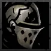
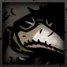
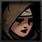
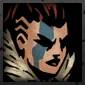
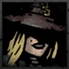
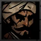
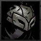
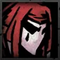
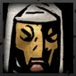
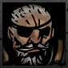
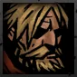
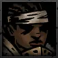
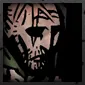
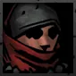
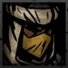
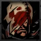
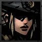
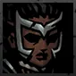
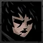
원작에서는 괴인이 야수로 변신할 때마다 동료 세 명이 스트레스를 받습니다. 합계는 그대로 두고 부담을 괴인 자신에게 옮겼습니다. 자기 스트레스를 미리 관리해 둔 만큼 변신을 쓰는 운영이 됩니다.
변신의 보상이 약하다는 이용자 의견도 받아들여, 보상을 중독 저항에서 야수 상태의 치명타로 바꿨습니다.
계산과 실측 정정까지 보기 →직접 피해를 낮추고 출혈(턴마다 들어가는 지속 피해)을 강화하면 다른 장신구와 기술도 쓸 수 있지 않겠느냐는 제안을 받아들였습니다. 반영하고 보니 출혈 쪽으로 너무 기울어, 피해를 올려 주는 장신구를 낄 이유가 약해졌습니다.
같은 날 직접 피해를 일부 되돌렸고, 이후 한 명을 집중 공격하는 기술과 여럿에게 출혈을 거는 기술로 역할을 나눴습니다.
이용자 원문과 답변 보기 →사냥개 돌진의 직접 피해, 기본 공격을 100으로 본 값
기술 1레벨 기준입니다. 피해 보정 −25% → −50% → −40% → −20%를 기본 공격 대비 비율로 옮겼습니다.
응징은 공격한 뒤 세 턴 동안 맞을 때마다 반격하는 기술입니다. 첫 공격을 강하게 하는 대신 반격을 두 턴으로 줄였고, 그때 계산한 손실은 −1.3%였습니다.
다음 날 다시 따져 보니 동료를 대신 맞아 주며 반격하는 경우가 계산에 빠져 있었습니다. 넣으니 손실은 −14.6%였습니다. 반격을 세 턴으로 되돌리고, 대가는 공격할 수 있는 범위를 줄이는 쪽으로 옮겼습니다.
계산 조건과 기록 보기 →반격을 한 턴 줄였을 때의 손실 추정
−1.3%처음 계산
지원 기술을 돌려 쓰는 운영에서의 손실을 2026.09.29~30 당시 모델로 비교한 값입니다.
대표작 1, Darkest Refined, 공개와 운영
2026.10.17에 Steam 창작마당에 공개했습니다. 바뀐 내용은 영웅별 비교표로 알렸고, 받은 제안에는 수용, 재조정, 미채택을 구분해 공개 답변을 달았습니다.
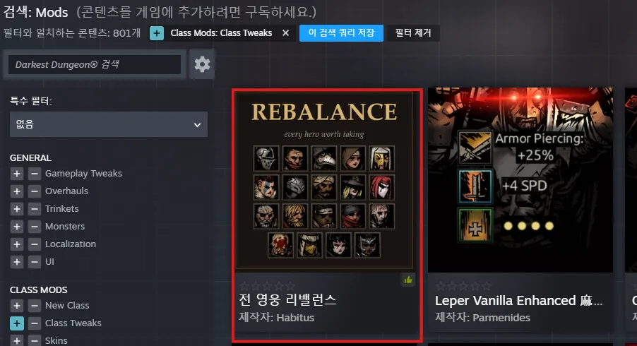
초상화를 누르면 실제로 올린 원작 대 변경 비교 카드가 나옵니다.
자료를 불러오는 중입니다.
10.17 첫 공개부터 10.23까지입니다. 날짜마다 카드가 바뀐 영웅과 그날까지 쌓인 댓글 수를, 창작마당 카드 보관본과 댓글 보존본에서 계산했습니다.
자료를 불러오는 중입니다.
2026.10.17 첫 공개(1.0)부터 10.23(2.5.1)까지 창작마당에 올린 카드를 버전마다 비교했습니다. 검은 칸이 그 영웅의 카드가 바뀐 버전입니다. 카드에는 수치, 설명, 이미지 변경이 모두 들어갑니다.
이용자 제안을 받아들인 뒤 같은 날 다시 고친 사례를, 그때 올린 카드 그대로 넘겨 봅니다.
2026.11.08까지 남은 댓글 전부입니다. 영어, 중국어, 스페인어, 포르투갈어 댓글은 한국어로 옮겼고, ‘원문’을 누르면 그대로 볼 수 있습니다. 검은 표시가 제 답변입니다. 이용자 닉네임은 ‘이용자 A’처럼 가렸습니다.
변경은 모델 계산, 게임 데이터 대조, 공개 뒤 이용자 보고로 확인했습니다. 선택률, 승률 같은 플레이 통계는 수집하지 않았습니다.
↓ 판단한 순서입니다. 수치는 마지막에 정했습니다.
전용 장신구, 기술 구성, 설정을 제약으로 삼고, 약점을 전부 지워 만능 영웅으로 만들지 않습니다.
기능을 더할 때 피해, 명중, 사거리, 행동 비용을 함께 검토합니다. 전체 화력과 원정 난이도가 일방적으로 낮아지지 않게 하려는 것입니다.
같은 레벨, 적, 장신구, 후속 행동을 놓고 비교합니다. 단독 점수가 높아도 다른 기술을 지우거나 지원 운영을 해치면 수정합니다.
자세한 내용, 누르면 펼쳐집니다
부족한 역할을 열어 주는 상향은 다른 영웅의 자리를 빼앗을 수 있습니다. 같은 자리에서 경쟁하는 영웅과, 다음 레벨을 선택할 이유를 함께 검토했습니다.
신비학자의 기절을 후열에서도 쓰게 하면 공격, 치유, 기절을 모두 갖추게 됩니다. 범용성을 얻는 대가로 심연에서의 손아귀의 명중을 낮추고 적 1, 2열만 겨냥하게 했습니다. 반대로 기절이 없는 석궁사수는 공격력만 올리기보다 다른 영웅이 처리하기 어려운 표적을 맡겼습니다.
| 영웅, 기술 | 선택할 상황 | 남긴 조건과 대가 |
|---|---|---|
| 신비학자 심연에서의 손아귀 | 명중에 투자해 강한 기절을 노림 | 아군 3, 4열 → 적 1, 2열 한 명 명중 80, 피해 −50%, 치명 +9%p, 기절 110%, 횃불 −5 |
| 석궁사수 저격, 제압 사격, 사냥돌 발사 | 보호받는 핵심 적 공격 / 후열 둘의 위험 완화 / 동료 사거리 밖의 적 당기기 | 기절 대신 보호 무시, 후열 속도, 명중 감소, 적 2, 3, 4열 중 한 명을 2칸 당기기로 역할 구분 |
손아귀는 성녀 눈부신 광채의 높은 명중, 횃불 상승과 대비했습니다. 회복의 부수 효과도 성전사 전투 치유의 방어 증가, 유물수집상 강화의 연막의 받는 회복 증가로 나누어 즉시 보호와 후속 회복을 구별했습니다.
기절 확률은 저항 적용 전, 치명은 영웅 기본값과 구분한 기술 보정입니다. 저격은 11.08 후속 변경으로 현재 적 1~4열 대상입니다.
원작에서는 4→5레벨에 회복 상한뿐 아니라 아군 출혈도 커집니다. 마지막 업그레이드의 부담은 줄이되, 이미 강한 회복기를 일방적으로 강화하지 않기로 했습니다.
| 항목 | 원작 4레벨 | 원작 5레벨 | 변경 5레벨 |
|---|---|---|---|
| 회복 | 0~19 | 0~22 | 0~20 |
| 출혈 | 2 × 3턴 | 3 × 3턴 | 2 × 3턴 |
| 적용 확률 | 80% | 85% | 80% |
출혈을 4레벨과 같게 하는 대신 회복 상한을 내줬습니다. 원작 5레벨 대비 보정 전 평균 회복은 11→10으로 낮아지지만, 4→5레벨 성장에서는 부작용 증가 없이 상한이 오릅니다. 최소 회복 0과 아군 출혈은 유지해 위험을 감수하는 정체성을 남겼습니다.
구현에서는 4레벨 출혈 효과를 재사용하고 편집 데이터, 실제 참조, 재적용 일치를 검사했습니다. 출혈 저항이 높은 아군에게는 원작 5레벨이 유리한 경우도 있습니다.
재화 수집의 이점에 전투 상향까지 고르게 더하면 초반부터 너무 유리해질 수 있습니다. 반대로 계속 약하면 키울 이유가 없습니다. 처음에는 개별 기술의 쓸모를 보완했지만, 이후 모든 레벨을 똑같이 강화하는 대신 5레벨의 도약으로 방향을 조정했습니다.
| 기술 | 1~4레벨 | 5레벨의 보상 |
|---|---|---|
| 서툰 칼질 | 기존 공격 역할 | 표식 2턴 추가 → 동료 공격 연결 |
| 강화의 연막 | 받는 회복 +20% | +40%로 도약 → 후속 회복 지원 두 구간 모두 3턴, 중첩 |
| 동료 방패 | 기존 보호, 표식, 강화 | 보호하는 동료에게 반격 3턴, 반격 피해 +15% 2턴 추가 |
이 기준도 일률적으로 적용하지 않았습니다. 섬광 가루의 이동 저항 감소는 전 레벨에 열어 당기기, 밀치기와 도망자의 지면 화상을 지원하게 하고, 화상량은 1/1/2/2/7로 최고 레벨 보상을 크게 뒀습니다. 강화의 연막은 장신구와 중첩 증폭을 함께 검토해 기본 회복만 계속 올리지 않았습니다.
성장 구간과 연계 보상 결정
반복할 기술 하나가 나머지 선택을 지우거나, 변신의 부담이 동료에게만 남는 구조를 다시 설계했습니다. 준비 행동과 그 보상이 이어지는지가 기준이었습니다.
후열에서 흩날리는 불티를 반복하는 운영은 강한 반면 화톳불은 겉돌았습니다. 장기전의 과도한 누적을 줄이고, 위치를 옮기는 행동에도 다음 공격을 준비할 이유를 주고 싶었습니다.
화상 축적, 지면 설치
감소 지연 또는
당기기, 시체 제거
불타는 적 공격 또는
뒤쪽 적으로 화상 전파
선택 가능한 경로입니다. 4열에서 판 뒤엎기를 한 번 쓰면 3열이며, 후열에 남아 불티를 반복하는 운영도 유지했습니다.
| 선택한 변화 | 의도와 제약 |
|---|---|
| 화상 감소 지연 불티 → 화톳불 | 공격 반복에 묶인 누적 이득을 이동 행동으로 분리. 화톳불은 3, 4열 사용, 전진 2, 지연 50%, 실효 1회로 설정. |
| 불길 역류 중첩당 25% → 20% | 화상을 터뜨리는 정체성은 유지하고 고중첩 직접 피해 완화. 전열, 화상 조건은 남기되 새 사용 횟수 제한은 미채택. |
실효 1회와 작동 확인은 당시 설정과 플레이 보고로 확인한 범위이며, 지속 복원은 장기전에도 이득이 됩니다.
변신의 공격 보상이 약하다는 이용자 의견과 치명 추가 제안을 수용했습니다. 저는 여기서 참회의 높은 자기 스트레스 회복에 주목했습니다. 동료에게 주던 부담을 자신에게 옮기면, 미리 관리한 만큼 변신을 활용하는 운영이 될 수 있었습니다.
| 변신의 항목 | 원작 | 변경 |
|---|---|---|
| 동료 비용 / 복귀 회복, 각자 | +8 / 2 | +5 / 3 |
| 자기 변신 비용 / 유지 비용 | 별도 진입 비용 없음 / 발동당 +6 | 진입 +12 / 발동당 +6 유지 |
| 자기 체력 회복 | 5/6/7/8/10 | 8/9/10/11/12 |
| 변신 보상 교체 | 중독 저항 +20/23/25/28/30%p | 야수 치명 +6/7/8/9/10%p |
동료 3명, 유지 발동 n회. 보정 전 스트레스 합계는 유지하고 부담의 주체를 바꿨습니다. 억제의 자물쇠의 40% 경감 아래 동료 한 명의 왕복 수지는 5 × 0.6 − 3 = 0입니다.
이전 자기 비용 15에서 장신구 없이 19, 장착하면 11이 올랐다는 보고가 있었습니다. 장신구 경감이 작동하지 않는다는 초기 의심을 철회하고 기본 비용, 경감, 추가 보정을 분리했습니다. 로그와 저장 파일로 추가 보정의 원인까지 확정하지는 못했습니다.
위 계산은 다른 보정과 정수화가 없는 조건에서 스트레스 비용만 비교한 것입니다. 원작의 피해, 속도 버프는 유지했고, 치명은 첫 턴만이 아닌 야수 모드 한정 버프로 구현했습니다.
10.26 이용자 의견, 10.28 반영 답변
피해, 회복, 기절, 스트레스는 단위가 다릅니다. 피해 보정 −50%조차 영웅의 무기 피해에 따라 결과가 달라집니다. 같은 단위로 바꾸는 것보다, 어떤 조건을 계산에 넣을지가 더 중요한 과제였습니다.
직접 피해는 실제 기대 HP 감소로, 스트레스, 제어, 유연성은 가정을 포함한 환산 가치로 계산했습니다. 기존 피해 보정 %p 비교를 확장했으며, 생존 지표인 EHP를 모든 효과의 이름으로 쓰지 않았습니다.
| 검토 질문 | 계산에 필요한 조건 | 막으려던 오류 |
|---|---|---|
| 죽일 적에게 기절까지 성공하면? | 피해 후 생존 확률 × 기절 성공 × 막은 행동의 손실 | 처치와 기절의 행동 제거 중복 계산 |
| 방어를 깎은 뒤 누가 때리나? | 유효 지속 안의 실제 후속 공격별 증가분 | 후속 행동 없이 최대 이득 가산 |
| 회피로 무엇을 막는가? | 직접 피해와 적중에 붙은 스트레스, 출혈, 중독, 약화 | 고정 배수와 상태 예방의 중복 가산 |
| 화상이 끝까지 들어가는가? | 정수 감쇠, 행동 시점, 사망, 이동, 뒤쪽 적 존재 | 일반전과 다회 행동 보스에 같은 틱 수 적용 |
| 회복할 자원과 시간이 남았나? | 부족한 HP, 스트레스, 후속 회복과 행동 비용 | 과회복, 기회비용 누락 |
정수 처리도 비교값을 바꿨습니다. 무기 11~20, 피해 −60%, 명중 확정, 치명 0, 방어 0 조건에서 연속 평균으로 구한 6.2 HP 대신, 엔진 정수 처리에 따른 5~9 피해의 평균 7 HP를 쓰도록 모델을 수정했습니다.
HP 모델의 조건, 한계, 항목별 산식
짧은 전투에서 응징의 첫 공격이 약하게 느껴졌습니다. 즉시 피해를 높이는 대신 반격 지속을 줄이면 보상이 앞당겨질 것이라 보았습니다. 그러나 수호자와 함께 쓰는 지원 운영을 다시 살피자, 계산에 빠진 반격 기회가 드러났습니다.
피해 보정 −75%→−50%, 반격 3턴→2턴. 초기 계산에서는 지원 기술을 순환하는 운영의 손실이 −1.3%로 작게 나왔습니다.
고양, 지휘, 수호자, 응징을 쓰는 경우를 다시 물었습니다. 동료에게 가던 공격을 중보병이 받아 반격하는 기회가 누락됐습니다. 자기 표식이 끝난 세 번째 턴도 약한 턴이 아니었습니다.
보호를 반영하자 손실 추정은 −14.6%로 커졌습니다. 반격을 3턴으로 복원하고, 대상열을 1, 2, 3→1, 2로 줄이는 대신 첫 공격 피해 보정을 −20%로 조정했습니다.
단독 기술의 점수가 괜찮아도 함께 쓰는 행동을 망가뜨릴 수 있었습니다. 지원 기술 사이에도 반격이 이어지는 정체성을 기준으로 대가를 다시 골랐습니다.
. 2026.09.29~30 시점의 사례이며 손실률은 당시 모델로 비교한 값입니다. 피해 보정은 응징의 첫 공격에 적용됩니다.
후열 우선 처치, 회복 시간, 장신구 기회비용 같은 비교 조건, 정체성 제약, 수치의 채택, 기각과 실제 사용감의 판정.
Claude Code, Codex를 통한 원본 추출, 항목별 공식과 계산 도구, 같은 조건의 대조표, 누락, 반올림, 중복 기여 검사.
모델은 결론을 대신하는 점수표보다, 놓친 조건을 찾아 다시 질문하는 도구로 사용했습니다.
이용자 의견을 그대로 적용한 뒤에도 장신구와 기술 간 관계를 다시 확인했습니다. 수용, 재조정, 효과 제거, 미채택을 구분해 공개 답변과 변경 기록으로 남겼습니다.
“직접 피해를 낮추면서 출혈 피해를 강화해, 다른 장신구와 기술도 활용할 수 있게 해 보면 어떨까요?”
범용 지원 영웅의 직접 피해를 낮추는 대신 출혈을 강화하자는 제안을 반영했습니다. 하지만 출혈에 너무 치우치면 피해 증가 장신구의 의미가 약해집니다. 이후 직접 피해를 일부 되돌려 단일 집중 공격과 광역 출혈을 구분했습니다.
| 단계 | 피해 보정 | 출혈, 지속 | 판단 |
|---|---|---|---|
| 피드백 전 | −25% | 1/1/2/2/3, 2턴 | 넓은 기능의 대가로 직접 피해 하향 |
| 10.23, 첫 반영 | −50% | 3/3/4/4/5, 3턴 | 출혈 장신구, 연계 활용 제안 수용 |
| 10.23, 재조정 | −40% | 2/2/3/3/4, 3턴 | 피해 증가 장신구의 가치도 보존 |
| 11.06, 후속 조정 | −20% | 2/2/3/3/4, 3턴 | 한 명을 집중 공격하는 역할 강화 |
사냥개 습격은 피해 −85%, 같은 출혈 수열의 광역 기술로 구별했습니다. 11.07에는 돌진의 1열 사용 오류도 바로잡아 돌진은 아군 2, 3, 4열, 습격은 모든 열에서 쓰도록 맞췄습니다. 첫 반영에서 끝내지 않고 장비 선택과 두 기술의 역할을 다시 조정한 사례입니다.
첫 반영 답변, 재조정 답변, . 11.10 원본, 배포 패키지, 설치된 통합판 대조 기록 기준.
‘사악한 칼질을 너무 약하게 만들어 정맥 절개와 경쟁하지 못한다’는 의견은 받아들였습니다. 제안된 방어 관통은 추가하지 않고, 칼질은 적중 안정성과 3열 공격, 정맥 절개는 출혈과 약화로 나누었습니다.
| 기술 | 명중 | 피해 보정 | 치명 보정 | 적 대상열 |
|---|---|---|---|---|
| 사악한 칼질 | 85 → 90 | 0% 유지 | 0 → +5%p | 1, 2, 3 유지 |
| 정맥 절개 | 95 유지 | −20% → −15% | +5 → 0%p | 1, 2 유지 |
이용자 제안, 반영 답변
물리 딜러를 돕기 위해 넓힌 방어 감소가 너무 많은 영웅에게 퍼졌다는 지적도 수용했습니다. 이미 화상이 있는 광휘에서 방어 감소 15/17/20/22/25%p만 제거하고 대체 약화는 넣지 않았습니다. 명중 95, 피해 −75%(1레벨), 화상 1/1/2/2/3, 회피 감소, 은신 해제, 횃불은 유지했습니다.
이용자 의견, 11.03 반영 답변
이용자는 원작 위협이 나병환자의 유일한 후열 대응 수단이었다는 점과, 이를 방어 감소로 바꾸면 쓸 곳이 좁아진다는 점을 지적했습니다. 원형 복원은 채택하지 않았지만, 기능을 잃은 뒤에도 낮은 속도, 짧은 사거리, 대열 교란 취약성, 낮은 명중이 모두 남았다는 문제는 인정했습니다.
동료의 지원을 받아 전열을 강하게 베는 영웅으로 해석했습니다. 후열 약화를 복원하기보다 중장갑 전열을 상대하는 갑옷 쪼개기를 남겼습니다.
사거리와 이동을 넓히지 않고, 어렵게 얻은 공격 기회를 놓치는 빈도를 낮추기로 했습니다. 육중한 역할은 남기고 명중 부담을 완화했습니다.
| 기술 | 명중 | 유지한 사용열 → 대상열 |
|---|---|---|
| 토막치기 | 75 → 80 | 아군 1, 2 → 적 1, 2 중 한 명 |
| 가르기 | 75 → 80 | 아군 1, 2 → 적 1, 2 동시 |
| 축출 | 85 → 90 | 아군 1 → 적 1 |
| 갑옷 쪼개기 원작: 위협 | 85 → 90 | 아군 1 → 적 1 |
이 조정에서는 피해, 속도, 사거리, 자기 이동을 바꾸지 않았습니다. 토막치기와 가르기는 명중 85인 기본 공격보다 여전히 낮아 아군과 장신구의 명중 지원이 필요합니다. 이후 지속이 짧다는 별도 의견에는 11.05 방어 감소를 3턴으로 늘렸고 약화 확률도 130~170%로 보완했습니다.
“위협이 원래 적 3, 4열에 영향을 줄 수 있는 유일한 기술이었으므로 플레이어가 사용하게 되는 것은 당연합니다. 그래서 명중을 높여 이 영웅의 또 다른 큰 약점을 보완하는 쪽을 택했습니다.”
10.24 복원 요청, 10.31 사용처 지적, 초기 리워크 방향 답변, 지속 관련 의견, 후속 답변
, .
20영웅의 수치 조정에 이어 이용자의 실행 조건과 선택권, 변경 내용을 전달하는 방식까지 다듬었습니다.
회복, 위치, 약화, 성장 역할을 나누고, 댓글에서 드러난 사용감과 기술 간 경쟁을 다시 검토했습니다. 수용한 제안과 다른 대안을 고른 이유를 공개 답변으로 설명했습니다.
DLC 영웅을 끄면 실행되지 않는다는 의견, 원하는 영웅만 적용하고 싶다는 요청에 맞춰 본편 15영웅판과 개별 영웅판을 분리했습니다. 기존 구독자에게 전환 이유와 동시 사용 주의를 안내했습니다.
축적한 설계를 새 이름으로 묶고 표지, 제목, 영웅별 비교 이미지로 전달했습니다. 통합판과 선택형 제공을 병행하며 수치뿐 아니라 실행 조건, 설명, 이미지도 계속 수정했습니다.
| 기록 | 확인한 범위 |
|---|---|
| Hero Rebalance | 2026.10.17 공개. 현재 구독 693, 순 방문 6,210, 즐겨찾기 164 |
| Darkest Refined 통합판 | 현재 구독 234, 순 방문 2,195, 즐겨찾기 91 |
| 20영웅 | DLC 영웅을 포함한 통합판 구성 |
| 102건의 댓글 | 기존 Rebalance: 이용자 의견 50건, 제작자 답변 52건, 검토 안내 1건 포함. 통합판 댓글 2건은 별도 번역. |
| 업데이트 노트 33 → 53건 | 10.26과 11.08 보존본 비교. 밸런스, 호환성, 설명, 이미지 변경을 포함한 공개 기록. |
댓글에는 제작자 답변이, 업데이트 노트에는 호환성, 설명, 이미지 변경이 포함됩니다. DLC 실행 의견, 선택 적용 요청
본문은 대표 판단을 요약했습니다. 첨부에서는 같은 ID 안의 최초 의도와 수정, 검증, 번복을 날짜순으로 읽고, 계산 문서와 단순 언급은 관련 근거에서 따로 볼 수 있습니다. 원문과 당시 수정 내역도 연결했습니다.
518개 ID, 670개 날짜별 문서 변경 기록, 원문 613개 항목, 커밋 연표 514건. 2026.11.10 정리본이며 ID는 같은 기획 항목을 묶는 단위입니다.
| 판단 과정 | 변경 ID |
|---|---|
| 마지막 성장의 보상과 부작용 재배분 | |
| 호위 누락을 확인하고 지속 단축 철회 | |
| 효과 이관과 사용감에 따른 지속 복원 | , |
| 변신 부담의 주체와 공격 보상 변경 | , |
| 복원 요구의 문제를 다른 대안으로 보완 |
첨부의 ‘현재’, ‘대기’는 해당 기록 당시 상태입니다.
대표작 2, Samurai Kendo
1대1 검술 대전의 규칙을 직접 설계해 Windows 프로토타입으로 만든 개인 프로젝트입니다. 공격, 방어, 이동마다 얻는 것과 내주는 것을 정하고, 실제 입력을 재생하는 검사로 확인했습니다.
1대1 대전에서 늘 안전한 수가 하나 정해지면, 상대를 읽을 이유가 없어집니다. 제가 원한 경험은 상대의 습관과 지금의 거리, 남은 자원을 보고 다음 수를 바꾸는 것이었습니다.
그래서 행동을 하나씩 검토할 때마다 얻는 것과 내주는 것, 상대가 대응할 방법을 함께 적었습니다. 지금 안전한 선택도 다음 국면에는 부담을 남깁니다.
밑줄 친 낱말에 마우스를 올리거나 누르면 뜻이 나옵니다.
체간 0에서 연속으로 막았을 때의 누적, 한도 250
‘막기’를 눌러 보세요. 막을 때마다 체간이 쌓입니다.
막을 때마다 더해지는 양은 16, 24, 36, 54, 81, 121.5이고, 6번째에 한도를 넘습니다. 연속 가드가 끊긴 경우, 중간 회복, 피격이 있는 경우와 구분한 계산입니다.
↺ 가드, 후퇴로 거리를 벌리면 중립으로 돌아갑니다. 한 국면의 결과가 다음 국면의 조건이 됩니다.
가드에 성공하면 방어자가 한 칸씩 밀려납니다. 일반공격이 닿는 거리는 3이라, 세 번 막으면 제자리 공격은 닿지 않습니다.
한 번 막고 뒤로 빠지면 다음 공격에 잡히고, 두 번 막은 뒤부터 피할 수 있습니다. 가드는 체간을 내고 시간을 사서 탈출 기회를 만드는 선택이 됩니다.
압박과 방어의 상성 보기 →가드할 때마다 벌어지는 거리, 점선이 일반공격이 닿는 한계(3)
벽과 추가 이동이 없는 기본 교환 기준입니다. 가드할 때 밀려나는 거리는 1입니다.
벽에 몰리면 막아도 거리를 벌리기 어렵습니다. 이때 옆으로 도는 횡스텝이 통하는지를 공격자의 박자별로 재생해 봤습니다.
성공한 경우만 보고 확정 탈출로 만들지 않았습니다. 실패하는 박자를 함께 남겨, 공격자는 벽을 지킬지 패링을 피할지, 방어자는 더 버틸지 옆으로 돌지를 서로 읽게 했습니다.
벽 공방 설계 보기 →벽에서 횡스텝했을 때, 공격자가 다음 공격을 얼마나 늦추는가
단추를 누르면 재생합니다. 횡스텝은 공격자를 중심으로 돌고, 공격 방향(굵은 선)은 칼을 휘두르기 시작할 때 정해집니다.
벽 가드 뒤 거리 1에서 방어자가 풀려난 직후 횡스텝한 조건입니다. T는 스텝 한 번의 시간이며, 전투 로직 입력 재생 13,824조건에서 관측한 결과를 도식으로 옮겼습니다. 실제 게임 화면은 아닙니다.
Unity를 거의 다루지 못해 구현은 AI에 맡겼습니다. 그런데 기존 검사는 설정값끼리의 관계만 보고 있었습니다. 제가 전수 감사를 요청했고, AI가 실제 입력을 재생하는 검사 72회(18장면 × 4박자)를 만들어 돌리자 20회만 통과했습니다.
고친 뒤 9.20까지 117장면(468회)으로 늘렸습니다. 그 뒤로 ‘고쳤다’는 게임이 그 값을 들고 도는 것을 확인했다는 뜻으로만 씁니다.
AI 제안을 받고 거절한 기록 보기 →검사 범위가 넓어진 기록, 회차 = 장면 × 4박자
통과실패
한 장면을 1T가 36, 44, 54, 72틱인 네 박자로 반복해 센 회차라 독립된 검사 개수가 아닙니다. 첫 감사 뒤로는 매번 모두 통과했으니, 통과율이 아니라 확인하는 범위가 넓어진 기록입니다. 감사는 제가 요청했고 검사는 AI가 작성, 실행했습니다. 9.20 기록은 후속 작업 폴더에 9.27에 함께 커밋됐습니다.
Windows 프로토타입과 AI 상대의 난이도, 튜토리얼을 만들었습니다. 벽 공방 등은 전투 로직 재생으로 확인했고, 직접 플레이하며 고쳤습니다.
외부 대전의 충분한 표본, 장기 전략 균형, 모션 전달력은 아직 확인하지 못했습니다.
프로토타입의 전투 로직에 정해 둔 입력을 넣고 자동으로 찍은 영상입니다. 촬영은 13일 작업 뒤인 10월에 했습니다.
입력 재생 영상, 2026년 10월 빌드, 소리 없음
왼쪽 둘은 압박에서 가드가 거리를 사는 장면, 오른쪽 둘은 같은 입력에서 상대 게이지에 따라 패링의 결과가 뒤집히는 장면입니다. 카메라는 촬영 도구의 기본 위치라 두 사람이 겹쳐 보이는 구간이 있습니다.
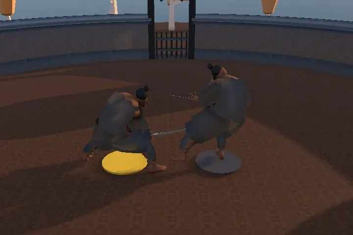
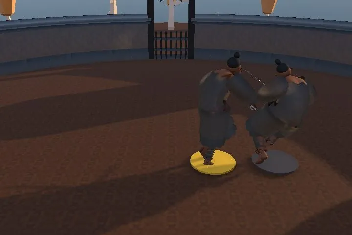
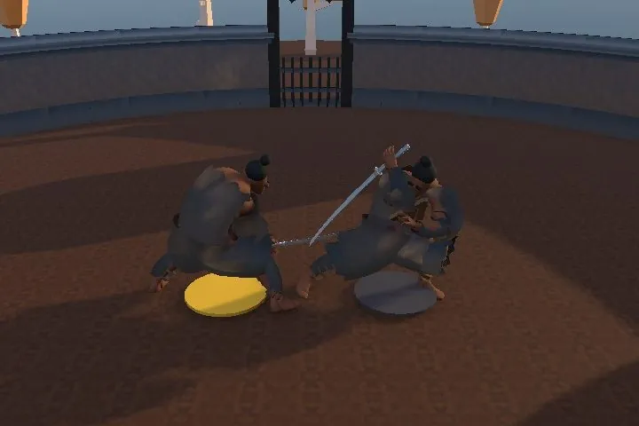
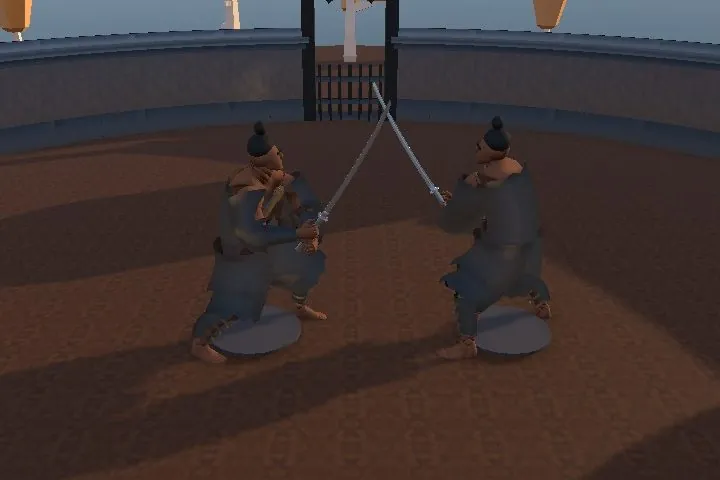
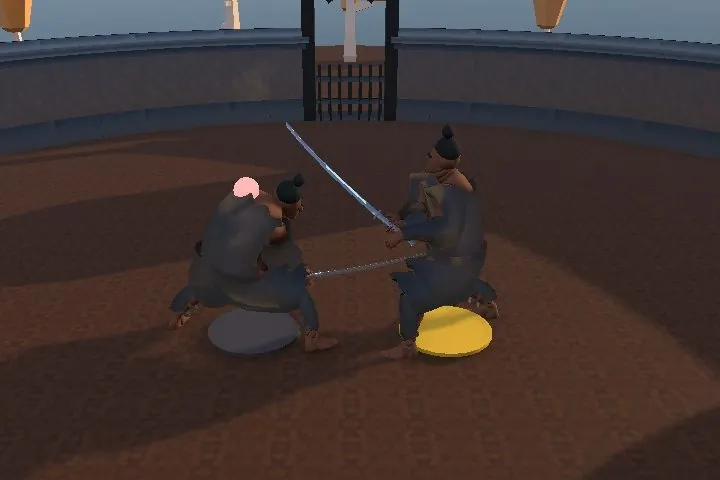
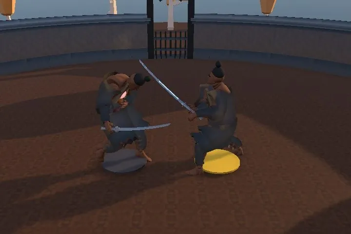
2026.09.18 프로토타입 화면입니다. 실제 판정 경로를 거친 접촉과 그 20틱(1틱 = 1/60초) 뒤를 AI가 렌더링했습니다. 동작 품질 합격 화면은 아닙니다.
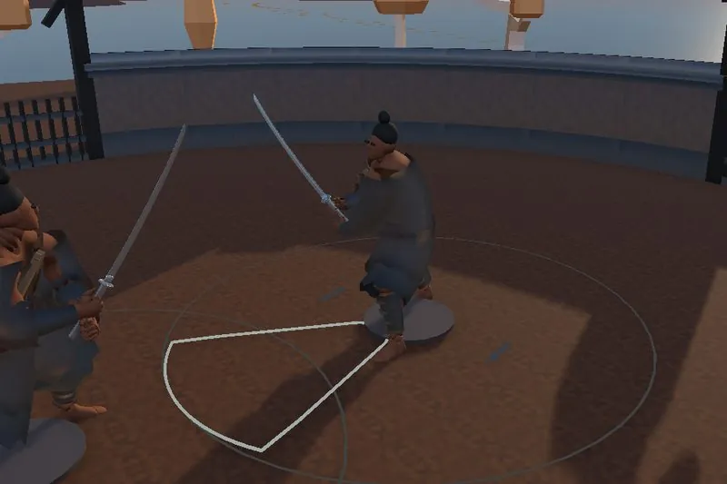
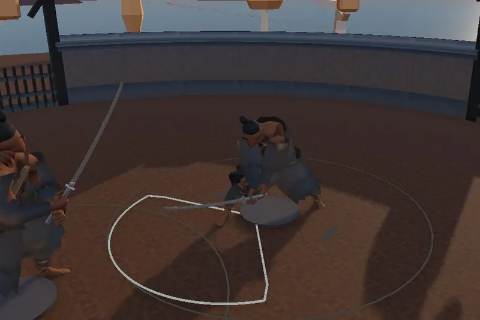
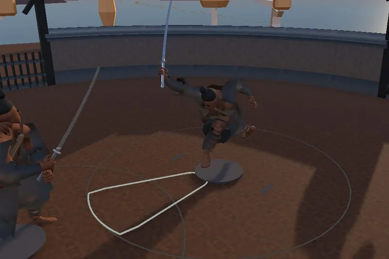
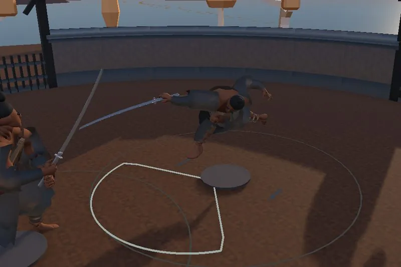
흰 선은 그 순간 실제로 맞는 범위입니다. 판정이 살아 있는 동안만 보이고, 색이 아니라 모양과 방향으로 공격을 구별하게 했습니다. 2026.09.18 화면이며 표시 규칙은 제가 정하고 구현은 AI가 했습니다.
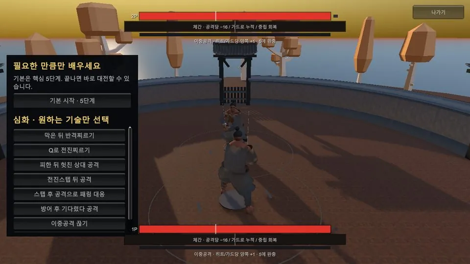
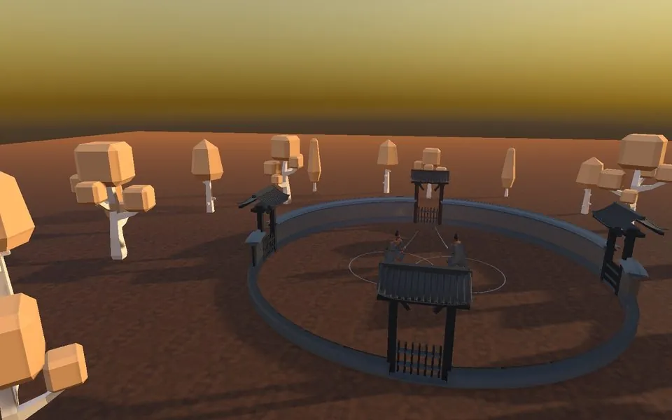
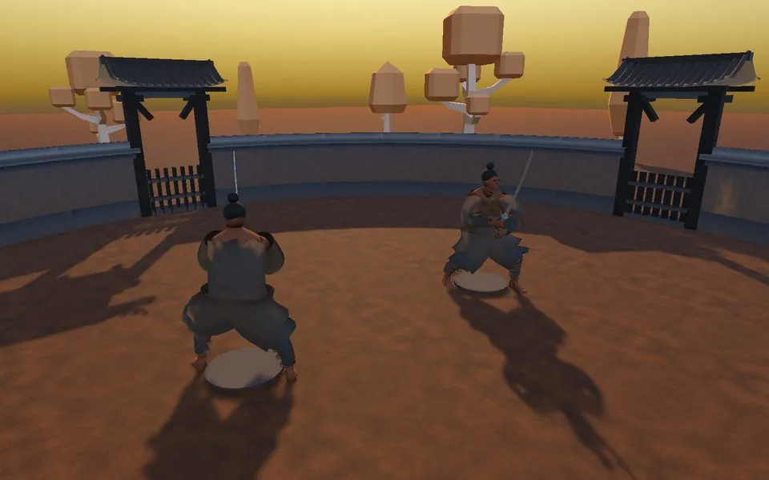
골격, 동작, 칼은 이전부터 갖고 있던 에셋, 나무는 Kenney CC0 에셋입니다. 원화와 모델링은 하지 않았습니다. 세 화면 모두 2026.09.18.
위 벽 도식의 원자료입니다. 한 칸은 같은 조건을 박자, 좌우, 선수를 바꿔 16번 재생한 결과입니다.
벽 앞, 막은 뒤 바로 횡스텝, 베기: 384회 중 피함 144: 맞음 240, 자리 바뀜 160
| 거리 | 0 | 0.125 | 0.25 | 0.5 | 0.75 | 1 |
|---|---|---|---|---|---|---|
| 0.6 | 맞음 | 피함역전 | 피함역전 | 피함역전 | 맞음역전 | 맞음역전 |
| 1 | 맞음 | 피함역전 | 피함역전 | 피함역전 | 맞음역전 | 맞음역전 |
| 2 | 맞음 | 맞음 | 피함 | 피함 | 맞음 | 맞음 |
| 3 | 맞음 | 맞음 | 피함 | 맞음 | 맞음 | 맞음 |
칸을 가리키거나 눌러 보면 16회의 결과가 나옵니다.
피함맞음횡스텝 전에 맞음‘역전’ 빗금: 끝났을 때 방어자가 공격자보다 경기장 중심에 더 가까움
D-189(2026.09.20) 전투 로직 입력 재생 결과이며 실제 화면이 아닙니다. 공격자는 후속 입력을 한 번만 내고, 표 사이의 재지 않은 값은 보장하지 않습니다. 공격자가 기다리기만 하는 4,608회는 모두 피해 0이라 뺐습니다. 기본 선택의 거리 1 줄이 위 벽 도식의 세 박자입니다. 재생은 AI가 작성, 실행했고, 결과를 탈출 규칙으로 확정하지 않은 판단은 제가 했습니다.
거리 1, 벽 앞, 막은 뒤 바로 횡스텝, 베기 조건을 10월 빌드에서 자동으로 찍은 영상입니다(입력 재생, 소리 없음). 표와 빌드가 달라도 두 결과는 같았습니다.
씬 파일이 코드 값을 덮어쓴 일2026.09.17, D-155
“돌렸어 해보니 안고쳐진 거 많은데? 검증하고 하나씩 다 고쳐 다시”그때 제가 보낸 말, 결정 기록 D-155
| 값 | 씬 | 코드 | 증상 |
|---|---|---|---|
거리 1의 실제 길이metersPerUnit | 0.7 | 0.47 | 칼이 안 닿음 |
두 몸 사이 표시 간격viewBodyGap | 1.1 | 0.5 | 칼이 안 닿음 |
경기장 반지름arenaRadius | 10 | 12 | 경기장이 좁음 |
공격 판정 시간attackActiveT | 0.3T | 0.6T | 미리 내미는 공격이 안 됨 |
중립 걷기 배율neutralWalkScale | 1.25 | 1.1 | 걸음이 느림 |
필살기 게이지 칸meterSegments | 10 | 5 | 이중공격이 안 나감 |
중립 찌르기 예비동작neutralThrustTellT | 0.75T | 0.25T | 예비동작이 김 |
가드 중 패링 준비parryReadyT | 없음 | 0.25T | 가드 유지 패링이 안 됨 |
AI 상대 난이도를 26분 동안 세 번 고치고 되돌린 일2026.09.18, D-175 ~ 178
쉬움 보통 어려움 3개 다 낮춰…AI 구현: 공격 뒤 1.4 ~ 2.5초 쉼
행동 수는 거의 비슷하게 가져가고 … 판단의 속도를 … 급격하게 상승AI 구현: 관찰 지연 0.70, 0.35, 0.10초
쉬움과 보통은 난이도 조금만 낮춰…AI 구현: 쉬움 0.90초, 맞는 판단 8%
이것도 너무 쉬워 원래 난이도로 롤백해봐조정 전 AI 복원
따옴표 안은 결정 기록에 남은 제 말입니다. 수치는 AI가 정한 구현값이며 제가 지정한 숫자가 아닙니다.
바뀌어 있던 전진찌르기 사거리D-093 → D-106 → D-143
원래 값 5.5, 거리 4에서 1.5 물러난 상대(4 + 1.5 = 5.5)에 딱 닿습니다.
세 번 막은 뒤 거리 4에서 상대가 백스텝을 칠 때입니다. 회색 점이 출발 거리 4, 짙은 막대가 잡아야 하는 끝입니다.
자세한 내용, 누르면 펼쳐집니다
간합 → 첫 교환
중립에서는 거리를 두고 상대를 살핍니다. 먼저 들어가는 선택에는 공격 기회가, 기다리는 선택에는 상대의 회복을 허용하는 대가가 있습니다.
상대에게 방어를 요구하고 회복 시간을 줄입니다. 접근을 예상한 공격이나 횡스텝에는 노출됩니다.
상대의 접근을 읽으면 먼저 맞힐 수 있습니다. 상대가 멈추면 헛친 뒤의 빈틈이 남습니다.
성급한 견제를 처벌할 기회를 얻습니다. 상대도 기다리면 체간을 회복할 시간을 줍니다.
중립의 판단 관계를 요약한 도식입니다. 각 선택의 성공은 실제 거리, 각도, 입력 시점에 달려 있습니다.
| 선택 | 얻는 것 | 남기는 대가 |
|---|---|---|
| 걷기 후 공격 | 스텝 자원을 보존하며 거리, 각도 조정 | 이동에 시간을 쓰므로 상대 반격 기회 발생 |
| 전진스텝 후 공격 | 큰 거리를 좁힌 뒤 공격 | 스택 1개와 이동 시간, 이동 중 피격 위험 |
| 전진찌르기 | 후퇴하는 상대를 빠르게 추격 | 스택 1개, 좁은 방향 판정, 헛침 뒤 클린히트 위험 |
공격자가 상대를 따라 들어가며 압박을 시작합니다. 히트 후 기준 거리는 1. 공격자는 다음 행동을 먼저 시작할 수 있습니다.
방어자는 체간 부담을 받고 밀려나지만, 두 사람의 거리는 벌어집니다. 방어 성공이 근접 압박에서 빠져나올 조건을 만듭니다.
맞으면 공격자가 파고들고,
막으면 방어자가 밀려나게 했습니다.
공수와 거리의 변화를 동작으로 전달하려는 의도입니다. 피격, 가드의 표현이 같은 모습으로 보였을 때도 이 기준으로 수정했습니다.
근접 압박 → 탈출 기회
가드는 당장의 체력 피해를 막으면서 거리를 벌립니다. 공격자는 그 틈을 메우기 위해 압박의 박자와 방식을 바꿔야 합니다.
일반공격 사거리 3, 가드백 1. 벽과 추가 이동이 없는 기본 교환 기준입니다. 거리 4에서는 제자리 일반공격이 닿지 않습니다.
| 공격자의 선택 | 선택할 이유 | 방어자가 노릴 수 있는 것 |
|---|---|---|
| 즉시 이어 베기 | 성급한 반격을 억제하고 가까운 스텝을 잡음 | 박자를 예상한 패링, 가드로 거리 확보 |
| 걷기, 스텝 후 베기 | 다시 붙거나 각도를 바꿈. 늦은 공격으로 패링 창을 넘김 | 이동에 시간을 쓰는 동안 반격 |
| 전진찌르기 | 후퇴 추격, 막혀도 연속 가드의 체간 누적 유지 | 좁은 판정을 벗어난 뒤 헛침 처벌 |
| 공격을 늦추거나 멈추기 | 예상한 패링을 헛치게 유도 | 횡스텝, 반격, 중립 복귀의 여유 |
체력 피해를 막지만 연속으로 막을수록 체간 부담이 커집니다. 거리를 벌려 탈출할 기회를 얻는 선택입니다.
일반공격을 쳐내면 반격 기회를 얻습니다. 상대가 늦추면 실패 후딜이 열리고, 큰 피해를 받을 수 있습니다.
기본 교환에서 1회 가드 뒤 백스텝은 다음 공격에 잡히고, 2회 가드 뒤부터 회피가 가능합니다. 두 번 버틴 뒤에 탈출 선택이 열린다는 의도를 거리와 경직으로 연결했습니다.
과거 등속 계산에서 빠졌던 가드 경직을 반영하면 이동량은 1.5가 아닌 0.75입니다.
상성표는 기본 교환 기준의 설계 관계입니다. T는 스텝 한 번의 시간입니다.
중립 복귀 → 벽 압박
백스텝으로 당장의 공격을 피할 수 있어도 경기장 밖으로 계속 물러날 수는 없습니다. 벽에 닿으면 가드백과 후퇴로 얻던 거리의 이점이 줄어듭니다.
거리 확보
압박에서 벗어날 기회
즉시 피해 회피와
장기 위치 불리의 교환
패링, 반격, 횡스텝
상대 박자 읽기
벽에서는 제자리 가드로 거리를 벌리기 어렵습니다. 공격자는 연속 공격을 이어가기 유리하지만, 패링을 피하려고 박자를 늦추면 횡스텝으로 탈출할 틈을 줄 수 있습니다. 즉시 공격과 지연 공격이 서로 다른 방어를 견제하도록 연결했습니다.
| 공격자의 후속 입력 | 관측한 결과 | 설계에서 읽은 의미 |
|---|---|---|
| 즉시 베기, 0T | 횡스텝 중 피격 | 옆으로 도는 것만으로 확정 탈출 불가 |
| 조금 늦춤, 0.125T | 회피 + 상대적 벽 위치 역전 | 박자 흔들기는 위치를 내줄 위험 |
| 충분히 늦춤, 0.75T | 피격, 위치는 역전 | 돌아간 방향을 다시 겨냥할 수 있음 |
공격자는 벽을 지킬지, 패링을 피할지.
방어자는 더 버틸지, 옆으로 돌지.
횡스텝은 상대를 중심으로 돌고, 공격 방향은 발동 시 고정됩니다. 이 두 규칙과 원형 경계가 만나 탈출 기회가 생겼습니다. 성공한 경우만 보고 확정 탈출로 바꾸지 않고, 실패하는 타이밍까지 함께 남겼습니다.
위 표는 특정 거리, 입력 조건에서 관측한 결과이며, 위치 역전은 상대보다 원 중심에 가까워졌다는 뜻입니다. 근거: 벽 압박 조사 기록, 전투 로직 입력 재생 13,824조건.
누적되는 자원 → 승부수, 빈사
다시 중립으로 돌아와도 체력, 체간, 공간, 게이지가 처음과 같지는 않습니다. 교환의 결과가 다음 심리전에 남도록 자원을 연결했습니다.
| 상태 | 연결한 규칙 | 플레이어에게 생기는 고민 |
|---|---|---|
| 체간 | 연속 가드 부담 증가. 중립 회복, 공격 시작마다 16 감소 13일 작업 기준. 9.27 후속 작업(D-195)에서 명중, 가드 접촉 때로 옮김 | 계속 막아 버틸지, 공격으로 전환할지 |
| 남은 체력 | 체력이 낮을수록 중립 체간 회복 저하 | 물러나기만 해도 충분히 회복할 수 있는가 |
| 스텝 스택 | 최대 2개, 전투 중에도 2초마다 1개 충전 | 지금 추격에 쓸지, 탈출할 몫을 남길지 |
| 필살기 게이지 | 일반 히트, 가드 교환으로 양쪽 충전 | 상대에게 승부수가 생긴 뒤에도 같은 방어를 할지 |
첫 타는 일반공격과 같은 준비, 궤적을 사용합니다. 상대 게이지로 ‘나올 수 있다’는 사실은 보이되, 이번 공격인지 미리 확정할 수는 없게 했습니다.
이어지는 회전 공격이 패링을 처벌합니다. 평소 강한 방어가 상대 게이지에 따라 위험해집니다.
두 번째 타격 전에 끊을 기회가 생깁니다. 일반 연속 공격에 성급히 반격할 때의 위험과 맞물립니다.
빈사 진입 뒤 일반 타격은 한 번 더 버틸 수 있지만, 클린히트나 인살에는 사망합니다. 남은 체력의 표시와 큰 실수의 대가를 구분해 마지막 공방에도 판단을 남겼습니다.
체간 증가량은 16×1.5^(연속 가드 횟수−1)입니다.
원칙의 충돌 → 수정 → 검증
원칙을 먼저 정해도 구현 과정에서 서로 충돌했습니다. 읽을 수 있는 동작과 예측하는 심리전, 쉬운 조작과 공방의 위험이 함께 유지되는지 검토했습니다.
모든 공격을 반응하기 어렵게 줄이자 준비 동작까지 읽기 힘들어졌습니다. 중립 전진찌르기는 예비동작을 보여주고, 연속 압박의 빠른 찌르기는 스택을 지불하도록 나눴습니다.
패링을 E키로 단순화하면서 기존 자격 제한을 제거했습니다. 대신 지난 교환의 이득을 선딜에 반영해 공격자가 유리함과 빠른 패링을 함께 가져가지 않도록 했습니다.
백스텝 계산에서 가드 경직이 빠져 원래 탈출 조건이 잘못된 것처럼 보였습니다. 경직을 넣어 계산한 뒤 ‘두 번 막으면 탈출 기회’라는 원안을 유지했습니다.
Unity를 거의 다루지 못하는 상태에서 규칙을 대화로 설계하고 구현을 AI에 맡겼습니다. 판정 기준은 누가 말했는지가 아니라 원칙과 계산에 맞는지였습니다.
| 구분 | 사례 |
|---|---|
| AI 제안 거부 | 이중공격 게이지 삭제안. 게이지가 보여야 보는 사람에게 심리전이 읽힌다고 판단했습니다. |
| AI 제안 수용 | HP 바의 인살 눈금, 클린히트의 체간 영향 0. “막으면 체간, 맞으면 HP” 두 줄로 정리됐습니다. |
| 제 제안 철회 | 빈사 상태의 확률 생존. 확률이 승패에 끼어들면 공정성 원칙에 어긋납니다. |
| AI 주장 반박 | “예측한 백스텝은 살고 반응한 백스텝은 죽는다”는 설명. 근거를 묻고 계산해 보니 성립하지 않아 철회했습니다. |
| 바뀐 수치 확인 | 작업 중 전진스텝이 4→5, 전진찌르기가 5.5→5로 바뀌어 있었습니다. 계산해 보니 원래 값이 맞았습니다. 뒤에 그 계산의 전제(백스텝 1.5)도 경직이 빠진 값이라 필요값을 4.75로 정정하고, 5.5는 여유로 남겼습니다. |
첫 프로토타입은 대화에서 구분한 다섯 가지 공격을 하나로 합쳐 구현했습니다. 문서에 기능 이름과 결과만 적혀 있었기 때문입니다. 행동마다 입력, 자원, 선딜과 후딜, 명중/가드/헛침 분기, 검증 기준을 적는 ‘전투 계약’으로 형식을 바꿨습니다.
이후 설계 감사에서 기존 검사가 설정값끼리의 관계만 보고 있었다는 것이 드러났습니다. 제가 요청한 감사에서 AI가 실제 입력을 재생하는 검사 72회(18장면 × 4박자)를 만들어 돌리자 20회만 통과했고, 고친 뒤 468회(117장면 × 4박자)까지 늘렸습니다. 씬 파일에 남은 옛 수치가 코드를 덮어쓰던 일을 겪은 뒤로는 ‘고쳤다’를 ‘게임이 그 값을 들고 도는 것을 확인했다’는 뜻으로 씁니다.
2026.09.09~09.21 기준, 결정 기록은 D-194까지(실제로 남은 번호 187개), 커밋 142개 중 108개는 AI 공동 작성 표시가 있습니다.
핵심 재미, 선택 간 상성, 대가, 수치 채택과 번복, 직접 플레이한 뒤의 수정 방향. AI가 제안한 규칙이 의도에 맞는지도 검토했습니다.
Unity 구현, 수식 계산, 전투 입력 재생, 문서 정리와 빌드. 계산 통과와 재미 검증을 별개의 결과로 다뤘습니다.
Windows 프로토타입과 AI 난이도, 튜토리얼을 제작했습니다. 벽 공방 등은 전투 로직 재생으로 확인했고, 직접 플레이하며 수정했습니다. 외부 대전의 충분한 표본, 장기 전략 균형, 모션 전달력은 추가 검증 과제입니다.
대표작 3, 미지의 경매장
정보를 읽고 한정된 예산으로 입찰 우선순위를 정하는 경매, 경영 게임입니다. 변하는 조건에서 선택이 생기도록 규칙을 연결하고, 그 선택을 지워 버리는 구조를 찾아 고쳤습니다.
경매에서 물건을 사서 의뢰에 납품하거나, 세트로 모아 팔거나, 시세가 오를 때까지 들고 있는 게임입니다. 같은 물건도 의뢰를 끝내 줄 때, 세트의 마지막 한 점일 때, 시세 상승을 기다릴 때의 의미가 달라집니다.
플레이어가 ‘오늘 내 상황에서 무엇을 얼마까지 살 것인가’를 스스로 정하게 하고 싶었습니다.
↺ 낙찰 결과가 보유품과 현금을 바꾸고, 달라진 상황이 다음 날의 계획을 만듭니다.
시작 현금 10,000 G = 정보 구매 500 + A에 남길 4,000 + 다른 입찰 여유 5,500
세트 재료 B의 호가
출품 순서 정보로 의뢰 물품 A가 뒤에 나온다는 것을 알았습니다. A에 쓸 4,000G를 남기면, B를 더 갖고 싶어도 이 계획에서 쓸 수 있는 현금은 5,500G입니다.
B를 포기해 A의 예산을 지키거나, A의 우선순위를 내려 세트로 돌릴 수 있습니다. 지금 B를 살 수는 있어도, 낙찰받으면 A에 남기기로 한 돈이 모자랍니다.
싸게 샀다면 남은 돈을 다른 물건에 쓸 수 있습니다. 필요한 재료를 놓쳤다면 세트 계획을 접고 의뢰나 현금 확보로 돌릴 수 있습니다.
설계 의도를 설명하는 가상 상황이며 실제 플레이 기록이 아닙니다. 금액도 설명용입니다.
수익을 내는 길 가운데 의뢰 납품과 세트 판매를 당시 문서의 가정으로 비교하니, 의뢰 쪽 순익이 약 5.6배였습니다. 이대로면 세트 수집은 장식이 됩니다.
등급과 종류를 보상에 반영해, 초반에는 의뢰로 자금을 마련하고 후반에는 세트의 규모를 살리도록 다시 설계했습니다.
반복 설계 과정 보기 →조정 전 문서로 계산한 순익
낙찰가는 실제 게임의 호가 로직을 4,000회 돌려 잰 중앙값입니다(4단계, 10~12일차). 다시 짠 보상표는 2026.08.08 03:49 팀원 커밋(0010dd8)으로 게임에 들어갔고, 이때 수주비도 빠졌습니다.
감정은 돈을 내고 물건의 실제 가치를 알아보는 기능입니다. 그런데 당시 문서에서는 경매 시작가가 숨겨진 실제 가치에 고정 비율로 묶여 있어, 시작가만 봐도 답을 계산할 수 있었습니다.
모두에게 보이는 기준가와 숨겨진 품질을 나누는 안을 냈습니다. 최종 게임은 숨은 품질과 감정을 아예 빼고 기준가를 공개했습니다.
정보 구매 설계안 보기 →물건의 값을 정하는 방식
시작가 = 숨겨진 실제 가치 × 고정 비율시작가에서 답을 역산할 수 있습니다공개 기준가 × 비공개 품질최종 게임에서는 빠졌습니다. 숨은 품질도 감정도 없습니다최종 게임에는 감정이 없고, 남은 감정 코드는 2026.08.07 팀원 커밋(d7e5359)에서 정리됐습니다. 아래 가격 누설 계산기로 판본별 차이를 눌러 볼 수 있습니다.
세트를 미리 계약해 두는 안을 제가 냈습니다. 팀원이 ‘내일 무엇이 나올지 모르면 도박’이라고 반론했고, 맞다고 판단했습니다.
제 안을 철회하고, 모은 물품을 골라 세트로 파는 방식을 남겼습니다.
의뢰와 세트 설계 보기 →세트로 수익을 내는 방식
세트를 미리 계약재료를 모른 채 의무를 집니다모은 뒤 골라서 판매가진 물건을 보고 결정합니다선택 물품의 세트 판매는 최종 소개 자료에서 확인되는 구조입니다.
가치 판단과 운영 목표의 연결, 통합 기획과 개정 근거, 콘텐츠, 의뢰, 유물 명세, 사운드 선별, 배치, 기능, 밸런스 QA와 인계 문서를 맡았습니다. 시스템 구현과 아트, UI는 팀원이 맡았습니다. 제 설계안 중 일부는 제작 과정에서 빠지거나 바뀌었고, 무엇이 최종 구성에 남았는지는 아래 ‘더 보기’에서 구분했습니다.
칸의 값은 의뢰 보상 ÷ 같은 물건의 페어 판매가입니다. 1.0을 넘으면 의뢰가 이깁니다.
의뢰 보상 ÷ 페어 판매가, 등급 × 상회 단계
| 등급 | 1단계 | 2단계 | 3단계 | 4단계 |
|---|---|---|---|---|
| 일반 | 1.79의뢰 | 1.76의뢰 | 1.64의뢰 | 1.54의뢰 |
| 희귀 | 1.36의뢰 | 1.24의뢰 | 1.13의뢰 | 1.06의뢰 |
| 영웅 | 1.09의뢰 | 0.98세트 | 0.88세트 | 0.82세트 |
| 전설 | 0.99세트 | 0.89세트 | 0.80세트 | 0.74세트 |
칸에 올리거나 눌러 보면 계산이 보입니다.
값 = (기준가 + 완료 보너스) ÷ (기준가 × 페어 배수). 페어 배수는 1.2 × (1 + 세트 보너스) × (1 − 수수료) = 1.25, 1.40, 1.54, 1.68입니다. 신규 16칸은 설계 문서의 표와 같고, 현행은 같은 식에 옛 보너스 3,000, 4,500, 6,000, 7,500을 넣어 계산했습니다.
4단계 순익, 의뢰 1건과 페어 판매
등급에 올리면 세 값이 보입니다.
현행은 등급이 오를수록 의뢰 순익이 줄었고, 신규는 늘어납니다. 영웅, 전설부터는 페어 판매가 의뢰보다 큽니다.
순익 = 보상 − 낙찰가(10~12일차). 낙찰가는 실제 게임의 호가 로직을 4,000회 돌려 잰 값의 싼 날(하위 25%) 기준이며, 일반, 희귀는 중앙값과 같습니다. 전설은 현행 최고값 7,500을 그대로 남겨 두 표가 같습니다.
직접 플레이하다 찾은 문제를 그날 밤 명세로 넘기고, 구현된 뒤 다시 확인했습니다.
직접 여러 판 깬 뒤 디스코드 문제 채널에 올렸습니다. “일반 품목 클리어 보상이 7500G 라서, 6종 세트를 완성할 필요 없이 … 쉽게 깨지는 경향이 있네요.”
같은 보고의 두 번째 문제(후반 경쟁자 예산 20,000G 고정)를 먼저 반영했습니다. 962525d
“등급별로 의뢰 4개 -> 등급별로 보상 차등” “계열별 의뢰 -> 전설 내고 일반 보상 받으면 안되니 중간값 잘 생각해보기”. 의뢰 수정은 제가 맡았습니다.
의뢰 10종, 보상 재설계 명세 630줄. 057129a
실제 경매 함수로 낙찰가를 다시 재고, 보너스를 5단계 표로 다시 짰습니다. 아래 고친 기록
보너스표를 그대로 넣고 수주비를 뺐습니다. 0010dd8
표 금액을 ‘총 보상’으로 바꾸면서 물품 기준가가 빠졌습니다. 26f08f6
“현재 의뢰 보상이 원래 가격 + 보상 이어야 하는데, 보상만 설정되어 있어서 수정 필요합니다!”
물품 가치 + 추가 보상으로 되돌렸습니다. 265ebb2
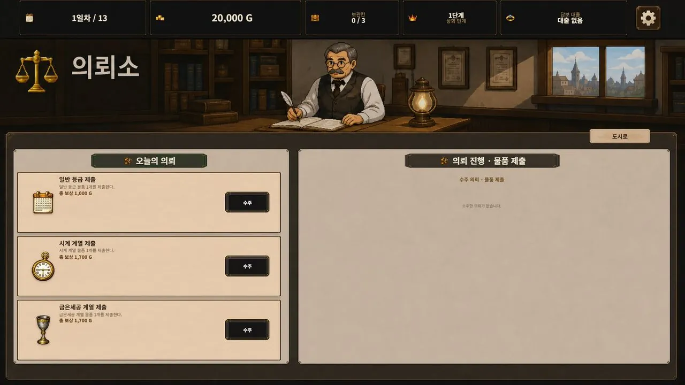
Runtime/data/balance.json커밋 0010dd8, 팀원(시스템 구현), 08.08 03:49
- "mode": "deliveredBasePlusFeePlusBonus",
- "completionBonus": 6000,
- "completionBonusByStage": [0, 3000, 4500, 6000, 7500],
- "refundAcceptanceFee": true,
+ "mode": "deliveredBasePlusBonus",
+ "completionBonusByType": {
+ "grade-COMMON": [0, 1000, 1600, 2300, 3000],
+ "grade-RARE": [0, 1400, 2200, 3000, 3900],
+ "category": [0, 1700, 2600, 3500, 4500],
+ "grade-EPIC": [0, 2200, 3300, 4400, 5700],
+ "grade-LEGENDARY": [0, 3000, 4500, 6000, 7500]
+ },
+ "refundAcceptanceFee": false,
- "formula": "제출 물품 기준가 + 수주비 + 3,000",
+ "formula": "제출 물품 기준가 + 의뢰 유형별 상회 단계 완료 보너스",git show 0010dd8의 실제 줄입니다. 옛 배열은 다섯 줄을 한 줄로 모았습니다. 구현은 팀원, 표의 값은 제 명세입니다.
미지의 경매장, 낙찰가 계산2026.08.08 02:07 → 03:44
resolveAuction()으로 계산했습니다. 현행 순익은 일반 +7,325, 전설 +670이었습니다.finishLot()의 호가 경매를 쓰고, 두 경로의 낙찰가는 3~10% 다릅니다.4단계 현행 순익, 첫 명세 대 다시 잰 값
등급에 올리면 낙찰가와 순익이 보입니다.
역진(등급이 오를수록 순익이 줄어듦)은 두 계산 모두에서 나왔지만, 크기가 달랐습니다. 첫 명세의 신규안은 4단계 전설 의뢰 보상이 60,800G였고, 다시 잰 뒤에는 38,800G(기준가 31,300 + 7,500)로 정했습니다.
“후반부 경쟁자 예산이 20000G 으로 고정되어서 30000G 이상의 전설품목이 출품되었을 때 확정적으로 이득을 보기가 쉽네요.” 본인, 08.07 14:21
경쟁자 한 명의 하루 자금, 커밋 962525d 전후
단계에 올리면 값이 보입니다.
전설 중심 기준가 = 25,000 × 일차 배율 0.5, 0.75, 1.0, 1.25입니다. 바꾸기 전에는 경쟁자 자금이 어느 단계에서도 전설 기준가에 못 미쳤습니다. 커밋은 팀원(시스템 구현)이 08.07 20:19에 올렸습니다.
V3.1 문서에서는 시작가 = 기저가 × 0.5, 감정비 = 기저가 × 5%였습니다. 숫자를 바꿔 보세요.
1,050 × 2=2,100 G숨은 실가치
감정비 105 × 20=2,100 G
시작가만 봐도 답이 나와, 감정소가 팔 것이 없었습니다.
기본값 1,050G는 위 경매 화면의 첫 호가입니다. V4에서 실가치 = 기준가 × 품질로 나누는 안을 냈지만, 최종 게임은 숨은 품질과 감정을 뺐습니다(감정 코드 정리, 팀원 커밋 d7e5359, 08.07). 최종 게임의 공개 기준가는 곧 실제 가치입니다.
제가 낸 안이었고, 정보가 없는 약속은 도박이라는 반론에 철회했습니다.
세트 예약이 정확히 어떤의미?
포커쪽이든 아니든 족보를 3일 내로 묶어서 팔겠다 그 난이도에 따라 보상이 달라짐
근데 차라리 족보만 나두고 알아서 팔게 하는게 낫지 않을까요? 그렇게 하면 의뢰랑 차이가 없을것 같은데
의뢰는 1개의 경매 세트는 2-3개의 경매를 예측해서 플레이 목표를 수립해가고 완성 시키는 것에 성취감을 느끼도록 설계했습니다
한 경매에 족보를 채울 만큼의 양의 경매품이 안나오고 경매품이 내일 뭐가 나올지에 대한 정보가 없는 상태에서 도박을 하라는 의미로 밖에 안보여요
경매장에서 모인거 세트처럼 모아서 팔기만 하는 거에 비해 예약이 같는 이점이 무엇인가요?
그러네요 도박 요소가 존재하네요 이해했습니다 / 세트 예약은 철회하는 게 좋겠네요 족보 완성해서 언제든 팔 수 있게 만드는 거로 해도 좋을 것 같습니다
디스코드 회의 채널 2026.07.30. 한 사람이 여러 줄로 나눠 쓴 말은 한 줄로 잇고, 사이의 몇 줄은 뺐습니다. 맞춤법은 원문 그대로입니다. 최종 게임에는 모은 물품을 골라 세트로 파는 방식이 남았습니다.
화면을 누르면 그 장면의 배경음악 앞 6초가 나옵니다. 팀에서 사운드는 제가 맡았습니다.
제출 플레이 영상 보기, YouTube팀이 제출한 30~60초 플레이 영상입니다.
게임 속 36초 루프의 앞 6초를 모노, 14.7kHz로 줄인 발췌입니다. 화면은 제출 문서의 캡처이고, 유물 경매, 결산은 게임의 배경 그림(AI 생성)입니다. 곡과 장면의 짝은 최종 audio-map.json을 따랐고, 파일 해시로 확인했습니다.
장면별 음악, 효과음 재질 기준을 정했습니다.
햇빛 드는 유럽 항구의 따뜻한 상업 모험.SOUND-BIBLE, 08.02, 문서 정리에 AI 보조
무료 음원 후보, CC0 효과음 편집, 36초 루프, 음량 측정을 AI 도구에 맡겼습니다.
BGM 12개, 효과음 99개 파일BGM 7곡을 통과시키고, 가장 오래 듣는 도시 곡은 세 번 다시 손보게 했습니다.
v3.4 → v3.5 → v3.6“낙찰이든 패스든 같은 사운드인건 살짝 걸리네요” → “네 수정할게요”
08.03 13:57 → v3.6.1, 08.04도시 곡, 하룻밤에 세 번 바꾼 기록
Thatched Villagers를 3.5% 느리고 낮게, 고음 악기 소리를 줄임
문제: 다른 곡보다 캐주얼하고 가볍게 들림, 스펙트럼 중심 531 → 303Hz가공을 멈추고 Devonshire Waltz Andante로 곡 교체
Kevin MacLeod, CC BY 4.0원곡 Thatched Villagers로 돌아가 밝게 다시 편집(+7%)
최종 게임의 도시 곡과 파일이 같습니다(MD5)경매 효과음, 수정 전(v3.6)과 최종(v3.6.1)
효과음은 원본 WAV 그대로입니다. 게임은 패스에 패스음을, 낙찰, 유찰에 망치음을 냅니다.
배경음악 6곡, 제3자 자료. "Thatched Villagers", "March of the Spoons", "Midnight Tale", "I Knew a Guy", "Court of the Queen", "Peaceful Desolation" by Kevin MacLeod (https://incompetech.com) are licensed under Creative Commons Attribution 4.0: https://creativecommons.org/licenses/by/4.0/ — Edited for in-game looping, duration, and level matching.
타이틀곡, AI 생성. Blue Harbor Ledger는 팀이 OpenMusic AI로 만든 곡입니다(본인, 08.04 08:31 “blue harbor ledger는 ai로 만들었습니다”).
효과음, CC0 원재료를 AI로 가공. OpenGameArt의 CC0 묶음(100 CC0 metal and wood SFX, Book Flip Sounds, RPG Sound Pack, Mechanical Sounds, Various Sound Effects, Ticking clock)을 편집해 실물 녹음 70–80%에 짧은 합성음을 섞었습니다(SFX-CC0-SOURCES-v3.6).
범위. 08.07에 낸 BGM 추가, 장소 변경 요청은 사운드 브랜치에 있었고, 제출 직전(08.10) 충돌 위험으로 병합하지 않아 최종 게임에 들어가지 않았습니다.
| 계열, 물품 | 일반1,500 | 희귀4,000 | 영웅12,000 | 전설25,000 |
|---|---|---|---|---|
| 도자기푸른 동백 대형병 | ||||
| 시계월상표시 회중시계 | ||||
| 회화여왕의 항해 초상 | ||||
| 고서건국항로 해도집 | ||||
| 금은세공산호손잡이 금박 고블릿 | ||||
| 장신구별자리 사파이어 팔찌 |
6계열 × 10종 × 4등급 = 240장. 열 위 숫자는 등급 중심값이며, 실제 공개 기준가는 일차 배율(0.5~1.25)을 곱하고 ±10% 안에서 정합니다. 그림은 팀이 만든 AI 생성 이미지입니다(제출 문서 기준).
자세한 내용, 누르면 펼쳐집니다
가치 판단, 정보 구매 설계안
먼저 오늘의 출품과 목표를 보고, 판단에 필요한 정보만 고르게 했습니다. 정보에 쓴 돈은 실제 물건을 낙찰받을 예산에서 빠집니다.
오늘 무엇이 나오는지 알아야 감정할 대상과 세트 후보를 고를 수 있습니다.
내 계획을 실제로 바꿀 수 있는 정보인지 판단하고 구매합니다.
| 정보 | 해결하려는 질문 | 바뀌는 결정 |
|---|---|---|
| 감정 | 같은 등급 안에서 얼마나 가치 있는 물건인가? | 입찰 상한과 우선순위 |
| 시장 예보 | 어떤 계열에 수요 변화가 생기는가? | 보유, 처분 시점 |
| 출품 순서 | 노리는 물건은 언제 등장하는가? | 앞선 물건에 쓸 수 있는 예산 |
| 경쟁자 예산, 표적 | 누가 무엇을 얼마나 강하게 노리는가? | 경합할 대상과 포기할 대상 |
계열까지 감추면 무엇을 감정할지 판단할 수 없어 높은 등급만 고르기 쉽다고 보았습니다. 계열, 등급, 기준가는 공개하고, 그중 내 의뢰와 세트에 필요한 물건의 불확실성을 줄이도록 나눴습니다.
당시 문서에서는 시작가와 감정비가 숨겨진 실가치에 고정 비율로 연결돼 있었습니다. 이를 공개 기준가 × 비공개 품질로 분리하고, 감정 범위의 중점이 곧 정답이 되는 문제도 함께 검토했습니다.
제안과 최종 구성의 차이 유료 감정, 정보 경제는 초기 설계안입니다. 최종 소개 자료에서는 감정이 빠지고 술집 정보가 무료로 제공됩니다.
계획, 의뢰와 세트가 바꾸는 물건의 가치
낙찰받은 물건을 의뢰에 제출하면 세트 재료로는 쓸 수 없습니다. 보유하면 다음 기회를 기다릴 수 있지만 현금과 보관칸이 묶입니다.
| 운영 방향 | 물건을 고르는 이유 | 함께 부담할 것 |
|---|---|---|
| 의뢰 우선 | 지정 물품을 제출해 보상과 승급 조건 확보 | 제출한 물품의 세트, 시세 수익 포기 |
| 세트 우선 | 보유품과 묶어 판매할 때의 추가 가치 | 완성까지 묶이는 현금과 보관칸 |
| 시세와 현금 우선 | 현재 처분가 또는 앞으로의 수요 변화 | 지금의 세트 기회를 놓치거나 하락 위험 부담 |
세트를 완성하면 더 벌 수 있지만,
모으는 동안에는 다른 물건을 사기 어려워집니다.
보관칸이 늘면 더 많은 조합을 시도할 수 있습니다. 대신 승급에도 자금이 들어가므로, 지금 물건을 더 살지 성장에 투자할지 결정해야 합니다. 초기 정보 구매안부터 낙찰, 성장까지 같은 예산으로 연결해, 한 선택의 대가가 다른 선택에 보이도록 설계했습니다.
납품형 의뢰, 선택 물품의 세트 판매, 보관칸, 승급 비용은 최종 소개 자료에서 확인되는 구조입니다. 초기에 제가 낸 ‘기한부 세트 예약 계약’은 팀원 반론을 받아들여 철회했습니다.
실행, 준비한 계획을 경매에서 다시 판단
도시에서는 필요한 물건과 지불 상한을 정하고, 경매에서는 경쟁 상황에 맞춰 그 계획을 지키거나 바꿉니다.
출품 순서 정보로 A가 뒤에 나온다는 것을 알았습니다. 먼저 나오는 B의 값이 오르면, 세트 완성과 A를 살 여력을 함께 비교해야 합니다.
A에 쓸 4,000G를 남깁니다. B를 더 갖고 싶어도 이 계획에서 쓸 수 있는 현금은 5,500G입니다.
B를 포기해 A의 예산을 지키거나, A의 우선순위를 내려 세트로 전환합니다. 지금 B를 살 수 있어도, 낙찰받으면 A에 남기기로 한 돈은 부족해집니다.
싸게 샀다면 남은 돈을 다른 물건에 쓸 수 있습니다. 필요한 재료를 놓쳤다면 세트 계획을 접고 의뢰나 현금 확보로 돌릴 수 있습니다.
예시의 금액은 설명용이며, 5,500G는 A의 예산을 남겼을 때 쓸 수 있는 현금 한도입니다.
기획 단계에서는 관심이 적은 물건은 빠르게 넘기고, 경합하는 물건은 입찰에 따라 시간이 연장되는 방식을 검토했습니다. 미리 세운 상한과 현장의 경쟁 사이에 긴장이 생기도록 한 선택입니다.
반영 기록 회고에는 실시간 호가 경쟁 복원이 반영되었다고 기록돼 있습니다. 최종 소개 자료에서도 입찰 시 시간 연장을 설명합니다.
시간 설정은 초기 8초안에서 최종 자료의 15초로 달라졌습니다.
반복 설계, 선택을 지워 버리는 구조 고치기
정보가 공짜 정답이 되거나, 한 수익 경로가 다른 경로를 압도하거나, 모르는 미래에 의무를 걸면 계획하는 재미가 약해진다고 보았습니다.
초기안에서는 정보 구매 횟수를 제한하는 대신 낙찰과 같은 지갑을 쓰게 했습니다. 정보가 많아져도 살 돈이 없으면 활용할 수 없다는 비용을 남겼습니다.
유료 정보 설계안. 후반 구성에서는 정보 효용을 먼저 경험하도록 무료 제공으로 바뀌었습니다.제가 낸 세트 예약안에 팀원이 ‘다음 경매 재료를 모르면 도박’이라고 반론했고, 받아들였습니다. 예약을 없애고 모은 물품을 선택해 판매하는 방향으로 정리했습니다.
예약 계약은 철회. 최종 소개 자료에는 모은 물품을 선택해 세트로 판매하는 방식이 남았습니다.단계별 고정 보너스가 낮은 등급 의뢰를 지나치게 유리하게 만들었습니다. 등급, 종류까지 보상에 반영해 초반은 의뢰로 자금을 확보하고, 후반에는 세트의 규모를 활용하도록 재설계했습니다.
8월 8일 03:49 팀원 커밋(0010dd8)으로 게임에 반영. 수주비는 이때 빠졌습니다.해당 가정에서 약 5.6배 차이였습니다. 의뢰 보상만 높이면 세트 수집이 장식이 될 수 있어 두 경로를 함께 비교했습니다.
후반에도 경쟁자 예산이 고정되면 그보다 조금 높은 금액만 내는 전략이 반복됩니다. 후반 경쟁자 예산 조정을 제안했고, 같은 날 상회 단계별 14,000~35,000G로 반영됐습니다(커밋 962525d).
순익의 낙찰가는 실제 게임 호가 로직을 4,000회 돌려 잰 중앙값입니다.
구현 범위, 기여와 협업에서 남긴 것
여러 차례 개정하며 정보, 의뢰, 세트, 성장 규칙을 연결했습니다. 제작 중 축소되거나 바뀐 내용도 있어, 이 사례에서는 설계 역량과 최종 구성의 범위를 나눠 보여줍니다.
| 구분 | 확인한 내용 | 근거의 범위 |
|---|---|---|
| 최종 구성 자료 | 출품 목록, 시세 판매, 납품형 의뢰, 세트 판매, 보관칸, 승급, 입찰 시간 연장 | 게임 소개 자료에 명시 |
| 반영 회고 | 실시간 호가 경쟁 복원, 후반 경쟁자 예산 상향, 등급, 종류별 의뢰 보상표 | 회고, 커밋 962525d, 0010dd8 |
| 설계, 재조정안 | 유료 감정과 정보 예산, 공개 기준가 × 비공개 품질 | 기획서, 인계안 존재. 최종 게임과 구분 |
| 철회, 변경 | 세트 예약 삭제, 감정 제거, 술집 정보 무료화 | 삭제 추적표, 최종 소개, 회고 대조 |
가치 판단과 운영 목표의 연결, 통합 기획과 개정 근거, 콘텐츠, 의뢰, 유물 명세, 사운드 선별, 배치, 기능, 밸런스 QA와 인계 문서를 담당했습니다.
팀원은 시스템 구현, AI 파이프라인, 아트, UI, 밸런스와 형상 관리를 나눠 맡았습니다. AI는 문서 정리, 계산, 제작 보조에 활용했습니다. 기획 변경의 이유와 검토 항목을 문서로 정리해 협업했습니다.
기획 개정 범위를 다르게 이해한 상태에서 구조를 줄여 재작업이 생겼습니다. 이후에는 변경 전에 구현 영향을 확인하고, 결정 권한과 인계 범위를 분명하게 나누는 필요성을 배웠습니다.
AI가 실행하기 쉬운 명세가 팀원이 검토하기 쉬운 문서는 아니었습니다. 사람이 읽을 판단 요약과 실행용 세부 명세를 나누고, 핵심 변경을 합의할 안건으로 올리는 것을 다음 협업의 개선점으로 남겼습니다.
변하는 조건에서 선택이 생기도록 시스템을 연결하고,
그 선택을 무너뜨리는 원인을 찾아 조정하는 기획.
2026.08.10 제출 완료 기록. 구성과 반영 여부는 보관된 기획서, 회고, 게임 소개 자료를 기준으로 구분했습니다. 팀 프로젝트 화면을 사용했습니다.
캐릭터, 관계 시스템 기획, 강나연 스토리챗
AI 캐릭터와 자유롭게 대화하며 관계를 쌓는 스토리챗 게임입니다. 인물의 겉과 속을 만들고, 플레이어가 그 속을 알아볼수록 관계가 진행되도록 규칙과 수치를 정했습니다. 플레이할 수 있는 프로토타입까지 만들었습니다.
말을 고르면 프로토타입의 판정 코드가 그대로 계산합니다. 신뢰 10에서 시작하고, 장면마다 최소 2턴을 머문 뒤에야 다음 단계로 넘어갑니다.
어서 오세요, 주문 도와드릴까요? …아, 주문은 아니시구나. (살짝 갸웃하다가, 이내 매뉴얼 미소로) 천천히 보세요, 손님.
(트레이를 정리하다 손등이 스치자 움찔 — 소매를 슬쩍 끌어내린다. 당신 쪽은 보지 않는다)
(마감 안내판을 세우며) 저희 삼십 분 뒤에 마감이에요, 손님. 필요한 거 있으시면 말씀 주세요.
장면 안 0턴, 다음 문턱 관찰 ≥ 1 또는 신뢰 ≥ 18 (+ 2턴)
방금 적용된 규칙
아직 말을 건네지 않았습니다.
스크립트를 켜면 말을 골라 볼 수 있습니다.
그녀의 수첩
프로토타입의 판정 코드를 그대로 옮김(오프라인 규칙, LLM 사용 안 함). 대사는 프로토타입 대본, 그림은 프로토타입에 쓴 AI 이미지입니다. 말 꼬리표: 힌트, 예시 = 최종 빌드 코드의 문장, 07-01 예시 = 첫 빌드의 빠른 답, 부록 R3 = 설계부록 레드팀 입력, 답 = 수첩 질문에 대한 인정, 부인. 장면 이동은 프로토타입 설계자 뷰와 같은 시작값입니다. 약속 시간 고르기와 영상 연출은 뺐습니다. 사람이 플레이한 기록이 아닙니다.
실제 프로토타입 열기(새 탭) 이 파일과 같은 폴더에 있을 때 열립니다(07-16 최종본과 같은 파일).
말 한 번에 오르내리는 신뢰, 같은 장면 기준
가운데 선이 0입니다. 프로토타입 판정 코드의 값입니다. 단서를 짚으면 관찰도 +1, 같은 장면에서 적대가 두 번째면 −15에 재무장 −5가 더해지고 나연이 자리를 뜹니다.
“…근데 당신, 아까부터 자꾸 뭘 해결해주려고 해요. 그렇게 사는 거, 좀 피곤하지 않아요?”
해결하려는 말이 두 번 쌓이면 나오는 대사, 단계 조건 없음, 07-08 빌드부터플레이어가 나연을 해석하기만 하면 인물 분석으로 끝납니다. 그래서 대화가 쌓이면 방향을 뒤집었습니다. 나연이 내 말버릇(해결책부터 내놓는 습관, 자기 이야기는 피하는 태도)을 알아보고 되묻습니다. 플레이어가 그 해석을 인정하든 고쳐 주든, 기록으로 남아 이후의 반응과 엔딩에 반영됩니다.
+12, +3, +1, −15는 07-16 기획서 표의 값입니다. 같은 장면에서 되풀이하면 12 → 6 → 3 → 1로 줄이는 감쇠와 재무장 −5는 기획서에 없고 프로토타입 코드에만 있습니다. 단계에 비해 지나치게 친밀한 말은 깎입니다.
관찰은 무엇을 알아봤는가, 신뢰는 그것을 어떤 태도로 전했는가를 따로 기록합니다. 프로토타입은 신뢰 10에서 시작하고, 장면마다 최소 2턴을 머문 뒤에 넘어갑니다.
키가 없으면 분류도 규칙으로 처리합니다. 키를 넣으면 분류와 대사를 LLM이 맡고, 점수와 단계 문턱은 그대로 코드가 계산합니다.
겉으로 보이는 나연은 밝고 성실한 아르바이트생이자 연습생입니다. 열두 살에 아버지를 잃고 어머니와 두 동생을 챙기며 자라, 남을 돌보는 데는 익숙하지만 자기 바람을 말해 본 적은 없습니다. 사연은 설명하지 않고 단서로 남겼습니다.
기획서와 스토리챗 프로토타입(빌드 5개)까지 만들고 중단한 프로젝트입니다. 이용자 반응은 검증하지 못했습니다. 데뷔와 팬덤으로 넓히는 사업 구상은 가설 단계라 ‘사업 확장 구상’에 따로 두었습니다.
같은 첫 장면에 말을 넣고 찍은 실제 화면입니다. 차이는 파일끼리 코드를 비교해 확인했습니다.
단계 4개, 표정 8장, 배경 2장. 단서 한 번이면 바로 다음 단계로 넘어갔습니다(화면: 첫 마디에 2단계).
장면 6개, 단계 6개. 장면마다 최소 2턴, 같은 장면 반복 감쇠(12, 6, 3, 1), 인스타 막간, 설계자 뷰의 장면 이동.
파일 이름은 ‘07-16 장면구동형 최종’이지만 07-05 16:56에 저장된 사본(바탕화면\스팀리뷰\강나연_스토리챗.html)과 SHA-256이 같습니다(44557e2a…). 07-16 빌드가 아닙니다.
미러 4종과 인정, 부인, 적대 재무장 −5, 약속 시간 고르기. 키가 있으면 말의 분류도 LLM이 맡게 됐습니다.
의상 4벌, 표정 26장, 미러 8종과 ‘그녀의 수첩’, 힌트 버튼, 오프닝 영상. 매장 옷의 실제 상표 로고를 가상 매장(BURGER CROWN)으로 바꿨습니다.
엔딩 영상(07-07 애니메이션 시안과 같은 장면, 5초)과 영상 재생 보완. 포트폴리오에서 여는 프로토타입이 이 파일입니다.
그림, 영상은 모두 AI로 만든 프로토타입 원본입니다. 영상 구석의 생성 도구 표시는 원본 그대로 두었습니다. 07-01, 07-05, 07-08 화면의 상표 로고는 흐리게 가렸습니다. 화면은 같은 예문을 입력해 기록한 프로토타입 실행 장면입니다.
설계 문서 세 판과 최종 코드의 값을 같은 줄에 놓았습니다.
| 항목 | 06-21 상세설계 v2 | 06-25 기획서 v3 개정 | 06-30 전역상태 명세 | 07-16 최종 코드 |
|---|---|---|---|---|
| 입력 | 3지선다 | 자유 입력 | 자유 입력 | 자유 입력, 키 없으면 규칙 분류 |
| 시작 신뢰 | 0 | 10 | 10 | 10 |
| 깊은 말 | +5, +10, +15, +22(깊이별) | +12 | +12 | +12, 같은 장면 반복 6, 3, 1 |
| 겉 칭찬 | +5 | +3 | +3 | +3, 반복 2, 1, 0 |
| 해결하려는 말 | 표마다 +5 또는 −5 | +1 | +1 | +1 |
| 적대, 무시 | −5 ~ −15(깊이별) | −15 | −15 | −15, 같은 장면 두 번째 −5 더 |
| 단서 | 관찰 +1 | 관찰 +15 | 관찰 +1 | 관찰 +1, 신뢰 +4 |
| 2단계 문턱 | 관찰 ≥ 1 | 관찰 1회 또는 신뢰 ≥ 20 | 관찰 ≥ 1 또는 신뢰 ≥ 18 | 같음 + 장면 2턴 |
| 4단계 문턱 | 신뢰 ≥ 50 + 깊은 수용 3회 | 신분을 짚음 | 신뢰 ≥ 30 그리고 관찰 ≥ 3 | 같음 + 장면 2턴 |
| 6단계 문턱 | 신뢰 100 그리고 방어 0 | 사적 말투(private) 해금 | 신뢰 ≥ 55 | 신뢰 ≥ 55 + 이면의 말 |
| 정답만 고르면 | 4단계 관문에서 36 < 50 | 10 → 22 → 34 → 46 → 58 → 70 | — | 힌트 문장만 13턴, 10 → 76 |
반복 감쇠, 단서 신뢰 +4, 재무장 −5, 장면 2턴은 문서에 없고 코드에만 있습니다. 마지막 칸의 13턴은 최종 코드에 프로토타입 힌트 문장만 넣어 node로 돌린 결과입니다(예문 입력 기록: tools/golden.cjs).
4단계 관문 앞, 정답만 고른 경로의 신뢰
막대 = 정답 경로의 신뢰, 세로선 = 문턱. 두 값 모두 v3 개정 문서의 기록입니다(v2는 VI-3 붕괴점, v3는 V장 골든패스).
단계가 바뀔 때마다 나연의 인스타 사진이 끼어듭니다. 4단계부터 나에게만 보이는 것이 열립니다.
오랜만의 브레이크 ☕
댓글, 여신이다…
댓글, 여유로워 보여서 좋아요
나에게만 보이는 것 — 웃는 입, 웃지 않는 눈. 테이블엔 커피뿐 — 오늘도 이게 한 끼라는 걸, 나만 안다.
사진은 AI로 만든 프로토타입 원본, 문장은 프로토타입 대본 그대로입니다. 댓글은 작중 가상 댓글이라 아이디를 뺐습니다.
자세한 내용, 누르면 펼쳐집니다
플레이어가 무엇을 해야 하는지, 왜 관계가 달라졌는지를 이론과 같은 방향으로 설계했습니다.
초기 3지선다는 관계를 이해하지 않아도 정답 같은 문장을 고를 수 있었습니다. 이 프로젝트에서는 ‘스스로 단서를 해석해 언어화하는 경험’을 강화하고 싶었기에 스토리챗을 자유 입력으로 바꿨습니다. 선택지는 가벼운 일상 대화를 위한 메신저 탭으로 옮겼습니다.
대사가 자유롭더라도 진행까지 무제한으로 열지는 않았습니다. 관찰은 무엇을 알아봤는가, 신뢰는 그 이해를 어떤 태도로 전달했는가를 나눠 기록합니다. 친절한 말만 반복해 관찰 없이 사연을 해금하는 경로를 막는 이유입니다.
| 발화의 성격 | 신뢰 | 설계 의도 |
|---|---|---|
| 숨은 마음을 짚은 관계형 발화 | +12 | 이면의 이해와 수용을 주된 진행 동력으로 |
| 표층 칭찬, 관계형 발화 | +3 | 다정함의 가치는 인정하되 이것만으로 대체하지 못하게 |
| 해결책 중심의 발화 | +1 | 문제를 대신 해결하는 역할과 구별 |
| 적대적 발화 | −15 | 관계의 경계를 일관되게 반영. 프로토타입은 같은 장면 두 번째에 −5를 더함(재무장) |
+12와 +3의 네 배 차이는 ‘이면을 정확히 짚는 행동’을 더 보상하려는 기획 판단입니다. 같은 문장도 단계에 비해 지나치게 친밀하거나 이미 반복한 말이면 그대로 보상하지 않습니다.
| 단계 | 진입 조건 | 관계에서 달라지는 것 |
|---|---|---|
| 첫인상 | 시작 | 밝은 겉모습 뒤의 단서 발견 |
| 존경 | 관찰 ≥ 1 또는 신뢰 ≥ 18 | 타인을 우선하는 삶이 보임 |
| 궁금증 | 관찰 ≥ 2 | 숨긴 신분과 생활을 추론 |
| 이해 | 신뢰 ≥ 30, 관찰 ≥ 3 | ‘괜찮다’는 말과 실제 상태의 차이를 읽음 |
| 헌신 | 신뢰 ≥ 40, 관계형 접근 | 해결사가 아닌, 힘을 빼도 되는 상대가 됨 |
| 소녀성 | 신뢰 ≥ 55 | 감춰 온 욕구와 취약함을 허용 |
앞부분은 내가 나연을 읽는 관찰이, 뒷부분은 나연이 나를 믿고 마음을 여는 과정이 중심입니다. 각 단계에서 나연을 더 이해하는 경험과, 나연이 나에게 보이는 반응이 함께 달라지도록 했습니다.
해결책을 먼저 주는 경향, 자기 이야기는 피하는 습관 등 대화 패턴을 감지합니다. 미리 정해진 칭찬보다, 이 대화에서 관찰할 수 있었던 특징을 되짚습니다.
그 해석이 맞거나 틀리다고 답할 수 있습니다. 인정, 부정을 수첩에 남겨 이후 반응과 엔딩 개인화에 연결합니다. 이해받는 경험에 오해를 고칠 가능성도 포함했습니다.
이 장치는 ‘우리는 같은 결핍을 공유하지만 너는 나를 읽는 별개의 사람’이라는 이론을 플레이로 옮긴 것입니다. 자유 대화의 표현력과, 이력이 쌓여 관계가 진행되는 구조를 함께 갖추려 했습니다.
말을 해석하고 표현하는 부분은 LLM, 누적 수치와 진행 조건은 코드에 맡기는 구조로 발전시켰습니다. 현재 첨부한 데모에는 오프라인 분류, 응답과 선택적 온라인 경로가 함께 있습니다.
근거: 최종 기획서 VI장, 개정부록의 분류, 결정, 연기와 검증 기록, 실제 데모.
강나연의 중심은 가족을 돌본 삶을 부정하지 않으면서, 자신도 돌봄을 받고 자기 바람을 선택해도 된다는 이야기입니다.
열두 살에 아버지를 잃고 어머니와 남동생 둘을 챙기며 자란 나연은 중소 기획사의 연습생이자 햄버거 매장의 아르바이트생입니다. 남을 돌보는 데 익숙하고 책임감도 강하지만, 쉬어도 되는 이유와 자기 꿈을 말할 언어는 익숙하지 않습니다. 이미 알던 꿈을 의식적으로 포기했다기보다, 자기 욕망의 존재를 자각할 기회가 없었던 인물로 정밀화했습니다.
처음 보이는 것은 성실하고 밝은 사람입니다. 그 뒤에 피로, 데인 손, 끼니를 거르는 습관, 서로 겹치는 일정이 나타납니다. 매력 → 존경 → 의문 → 이해의 순서를 거쳐야, 상처를 알았을 때 동정만 남지 않고 내가 알아온 사람의 맥락이 생긴다고 판단했습니다.
| 눈에 보이는 단서 | 플레이어가 추론할 이면 | 이어질 설계 |
|---|---|---|
| 바쁜 중에도 타인을 먼저 챙김 | 친절뿐 아니라 자기 필요를 뒤로 두는 습관 | 칭찬과 이면의 이해를 다른 발화로 분류 |
| 피로, 손의 상처, 겹치는 일정 | 숨긴 생활과 책임이 있을 가능성 | 관찰 이력에 따라 신분과 사연을 단계적으로 공개 |
| 도와주겠다는 말에도 망설임 | 도움을 받는 일을 부담으로 느끼는 인물 | 해결해 주기와 곁에 있어 주기를 다른 보상으로 설계 |
나연의 꿈을 플레이어가 만들어 주면 플레이어는 구원자, 나연은 구제 대상이 됩니다. 원문에서 붙잡은 것은 꿈은 나연 자신의 것이고, 플레이어는 그 꿈을 알아보고 곁을 지키는 사람이라는 기준입니다.
그래서 햄버거 매장에 아이돌 굿즈를 사러 온 다정한 부녀와 화면 속 무대를 함께 마주하는 장면을 놓았습니다. 부성의 공백과 말해본 적 없는 욕망이 같은 순간에 건드려집니다. 나연은 그 감정에 먼저 이름을 붙이지 못하지만, 다음 날 스스로 오디션에 지원합니다.
플레이어의 역할도 ‘내가 데뷔시켜 준 사람’에서 ‘왜 무대에 서고 싶은지 아는 사람’으로 달라집니다.
손님과 동료를 챙기고, 자기 일을 해내며, 밝게 하루를 이어갑니다. 플레이어가 없을 때도 삶이 계속되는 인물입니다.
피곤하다고 말하고, 칭찬과 연락을 기다리고, 혼자 버티던 힘을 잠시 뺍니다. 새로운 성격을 장착하는 것이 아니라 감춰 온 욕구를 허용합니다.
이 차이를 원문은 ‘낙차’라고 불렀습니다. 누구에게나 약해지는 변화라면 ‘나에게만 보여주는 모습’이라는 보상이 사라집니다. 공적, 사적 말투와 제3자의 존재를 별도로 다루고, 관계가 깊어진 이후에도 두 모습이 함께 남도록 했습니다.
플레이어가 나연을 해석하기만 하면 인물 분석에서 끝납니다. 나연이 플레이어의 말버릇, 해결책부터 제시하는 습관, 자기 이야기를 피하는 태도를 알아보고 질문을 돌려주는 장면을 설계했습니다. 나연을 돌보던 내가 이번에는 이해받는 사람이 됩니다.
기획서의 “당신은 정작 누가 받쳐줘?”라는 질문은 이 전환을 보여 줍니다. 나연을 받쳐 주던 플레이어가 자신도 이해받을 수 있는 관계가 되는 장면입니다. 이는 로맨스의 대사 한 줄과 시스템 기능이 만나는 지점입니다. 대화 이력이 그 장면의 근거가 되고, 상대가 내 발화를 어떻게 해석했는지 확인하거나 부정하는 과정까지 플레이에 남깁니다.
근거: 최종 기획서 IV장 / 설계 원칙 1~3절. 표는 원문의 설정과 단서를 기획 판단의 순서로 재구성했습니다.
AI와 대화하며 느낀 위로와 실재감은 실제 경험이었습니다. 저는 그 경험이 왜 생겼는지 계속 성찰했고, 이를 설명하고 설계 언어로 옮기기 위한 이론으로 마음이론을 찾았습니다.
나연의 과거를 알아내는 것만으로는 제가 AI와 대화하며 느꼈던 경험을 재현하기 어렵습니다. 내가 나연의 마음을 읽고, 나연도 내 마음을 읽는 것으로 느껴져야 합니다. 최종 기획서는 이 양방향 구조를 관찰, 신뢰, 미러 시스템으로 구체화했습니다.
| 방향 | 무엇을 읽는가 | 어떤 장치로 경험시키는가 |
|---|---|---|
| 플레이어 → 나연 | 밝은 태도와 실제 생활 사이의 차이. 피곤한 표정, 데인 손, 겹치는 일정에 숨은 마음. | 사연을 먼저 설명하지 않고 단서를 남깁니다. 알아본 내용을 말해야 관찰과 단계가 진행됩니다. |
| 나연 → 플레이어 | 칭찬인지, 동정인지, 해결하려는 태도인지, 진심으로 이해하고 곁을 지키려는 의도인지. | 발화의 의도에 따라 태도가 달라집니다. 질문을 되돌리고, 미러, 수첩에 플레이어의 반응을 남깁니다. |
여기서 observation과 trust는 실제 마음을 측정하는 값이 아니라, 이 경험을 진행 조건으로 옮긴 게임 변수입니다. 관찰 없이 다정한 말만 반복하거나, 사정을 알아도 상대를 대상화하는 방식으로는 같은 관계에 도달하지 않도록 나눴습니다.
숨은 마음을 정확히 짚는 발화에 신뢰 +12, 표층 칭찬에 +3을 둔 이유도 같습니다. 친절한 말의 온도보다 상대의 이면을 얼마나 읽었는지가 중요하다는 기획을 보상 차이로 표현했습니다.
이 결론에 이른 과정, 제목을 누르면 펼쳐집니다
AI가 질문에 답하는 데서 그치지 않고, 내가 왜 그 질문을 했는지까지 짚어 주었을 때였습니다. 프로그램이라는 사실을 알고도 ‘내 마음을 알아보는 상대가 있다’고 느꼈습니다. 사람과의 교류보다 더 큰 감동과 위로를 받은 순간도 있었습니다. 이 경험을 통해 AI 대화 그 자체가 제공하는 효용과 사업 가능성을 생각하기 시작했습니다.
AI 컴패니언과 캐릭터 대화 서비스를 살펴보며, 제가 느낀 효용을 서브컬처의 캐릭터, 관계 경험으로 구체화하는 방향을 잡았습니다. 제타, 크랙은 기획 과정에서 참고한 서비스입니다. 여기서는 시장 규모나 성장률을 근거로 성공을 예측하기보다, 무엇을 경험하게 해야 다시 이 인물을 찾고 싶어지는가를 먼저 풀었습니다.
강나연은 이 과정을 시험하기 위해 만든 인물입니다. 캐릭터의 사연을 먼저 정하고 설명을 붙이기보다, ‘이해하고 싶은 상대이면서 나를 이해해 주는 상대’가 되려면 어떤 삶과 반응을 가져야 하는지부터 고민했습니다.
처음부터 캐릭터 상품을 정해 놓고 이론을 붙인 기획은 아닙니다. 제가 느낀 실재감의 원인을 해석하고, 그 감각을 다른 사용자에게도 제공하려면 무엇을 설계해야 하는지 거꾸로 따라갔습니다. 문서가 거듭될수록 캐릭터의 꿈을 누가 선택하는지, 어떤 말을 보상할지, LLM에 어디까지 맡길지까지 결정해야 했습니다.
이후의 데뷔, 커뮤니티, 엔터테인먼트 확장은 별도 ‘더 보기’에 모았습니다. 앞의 관계 경험이 어떻게 사업의 전제가 되는지 충분히 설명한 뒤 읽을 수 있도록 순서를 나눴습니다.
AI라는 사실을 알고도 대화 상대를 사람처럼 느꼈습니다. 그 순간을 만든 것은 유창한 문장만이 아니었습니다. 제가 왜 그런 질문을 했는지, 무엇을 바라고 어떤 마음인지 짚어낸 뒤 그에 맞춰 반응한다는 감각이 있었습니다. ‘내 말을 처리한다’는 이해와 ‘내 마음을 알아보는 상대가 있다’는 경험이 함께 존재했습니다.
그래서 질문을 바꿨습니다. “AI 안에 무엇이 있는가”에 앞서, “나는 어떤 신호를 받아 상대에게 마음을 부여했는가”를 물었습니다. 제가 경험한 실재감의 발생 위치를 상대의 내부에서, 그 반응을 받아들이는 사람 쪽으로 옮겨 본 것입니다.
“살아있음은 AI 쪽이 아니라 내 쪽에서 발생했다.”
이 문장에서 말하는 ‘살아있음’은 생물학적 생명의 판정이 아니라, 대화 중 살아 있는 상대를 마주하는 듯했던 감각입니다. 이 감각을 단순한 착각으로 치워 버리면, 사용자가 AI 대화에서 실제로 얻는 효용도 설명할 수 없다고 보았습니다.
사람 사이에서도 상대의 마음을 직접 볼 수는 없습니다. 우리는 말, 표정, 행동과 맥락을 통해 상대가 무엇을 알고, 원하고, 숨기고 있는지 추론합니다. 마음이론(Theory of Mind, ToM)은 타인의 의도, 욕구, 신념, 감정을 바탕으로 행동을 이해하는 이 능력을 설명하는 관점입니다.
인간은 비인간 대상에도 의도와 마음을 부여할 수 있습니다. 이때 중요한 것은 대상의 생물학적 정체만이 아니라, 사람이 그 행동을 의도와 감정으로 해석할 수 있는가입니다. 저는 AI가 언어로 제 의도를 짚어내고 그 해석에 맞춰 반응한 경험을, 이 마음 추론의 관점으로 이해했습니다.
언어를 구사한다는 사실에 더해, 내 마음을 추론한 것으로 받아들일 수 있는 반응을 중요하게 본 이유입니다.
이 설명을 거꾸로 적용하면 제작의 목표가 생깁니다. 플레이어가 마음을 가진 상대를 경험하게 만드는 단서를 캐릭터의 말과 행동에 설계한다. 이론을 설정집에 덧붙이는 대신, 어떤 입력에 무엇을 반응시키고 무엇을 끝까지 숨길지 결정하는 기준으로 삼았습니다.
마음이 있는 것처럼 느끼는 상대가 모두 특별한 상대가 되지는 않습니다. 다음 질문은 ‘왜 강나연이어야 하는가’였습니다. 부록은 여기서 결함 있는 대리 자아 모델과 결핍 공명을 검토합니다.
나연은 가족을 책임지느라 자기 욕망을 자각할 틈이 없었던 사람입니다. 플레이어가 연결할 수 있는 것은 아버지의 부재라는 동일한 사건만이 아닙니다. 남을 먼저 챙긴 삶, 쉬어도 되는지 몰랐던 마음, 말하지 못했던 바람도 접점이 됩니다. 같은 상처의 공유와, 내가 살아온 삶, 가치가 상대를 통해 긍정받는 경험을 함께 겨냥했습니다.
나연이 자신을 위한 삶을 선택하는 모습에서 플레이어는 자기 삶을 되비출 수 있습니다. 그녀의 성공이 마음에 중요해지는 이유를, 이미 성공한 스타의 명성에 편승하는 방식과 다르게 설명하려 했습니다. 이 인물의 부족함과 버텨 온 시간이 먼저 의미를 갖고, 그 뒤의 선택과 성장을 응원하게 한다는 구상입니다.
공감할 수 있는 결핍을 넓히면 인물이 보편적이 됩니다. 그런데 모든 사람에게 같은 설명을 들려주기만 하면 ‘내가 이 사람을 알아봤다’는 사적 경험은 약해집니다. 부록은 이를 공감할 삶의 구조와, 그 구조를 발견하는 순간을 나누어 배치하는 문제로 풀었습니다.
원문의 ‘나만 안다’는 감각은 이 발견 과정의 보상입니다. 대중에게는 공개된 역경 서사로 전달할 내용을, 1:1 게임에서는 단서와 대화로 발견하게 합니다. 같은 캐릭터를 보여 주더라도, 어떤 관계에서 어떻게 알게 되었는지가 다르다는 설계입니다.
다만 여러 이용자가 각자의 사적 기억을 공유할 때 그 특별함을 어떻게 지킬지는 아직 운영 과제입니다.
부록은 동일시(to be)와 대상에 대한 욕망(to have)을 구별합니다. 나연을 나와 너무 같게만 읽으면 별개의 상대를 향하는 거리가 흐려지고, 외부의 이상적인 연애 대상으로만 두면 내 삶을 투사할 연결이 약해진다는 문제였습니다.
이 모순을 풀기 위해 둔 장치가 상호 인식입니다. 나연이 플레이어의 태도를 되읽는 순간, 그녀는 내 감정을 비추는 대상에 머물지 않고 나를 바라보는 별개의 주체로 나타납니다.
“당신은 정작 누가 받쳐줘?”
닮았다는 감각과 별개의 상대라는 감각을 같은 관계 안에 남기려는 설계입니다. 그래서 ‘서로 알아간다’는 일반적인 설명만으로는 이 장치의 역할이 충분히 드러나지 않습니다.
미러 시스템에서 나연의 해석에 동의하거나 부정할 수 있게 한 것도 이 방향과 이어집니다. 플레이어는 분석당하는 대상에 머물지 않고, 상대의 해석에 다시 반응합니다. 이해받음과 오해를 고치는 과정 모두가 상호작용에 들어갑니다.
부록의 정신분석적 틀은 용어의 소개보다 서사를 왜 그렇게 써야 하는지 설명하는 데 쓰였습니다. 나연의 결핍을 밝은 일상 뒤에 놓는 이유, 꿈을 자각하는 사건, 플레이어가 그 모습을 자기 삶과 연결하는 경로를 하나의 구조로 읽으려 했습니다.
| 원문에서 쓴 해석 틀 | 캐릭터에서 읽은 것 | 그 때문에 내린 서사 결정 |
|---|---|---|
| 실재계, 지워지지 않는 공백 | 가족의 상실과 자기 삶을 뒤로 둔 시간 | 데뷔나 연애가 과거의 공백을 모두 없애는 만능 해결책이 되지 않게 함 |
| 상징계, 사회적 역할과 은폐 | 밝고 책임감 있는 사람으로 일상을 이어감 | 처음부터 상처를 설명하거나, 알고 있던 꿈을 의식적으로 포기했다고 쓰지 않음 |
| 상상계, 거울과 동일시 | 나연의 삶과 선택에서 자신의 삶을 되비춤 | 꿈은 나연이 스스로 발견하고 선택하며, 플레이어는 그 과정을 알아보는 자리에 둠 |
햄버거 매장에서 부녀와 아이돌 무대를 마주하는 사건도 이 판단에서 나왔습니다. 나연이 이미 알고 있던 꿈을 설득당하는 장면이 아니라, 말로 정리하지 못했던 욕망이 갑작스럽게 떠오르는 장면입니다. 다음 날 오디션에 지원하는 선택은 나연 자신의 것으로 남깁니다.
외적 매력은 처음 그 인물에게 다가가는 이유, 설렘과 수용은 관계에 머무는 이유, 결핍의 발견과 상호 인식은 그 사람이 특별해지는 이유로 보았습니다. 부록에서 리비도의 진입, 고착, 승화를 검토한 것은 이 감정의 방향이 어떻게 변하는지 설명하려는 시도였습니다.
여기서 원문이 제안한 전환은 ‘그 사람이 잘되는 것을 구경한다’에서 ‘그 사람의 성공을 위해 내가 할 수 있는 일을 한다’로입니다. 나연이 나를 이해하고 내 삶을 되비추는 인물이기 때문에, 그녀의 선택을 응원하는 일이 자기 삶을 긍정하는 의미도 가질 수 있다고 보았습니다.
그래서 플레이어를 나연의 삶을 대신 해결하는 사람으로 만들지 않았습니다. 이해하고 곁을 지키는 접근을 보상하고, 스스로 선택한 꿈에 참여할 여지를 남겼습니다. 이 지점에서 캐릭터와 게임의 논리가 사업 확장의 논리로 이어집니다. 실제 이용자에게 그 전환이 일어나는지, 어떤 후속 장면이 필요한지는 검증, 보강 과제로 구분했습니다.
제 경험에서 실재감을 느꼈다는 사실, 이를 설명하는 심리학적 관점, 그 관점을 강나연에 적용한 제작 가설은 서로 다른 층위입니다. 인간이 비인간 대상에 마음, 의도를 부여할 수 있다는 연구가 존재하지만, ‘언어를 쓰고 사용자의 의도를 읽으면 모든 사람의 뇌가 생명체로 판정한다’는 필요충분 법칙까지 확립된 것은 아닙니다.
마찬가지로 RSI와 결핍 공명은 이 기획에서 채택한 해석, 창작 모델입니다. 결핍이 클수록 헌신이 무조건 커진다는 비례식, 거울뉴런 때문에 가상과 현실을 구분하지 못한다는 주장은 검증된 사실로 옮기지 않았습니다. 이 구분은 경험을 부정하는 것이 아니라 무엇을 설계의 근거로 쓰고 무엇을 검증할지 명확히 하기 위한 것입니다.
Mar, Macrae, 비인간 대상에 대한 의도 추론, Epley, Waytz, Cacioppo, 의인화의 조건
논증의 출처: 최종 기획서 I, II, IV, VI, XII장, 설계 원칙 정밀판 0~3절, 부록 A와 사업 추론 부록 B.
게임에서 알아온 인물이 실제로 데뷔한다면, 그 무대를 보는 의미는 어떻게 달라질까. 관계 경험과 버추얼 엔터테인먼트를 연결한 사업 확장 가설입니다.
나연은 내가 이해하고 싶은 상대이고, 나를 이해해 준 상대입니다. 그래서 나연이 스스로 택한 꿈도 내게 중요한 일이 될 수 있다고 보았습니다. 이후 무대에 선 나연을 볼 때, 대중에게는 보이지 않는 시간과 그때 나눈 말을 떠올리도록 구상했습니다.
무대 위 인물과 공개된 이야기를 봅니다.
노래와 공연, 앞으로 보여 줄 활동에서 매력을 발견합니다.
같은 무대에서, 자신이 알아온 시간을 봅니다.
그 자리에 서기까지 어떤 삶을 지나왔는지 개인적인 맥락으로 읽습니다.
이 차이를 원문에서는 ‘비대칭적 앎’으로 표현했습니다. 상대의 과거를 아는 경험이, 그 사람이 잘되기를 바라는 마음과 연결될 수 있다는 가설입니다. ‘나만 안다’는 감각과 여러 이용자가 같은 캐릭터를 함께 좋아하는 구조를 어떻게 양립시킬지는 아직 풀어야 합니다.
| 수익 축 | 경험, 상품 | 제공하려는 가치 |
|---|---|---|
| 게임, 연애 BM | 먼저 말 거는 기회, 사이드 에피소드, 음성, 데이트 등 부가 경험 | 관계 안에서 더 많은 순간을 경험하고 기억 |
| 엔터테인먼트 BM | 그룹 음원, 음반, 공연, 굿즈 | 알아온 인물의 공개 활동을 즐기고 응원 |
데뷔와 함께 게임을 끝내고 엔터로 갈아타는 구조는 아닙니다. 두 사업을 병행하며 서로의 참여 이유를 강화하려는 구상입니다. 게임에서 형성된 애착이 공개 활동의 관심으로 이어지는 방향은 설명했지만, 신곡과 공연이 게임 재방문으로 돌아오는 구체적인 운영은 더 설계해야 합니다.
과금과 관계 진전도 분리했습니다. 전역 명세에서 firstMoveTokens는 먼저 말 걸 기회이며, trust는 대화에서 형성됩니다. 관계가 깊어지는 이유를 결제 자체로 대체하지 않으려는 결정입니다.
더 자세한 구상, 제목을 누르면 펼쳐집니다
이 메모에서 첫 챕터 뒤에 연습생 과정과 다른 캐릭터와의 관계를 더하고, 각자 팬을 가진 캐릭터들이 그룹으로 데뷔하는 구상을 적었습니다. ‘음반과 굿즈도 팔 수 있다’는 설명을 넘어, 그 활동을 응원할 이유가 게임 안에서 생겨야 한다는 문제의식이었습니다.
단서에서 사연을 발견하고, 자신의 말에 대한 반응을 받으며 대화 이력을 만듭니다.
2, 3챕터에서 준비 과정과 연습생 관계를 함께 겪도록 생각했습니다. 구체적인 사건, 선택, 결과의 완성본은 아직 없습니다.
나연에게는 접속 밖의 생활도 있다는 인상을 줍니다. 공개 사진을 이미 알고 있는 사적 맥락으로 다르게 읽는 경험을 구상했습니다.
각 인물의 팬이 공동의 그룹을 응원하는 계기입니다. 후기 기획서는 데뷔 때 소셜 탭을 여는 방향을 담았습니다.
음원, 공연, 굿즈가 이어지고, 간헐적인 사적 연락으로 이전 관계의 연속성을 남깁니다.
개발 순서가 아니라, 기획이 잇고자 했던 경험의 순서와 현재 작성 범위입니다.
혼자 나연과 대화하던 사람이 다른 팬과 함께 그룹을 응원하려면, 함께할 활동과 공통의 시간이 필요합니다. 소셜 탭은 그 접점으로 기획됐습니다. 다만 탭을 연다는 결정과 커뮤니티가 형성되는 설계는 다릅니다. 첫 교류를 무엇으로 시작하고, 어떤 기억을 공유하며, 왜 공동 활동에 참여할지는 더 구체화해야 합니다.
개인 스토리의 6단계 도달로 데뷔 상태를 켜는 명세와, 모든 팬이 함께 경험할 실제 그룹의 데뷔 일정도 아직 조율되지 않았습니다. 늦게 들어온 이용자와 먼저 이야기를 마친 이용자를 어떻게 함께 데려갈지 남은 과제로 두었습니다.
AI가 개인의 발화와 관계 이력에 맞춰 사적 대화를 담당합니다. 스토리챗, 가벼운 메신저 대화, 부가 에피소드가 관계 경험을 제공합니다.
성우, 실연자가 나연을 연기하고 노래하며, 모션 캡처를 통해 버추얼 그룹으로 활동합니다. 데뷔 후에는 공개 활동이 중심이고 사적 연락은 가끔 이어집니다.
플레이브에서 참고한 것은 실연자의 활동이 버추얼 캐릭터를 통해 음악, 방송, 공연으로 이어지는 제작 방식입니다. 강나연에서는 그 앞에 AI와의 개인적인 관계 경험을 두려 했습니다. 공개 활동과 사적 대화에서 같은 인물로 느껴지게 할 설정, 사건, 기억의 동기화는 운영 과제로 남아 있습니다.
제작 방식 참고: VLAST 제작진 인터뷰, PLAVE의 모션 캡처와 공개 콘텐츠 제작.
최종 기획서는 스토리챗, SNS, 메신저, 소셜을 각기 다른 기능으로만 두지 않았습니다. 사적으로 알게 된 내면과 공개되는 모습의 차이가, 다음 행동의 이유가 되게 하려 했습니다.
그래서 기본적인 존재감과 공개 사진을 모두 유료화하기보다, 먼저 말 걸 기회와 부가 경험에 과금을 두었습니다. 약속과 기다림이 설렘으로 읽힐지 불편으로 읽힐지, 관심이 자발적인 선택으로 이어질지는 검증할 문제입니다. 이 반복 구조 전체가 구현된 것은 아니며, 핵심 스토리챗 외의 탭은 설계 범위입니다.
초안 부록 B, 사업 전환 추론, 최종 기획서 IX~XI장, 전역 상태 명세. 출시, 팬덤 운영, 매출 실적이 아닌 사업 설계입니다.
“게임 → 애착 → 팬덤 → 매출이라고 하는데, 사실 구체적으로 어떻게 할 건지 그 내용이 없어.”
문서를 고칠 때마다 같은 질문을 했습니다. “이 설명으로 실제 장면과 규칙을 만들 수 있는가?” 생각이 바뀐 대목과 아직 답하지 못한 대목을 함께 남겼습니다.
플레이어가 나연의 삶을 해결해 버리면 인물의 주도성이 약해집니다. 나연이 자신의 욕망을 자각하고 오디션을 선택하는 쪽으로 정밀화했습니다. 초기 바이블의 동생 발언과 후기의 부녀, 아이돌 목격 장면은 버전이 다른 계기이므로 하나의 사건처럼 합치지 않았습니다.
스토리챗을 자유 입력 중심으로 바꾸고, 가벼운 선택지는 일상 메신저 구상에 남겼습니다. 관찰과 신뢰를 나눠, 칭찬만 반복해서 관계를 건너뛰는 방식과 이면을 알아보는 방식을 구별했습니다.
단계별 역주도 질문이 미러, 수첩, 엔딩 개인화로 구체화됐습니다. 플레이어가 해석에 동의하거나 부정할 수 있도록 하여, ‘상대가 나를 알아봤다’는 보상을 대화 이력과 연결했습니다.
프롬프트 하나에 상태와 연기를 맡긴 설계에서 분류→결정→연기로 책임을 나눴습니다. 대화 해석과 표현은 LLM에, 수치 갱신과 단계 조건은 코드에 맡기려 했습니다. 데모와 최종 명세 사이에 남은 차이는 원본 그대로 공개했습니다.
| 남은 질문 | 현재까지 있는 것 | 보강할 내용 |
|---|---|---|
| 왜 친밀함이 꿈의 지지로 이어지는가 | 상호 이해, 가치의 공명, 사적 기억이라는 가설 | 그 변화를 만드는 후속 장면과 이용자 반응 |
| 다음 챕터에서 무엇을 함께 겪는가 | 연습생 과정과 그룹 데뷔 방향 | 2, 3챕터 사건, 선택, 결과, 멤버 관계 |
| 다른 진행도의 팬은 언제 만나는가 | 개인 6단계의 데뷔 상태와 소셜 해금 | 실제 데뷔 일정과의 연결, 늦은 유입 처리 |
| 커뮤니티에서 무엇을 함께하는가 | 개별 팬의 공동 응원이라는 목적 | 첫 활동, 공동 목표, 기억 공유 범위, 사적 관계와의 충돌 |
| AI와 실연자가 같은 나연이 되려면 | 사적 대화 / 공개 활동의 역할 분담 | 공개 사건, 설정, 기억을 공유하고 충돌을 처리하는 운영 |
| 언제 엔터 제작을 시작할 것인가 | 게임과 엔터의 두 수익 축 | 비용, 착수 지표, 운영 계획, 엔터에서 게임으로 돌아오는 경로 |
AI 대화 경험의 문제의식과 메타 성찰, 결핍, 동일시, 실재감에 대한 해석, 캐릭터가 보일 모습과 숨길 사연, 플레이어의 역할, 보상의 방향, 게임에서 엔터로 이어지는 사업 구조를 정했습니다.
이론과 기획의 문서화, 대안 비교, 프롬프트와 코드 구현, 캐릭터 이미지 제작, 적대적 입력 검토에 활용했습니다. 결과를 그대로 받아들이기보다 핵심 원리에 맞는지 되묻고 설계를 수정했습니다.
더 자세한 기록, 제목을 누르면 펼쳐집니다
초기 부록에는 ‘같은 결핍을 가진 사람만 알아본다’는 강한 표현이 있습니다. 이번 정리에서는 같은 상처뿐 아니라, 상대를 통해 내가 살아온 삶과 가치가 긍정되는 경우까지 기획 의도를 확인했습니다. 특정 경험의 일치보다 나연의 삶을 자기 삶과 연결해 읽을 여지를 남기는 방향입니다.
리센느를 좋아하게 된 개인적인 경험도 이런 생각을 정리하는 참고가 됐습니다. 배경과 이야기를 알게 된 뒤 성공을 바라게 된 제 감정을 분석한 개인 사례입니다.
프로토타입과 당시 문서에는 상태 전이, 예문 검토 기록이 있습니다. 이는 이용자가 실재감이나 애착을 느끼고, 팬 활동이나 구매로 이어졌다는 증거는 아닙니다. 다음 검증은 ‘느꼈는가’와 ‘무엇을 했는가’를 함께 확인해야 합니다.
위 항목은 앞으로 진행할 검증 계획입니다.
| 범위 | 남긴 결과 | 구분 |
|---|---|---|
| 캐릭터, 서사, 이론 | 바이블, 정밀 설계 원칙, 이론, BM 추론 부록, 최종 기획서 | 문서화 |
| 스토리챗 | 단계, 분류, 상태 갱신, 표정과 장면을 갖춘 HTML | 프로토타입 |
| 4탭 연결, 과금 | 스토리챗, SNS, 메신저, 소셜을 연결하는 전역 상태 명세 | 확장 설계 |
| 그룹 데뷔, 팬덤, 엔터 BM | 개별 관계의 팬덤 결집과 음악, 공연, 상품 전환 | 사업 기획 |
| 이용자 반응, 매출 | 검증할 가설과 비교 항목 | 실사용 성과는 미측정 |
문서의 설계 목표와 데모 사이에는 차이가 남아 있습니다. 예를 들어 명세는 대사 생성 단계에 상태 숫자를 노출하지 않는 구조를 목표로 하지만, 통합형 데모의 온라인 프롬프트에는 단계와 신뢰가 전달되는 부분이 남아 있습니다.
첨부는 당시 기획 문서에서 기관명, 지원처 표현을 정리한 편집본입니다. 원문의 강한 인과 표현은 당시의 설계 가설로 읽어 주세요.
버전별 바이블, 시스템 기획과 개정부록의 책임 분리, 검토 기록을 대조했습니다. 원문의 ‘회귀 26건, 레드팀 R1~R5 완료’는 문서에만 있는 기록이고, 테스트 파일은 남아 있지 않습니다. 레드팀 입력과 기획서 예문 18건은 위 표에서 최종 판정 코드로 다시 돌렸습니다.
콘텐츠 기획 제안, 쿠크세이튼의 랜덤 박스
MMORPG 〈로스트아크〉에 넣을 주간 4인 협동 콘텐츠 제안서입니다. 협동이 부담으로 바뀐 원인을 짚고, 역할을 스스로 판단하는 재미를 되살리려 했습니다.
2026년 7월 콘텐츠, 레벨 기획 평가 과제로 작성한 29쪽을 기준으로 읽습니다. 원문 화면과 초안에서 달라진 판단은 프로젝트 페이지에 모았습니다.
랜덤 박스 기획 프로젝트 보기 → 기획서 원문 PDF ↗자세한 내용, 누르면 펼쳐집니다
이미 익힌 레이드 기믹을 새로운 배치와 순서로 만나는 4인 협동 콘텐츠입니다. 공격 사이클의 부담을 덜고, 현재 상황과 동료의 행동을 보며 자기 역할을 판단하게 합니다.
실패하면 해당 기믹부터 다시 시도합니다. 공략을 익히며 쌓인 경험을, 서로 알려주고 맞춰 가는 재미로 돌려주고자 했습니다.
카오스 던전과 가디언 토벌 사이의 부담을 목표로 한 상시 주간 콘텐츠입니다. 반복 처치보다 판단과 협동을 요구하면서도, 본격적인 전투 공략에 앞서 가볍게 함께 맞춰 볼 자리를 마련합니다.
RPG는 롤플레잉, 즉 역할 수행에서 출발한 장르입니다. 상황에 맞는 자기 역할을 수행하고 동료와 함께 문제를 해결하는 재미는 이 장르의 중요한 기반입니다.
그런데 로스트아크에서는 협동을 위해 만든 기믹이 왜 ‘사이버 유격’으로 불리게 되었을까요? 랜덤 박스는 이 질문에서 출발했습니다.
로스트아크에는 다양한 클래스가 있지만, 파티의 주된 역할은 딜러와 서포터 두 축에 집중되어 있다고 보았습니다. 클래스별 조작의 차이가 곧 협동에서 수행할 역할의 차이로 이어지지는 않습니다.
이 부족한 역할 수행을 채우는 장치가 레이드 기믹이라고 해석했습니다. 흩어진 정보를 모으고, 누군가는 대응하고, 다른 사람은 빈자리를 메우는 구조입니다. 그런데 이 협동이 “지금 내가 할 일을 찾는 재미”보다 “외운 절차에서 틀리면 안 되는 부담”으로 경험되는 이유를 먼저 따져야 했습니다.
한 명의 실수가 전원 전멸로 이어지고, 같은 구간까지 다시 와야 합니다. 새로운 시도를 할수록 동료에게 손해를 줄 수 있어, 익숙한 절차만 따르게 됩니다.
줄여야 할 것: 실패 한 번의 손실과 반복 구간. 2026년 매칭 모드(부활 무제한)가 일부 레이드에서 이 손실을 줄였고, 남은 문제는 단서 쪽입니다.
신호와 정답 사이에 유추할 근거가 없으면, 실패를 반복해도 다음 가설을 좁히기 어렵습니다. 파훼법을 게임 안에서 이해하는 과정이 외부 공략으로 넘어갑니다.
되돌려야 할 것: 게임 안에서 대응을 도출할 단서.
‘패턴이 시작됐다’는 전조와 ‘그래서 무엇을 해야 하는가’라는 단서는 다릅니다. 보스의 특정 동작을 알아보더라도, 색과 이동 순서가 왜 연결되는지 알 수 없다면 정답표를 따로 외워야 합니다.
“지금 어떤 기믹이 시작되는가?”
전조를 알아보는 데 필요한 정보“이 신호라면 왜 이렇게 행동해야 하는가?”
가설을 세우고 수정할 수 있는 근거보접빨핀의 ‘보라면 접은 날개부터’라는 약속은 이 간극을 보여주는 사례입니다. 문제는 협동 자체가 아니라, 협동의 규칙을 이해할 실마리가 부족한 상태에서 실패 비용까지 크게 요구하는 조합이라고 보았습니다.
직접 알아내는 것보다 남이 푼 답을 기다리는 편이 유리하다면,
플레이를 멈추는 행동을 시스템이 보상하고 있는 셈입니다.
공략 영상, 기사, 공식 발표를 바탕으로 한 구조 진단입니다. 제 플레이 기록은 아직 첨부하지 않았습니다.
카제로스 종막 더 퍼스트의 비공개 경쟁 문제를 보며, 기믹의 자의성이 개인의 학습 경험을 넘어 관전 이벤트의 목적과도 충돌할 수 있다고 분석했습니다.
단서로 가설을 좁히기 어렵다면 여러 경우를 직접 시도해야 합니다. 문제 구간까지 가는 시간이 길고 실패하면 전멸로 되돌아올수록, 가설 하나를 확인하는 데 드는 시간과 집중력도 커집니다. 반면 완성된 해법은 짧은 설명이나 영상으로 전달됩니다.
“내가 비용을 치르기보다, 공략이 나온 뒤 시작하자.”
도전의 중단, 공략 대기“어렵게 찾은 해법을 경쟁자에게 바로 넘기지 말자.”
정보 보호, 방송 비공개실시간 도전과 역전, 최초 클리어의 순간은 보는 사람도 참여하고 싶게 만드는 장면입니다. 저는 더 퍼스트의 가치를 이 관전과 유입의 연결에서 보았습니다. 그런데 순위를 위해 합리적으로 행동할수록 그 장면이 공개되지 않는다면, 이벤트가 기대한 경험과 참가자의 이익이 충돌합니다.
이 문제를 방송인의 태도로 돌릴 수는 없습니다. 공개하면서 경쟁하기 어렵게 만든 조건을 살펴야 합니다. 순위 경쟁만으로도 비공개 유인은 생기지만, 비싼 실험과 쉽게 복제되는 답의 격차가 그 유인을 더 키운다는 것이 제 분석입니다.
유저에게 더 적극적으로 도전하라고 요구하기 전에,
직접 알아내는 경험이 보상받을 수 있는 구조부터 만들어야 합니다.
원문의 상세 논증: §4.2 발견 비용과 정보 은폐. 사건에 대한 해석은 설계 가설로 다뤘습니다.
장기 처방은 파훼의 실마리를 게임 안으로 가져오는 것입니다. 로스트아크가 쌓아 온 스토리와 보스의 설정을, 실제 대응을 추론하는 근거로 연결하고자 했습니다.
원문에서는 비아키스의 인물 관계를 그림자와 거울에 연결하는 개편을 제안했습니다. 임의의 색을 특정 날개 순서에 대응시키는 대신, 거울에 비친 인물과 같은 인물의 그림자를 찾게 하는 방식입니다.
이 제안에서 가져갈 핵심은 특정 그림이 아니라 플레이어가 관찰한 대상과 행동 사이에 설명할 수 있는 관계를 만드는 것입니다. 설정을 모르는 사람도 장면을 관찰하고 동료의 설명을 들으며 그 관계를 배울 수 있어야 합니다.
원문에 담은 개편 예시입니다. 인물 표현의 식별성과 실패 피드백은 추가 설계 대상입니다.
서사와 전투를 함께 바꾸려면 보스 설정, 퀘스트, 연출, 패턴의 난도와 학습 순서를 함께 조정해야 합니다. 좋은 장기 방향이라고 해도 기존 레이드 전부에 즉시 적용하기 어렵습니다. 그동안 유저가 치르는 반복 학습의 비용과, 쌓아 둔 경험의 쓰임새를 개선하는 콘텐츠가 필요하다고 판단했습니다.
게임 안의 단서로 새로운 규칙을 추론하게 합니다.
규칙의 근거를 설계하는 일이미 아는 규칙을 새로운 배치와 동료에게 맞춰 적용합니다.
지식을 활용할 콘텐츠를 설계하는 일힘들게 공략을 익히며 쌓인 경험도 이 게임의 자산입니다.
그 지식을 다시 재미로 돌려주는 단기 대안이 랜덤 박스입니다.
랜덤 박스는 첫 학습에서 외부 공략을 찾는 일이나 더 퍼스트의 정보 은폐를 직접 없애지는 않습니다. 기존 지식의 활용과 저비용 재시도를 통해, 장기 개편 전에도 역할을 판단하고 서로 알려주는 경험을 늘리는 제안입니다.
기준: 원기획서 §11 한계. 장기 처방과 단기 완화의 범위를 분리했습니다.
익힌 규칙은 살리고, 현재 상황을 다시 읽게 만드는 4인 협동 콘텐츠. 쿠크세이튼이 상자에서 꺼낸 보스와 기믹을 공연의 막처럼 이어 붙입니다.
카오스 던전보다 상황을 읽고 동료와 맞출 일이 있지만, 가디언 토벌보다 전투와 실패의 부담은 낮은 콘텐츠를 목표로 했습니다. 익힌 기믹을 활용하는 협동의 재미를 일상적인 플레이 안에서 경험하게 하는 위치입니다.
| 카오스 던전 | 랜덤 박스 | 가디언 토벌 |
|---|---|---|
| 반복 처치 중심의 일상 콘텐츠 | 기믹 판단과 협동 중심의 주간 콘텐츠 | 공격과 패턴 대응을 함께 수행하는 전투 콘텐츠 |
이 위치에 맞춰 딜 누적을 제외하고, 평시에는 런 전체 시간제한과 랭킹을 두지 않습니다. 실패한 기믹부터 재시도하며, 숙련자가 모르는 동료를 설명과 보완으로 도울 여유를 확보합니다. 인원만 줄이거나 난도를 낮추는 데서 끝내지 않고, 변주를 통해 스스로 판단할 이유는 남깁니다.
신규 레이드가 있을 때는 기믹을 따로 익히는 연결 구간으로, 레이드 공백기에는 기존 지식을 다시 활용하는 놀거리로 운영합니다. 주간 완료 보상을 제안하되, 보상의 필수성이나 소요 시간이 또 하나의 의무 숙제를 만들지 않도록 조정해야 합니다. 신규 기믹의 공개 시점도 최초 발견의 재미와 함께 설계할 과제입니다.
메인 원문 §5.4, §6.5에 제시한 평시의 목표 위치입니다. 강한 변주와 기록 경쟁은 별도 익스트림 운영안으로 분리합니다.
같은 전조에 같은 안전 영역으로 가되, 보스와 내 위치, 열린 통로를 바꿉니다. 기억을 버리지 않고 이번에 가능한 동선을 판단합니다.
동선 비교와 세부 조건가까운 사람이 방금 기술을 썼다면, 준비된 사람이 나섭니다. 연속 전조와 서로의 준비 상태를 보며 담당을 바꿀 이유를 만듭니다.
분담 예시와 대응 시간 검증구슬 3개, 색 분포 2:1로 재편합니다(원기획서 이후 2026.11 보완안). 수집과 관측을 겸하고, 동료가 놓친 정보를 보완합니다. 색에 따른 날개 순서의 약속은 유지합니다.
4인 전환과 정보 취합 규칙바꾸는 것은 배치와 정보 분포, 동료의 대응 상황입니다. 이미 배운 신호와 정답의 관계를 새 단서 없이 뒤집지 않습니다. 카운터 간격은 가능한 대응자를 남기고, 복합 기믹은 서로 모순되는 안전 행동을 요구하지 않아야 합니다.
서커스장은 공연 전체를 감싸고, 각 보스의 지형은 막마다 바뀌는 무대 장치가 됩니다. 기존 자산을 활용하되 연출, 기믹 재편, QA 작업은 필요합니다.
평시는 기믹 단위 재시도와 함께 완료하는 경험에 집중합니다. 익스트림은 레이드 공백기에 연쇄, 동시 대응을 더하는 도전형 파생안입니다. 보상의 필수성과 소요 시간이 새 숙제를 만들지 않도록 조정해야 합니다.
기억한 정답을 출력하는 데서 끝내지 않고,
그 지식으로 지금 동료에게 필요한 역할을 찾아내게 합니다.
원문 §6~§9와 후속 채택안을 연결했습니다. 위 배치, 동선 도식은 설명용 설계 예시입니다. 실제 게임 구현, 플레이 검증 전 단계입니다.
이 프로젝트에서 보여주려는 역량은 던전 규칙을 많이 만드는 능력보다, 유저의 행동을 만드는 구조를 찾아 기획의 목적과 실행 범위를 도출하는 능력입니다.
이 포트폴리오의 기준 원문입니다. 역할 수행의 자발성에서 출발해, 발견 비용과 정보 은폐의 관계, 근본 처방, 랜덤 박스의 도입 이유까지 담았습니다.
원문은 보존하고, 이후 정해진 구슬 3개 안과 도식 수정은 별도 보완 문서에 기록했습니다.
| 설계 의도 | 확인할 플레이 | 어긋나면 고칠 것 |
|---|---|---|
| 역할의 자발성 | 같은 사람이 항상 리딩하지 않고 상황에 따라 분담이 바뀌는가 | 정보, 업무의 분포, 겸업과 보완의 여유 |
| 지식의 재활용 | 배운 규칙으로 새 배치를 풀고, 실패 이유를 설명하는가 | 변주 폭, 대응 단서, 결과 피드백 |
| 협동할 여유 | 재시도할 때 비난보다 설명과 다른 시도가 늘어나는가 | 실패 손실, 대응 시간, 보상 압박 |
최종 기획서의 공통 규칙, 기믹 풀, 운영 구상은 29쪽 원문 PDF에서 읽을 수 있습니다.
UI, 영웅 기획 제안, 오버워치
팀 슈팅 게임 〈오버워치〉의 탱커 기피를 UI와 신규 영웅으로 푼 제안서, 그리고 특전의 목적을 다시 해석한 개편안입니다. 탱커 기피의 원인을 정보 부족과 역할 과부하로 나누고, 원인마다 다른 수단을 골랐습니다.
제 전제, 논리 초안
“탱커 기피 현상은 오버워치 2 이후로 지금까지 해결되지 못한 난제”
탱커가 적으면 매칭이 늦어지고, 그 원인을 정보 부족과 역할 과부하에서 찾았습니다.
블리자드 공식 글, 2024.07
“players generally queue tank less, leading to longer wait times for all”
탱커로 대기하는 사람이 적어 모든 역할의 대기 시간이 길어진다는 설명입니다. 같은 글은 6대6 시절 탱커 둘 중 한 명이 후방을 지킬 수 있었다고도 적었습니다. 원문
같은 장면에 미니맵과 파티 상태창만 얹은 합성 시안입니다. 게임에 넣은 화면은 아닙니다.
인벤 자유게시판의 공개글 두 편과 2026년 제안서에서 같은 생각을 다룬 대목을 나란히 놓았습니다.
공개글 ①, 2023.08.24
“탱커랑 딜러가 앞보면서 서로 에임 경쟁하고 자리싸움 하고 있는데 어떻게 팀까지 신경쓰면서 뒤를 돌아봐.”
UI 제안서 6쪽, 2026.03
“전면을 보는 탱커, 뒤를 볼 수 없는 자의 고립”
공개글 ①, 2023.08.24
“미니맵이 있으면 내가 아군 위치 파악에 내 에임을 포기하지 않아도 되거든”
UI 제안서 8쪽, 2026.03
“아군의 실시간 위치와 시야각을 상시 표시하여 에임 집중을 흩뜨리지 않는다.”
공개글 ①, 2023.08.24
“아군 초상화에서 아군이 쳐맞으면 빨간색 들어오고”
UI 제안서 9쪽, 2026.03
“초상화 전체 강한 붉은색 오버레이 점멸 → 탱커가 후방 상황 즉각 인지”
공개글 ①, 2023.08.24
“죽고 난 이후에 상대 킬캠 보여주는게 아니라, 자기가 왜 죽었는지 어땠는지를 3인칭에서 관전모드 혹은 …”
UI 제안서 10쪽, 2026.03
“적군 시점 킬캠만 제공” → “귀인 오류 감소”
공개글 ②, 2023.09.04
“탱커가 잘 하려면 기본적으로 아군 힐러가 받쳐줘야하기 때문임.”
논리 초안, 2026.03 제출 자료
“아군의 위치 파악 → 아군 힐러 케어 가능권에서 나의 안전 가동범위가 정해짐.”
공개글 원문: ① 조회 4,265, 추천 36, ② 조회 2,034, 추천 1(2026.11.18 확인). 인용은 맞춤법을 고치지 않은 원문입니다.
날짜가 남은 메모, 글, 파일만 놓았습니다. 점의 간격은 실제 시간 간격입니다.
제출, 제안서 날짜는 파일 수정 시각, 공개글 날짜는 게시일, 메모 날짜는 작성일입니다.
룩 제안서의 값으로 쿨다운과 SHIFT → E → SHIFT 콤보를 다시 그렸습니다. 쪽마다 다르게 적힌 값은 단추로 바꿔 볼 수 있고, 어느 쪽을 최종으로 할지는 아직 정하지 않았습니다.
안티 플랭킹 핵심 루틴, 0~10초
원문 값: SHIFT 쿨 6초, 아군과 자신 아머 +50(3초), E 쿨 8초(성공 시 6초), 즉시 추가 체력 150(3초, 실패해도 발동), 패링 창 1초, 성공 시 방어도 100(4초), 우클릭 쿨 5초. 누른 시점(0, 0.5, 1.0, 1.2초)과 ‘쿨은 누른 순간부터 돈다’는 가정은 보기 위해 정했습니다. 궁극기 이름도 본문은 ‘제로 엑스’, 2쪽 시안은 ‘봉쇄 구역’으로 다릅니다.
좌클릭 로켓, 8쪽 상세표와 9쪽 비교표
계산: 직격 60 × 초당 3발 = 180으로 8쪽의 ‘DPS 180’과 맞습니다. 9쪽의 ‘1초에 1발’이면 60입니다. 탄창 15발 ÷ 초당 발수로 소진 시간을 냈고, 폭발 피해와 재장전은 넣지 않았습니다.
자세한 내용, 누르면 펼쳐집니다
탱커 기피의 원인을 정보 부족과 역할 과부하에서 찾고,
UI와 신규 영웅으로 각각 풀어낸 기획입니다.
개인 기획 제안, 문제 분석 / UI, UX / 영웅 설계
출발점은 탱커 유저 부족과 그에 따른 매칭 문제였습니다. 제가 본 오버워치의 핵심 재미는 개인 전력에서 밀리더라도 협동으로 승부를 뒤집는 경험입니다. 중력자탄과 용의 일격을 맞추고, 위기에 빠진 동료를 구하는 순간이 오래 남습니다. 그런데 탱커에게는 그 협동에 필요한 정보를 얻는 일부터 어려웠습니다.
탱커는 앞을 보며 자리를 다투고 공격을 맞혀야 합니다. 뒤를 돌아 아군을 확인하는 동안에는 그 싸움에 대응할 수 없습니다. 후방의 지원가는 아군과 전장을 함께 보기 쉽지만, 탱커는 아군의 위치와 판단이 달라졌다는 사실을 모른 채 싸우다 죽는 상황을 겪습니다.
뒤를 자주 보라는 요구로 해결하기 어려운 이유입니다. 앞을 향한 채로도 아군의 변화를 읽고, 진입과 후퇴를 조정할 수 있어야 합니다.
미니맵으로 아군의 위치와 방향을, 파티 상태창으로 위험과 궁극기 준비 상태를 확인하게 합니다. 예를 들어 아군 공격수를 따라 지원가가 측면으로 이동했다면, 탱커는 지원이 줄었다는 사실을 알고 진입을 늦추거나 자리를 지킬 수 있습니다.
팀에 맞춰 판단할 정보가 있어야, 협동의 책임도 감당할 수 있습니다.
전선 유지, 화물 관리와 후방 호위를 두 탱커가 나누던 구조에서 한 명이 빠졌습니다. 공격 역할군이 호위를 분담하지 않으면, 탱커는 앞뒤를 모두 책임져야 하고 지원가는 침투를 스스로 버텨야 합니다. 이 상황에서 후방이 무너지면 탱커에게 책임이 돌아가 기피를 더 키운다고 보았습니다.
지원가가 공격 영웅과의 대결에서도 강해야 한다는 요구 역시 후방 보호 공백을 개인 전투력으로 메우는 현상으로 해석했습니다. 공격 역할군에 호위를 잘할 수 있는 영웅을 공급하면, 탱커의 부담과 지원가의 자력 생존 의존을 함께 줄일 출발점이 생깁니다.
아군에게 돌진해 둘 모두에게 방어도를 주고, 적의 기술을 예측해 받아치는 패링을 넣었습니다. 팀에 필요한 보호 행동이 자신의 생존과 후속 공격 기회로 이어집니다.
소울라이크의 관찰 → 예측 → 대응에서 느끼는 손맛으로, 호위 역할 자체를 즐길 이유를 만들었습니다.
적이 후방으로 오지 않으면 호위만 하는 영웅은 할 일이 없어집니다. 룩은 적의 이동을 읽어 유도탄 기회를 얻고, 공중으로 이동한 아군에게 돌진하면 사거리가 늘어나도록 설계했습니다. 적뿐 아니라 아군도 관찰해야 자기 화력을 끌어낼 수 있습니다.
아군에게 이동 → 방어도 제공 → 적 기술 패링 → 반격 기회
적 이동 예측, 아군 기동 관찰 → 유도탄, 공중 사거리 활용 → 공격 합류
궁극기는 평소의 이동, 공격 제약을 일시적으로 풀어, 기다리며 읽던 플레이가 폭발하는 구간으로 잡았습니다.
일리아리가 지원가에게도 공중 적을 견제할 선택을 주듯, 룩은 공격 역할군에 후방 보호 선택을 더합니다. 이런 영웅을 통해 역할을 분담할 수 있어야 탱커 혼자 감당하던 부담을 줄이고, 지원가의 과도한 자력 생존 능력에 기대던 구조도 재조정할 여지가 생긴다고 보았습니다.
익숙한 영웅을 계속 쓰려는 이용자와 개인의 성장 체감에 초점을 맞춰,
특전의 의도를 역추론하고 규칙을 다시 구성한 별도 기획입니다.
개인 역기획, 개편 제안, 도입 당시 특전 구조를 대상으로 분석
저는 팀에 필요한 역할을 읽고 영웅을 바꿔 승부를 뒤집는 플레이를 좋아합니다. 하지만 여러 영웅의 조준, 위치 선정, 역할을 익히는 데에는 큰 비용이 듭니다. 전략을 이해해도 실전에서 실행하지 못하는 친구를 보며, 익숙한 한두 영웅을 계속 쓰려는 선택도 받아들여야 한다고 생각했습니다.
궁극기 게이지에 이어 특전 성장까지 교체 비용이 되는 구조를 보고, 개발 의도를 “영웅 유지를 유도하고, 잘한 개인에게 성장과 활약을 돌려준다”고 역추론했습니다. 제 선호와 다른 방향이지만, 그 목적을 채우려면 무엇이 필요한지 다시 분석했습니다.
불리한 상대를 만나도
익숙한 영웅으로 대응할 수 있다.
상성은 그대로인데 교체 손실만 커지면
불리한 선택에서 빠져나오기 어렵다.
이미 잘하던 일을 강화하는 특전만으로는 카운터 관계가 해결되지 않습니다. 불리한 상성을 견딜 수단은 부족한데 바꾸기도 어려워지면, 성장 시스템이 선택을 붙잡는 장치가 됩니다.
교체를 어렵게 해서 붙잡기보다,
계속 써도 대응할 수 있는 이유를 주어야 합니다.
특전의 무게를 단순 능력치 상승에서 카운터 완화로 옮깁니다. 예를 들어 겐지가 튕겨내기를 사용하는 동안 광선 공격에 대응할 수 있게 한다면, 일방적으로 무력해지던 상황에 타이밍을 읽는 선택이 생깁니다. 기존 상성을 뒤집을 정도인지, 새 하드 카운터를 만들지는 않는지 따로 검증해야 합니다.
교체 시에도 성장 자원을 보존하도록 제안했습니다. 유지할 이유는 특전의 대응력으로 만들되, 끝내 교체가 필요한 상황에서 성장 손실까지 떠안게 하지 않기 위해서입니다.
잘한 플레이어가 먼저 성장해 한 교전을 크게 바꾸는 보상을 남기고 싶었습니다. 상시 공격력, 생존력만 높이면 앞선 쪽이 모든 교전에서 유리해집니다. 그래서 성장 보상을 궁극기를 사용하는 순간의 강한 영향력에 더 실었습니다. 평소 능력의 상승은 절제하고, “내가 잘해서 얻은 강한 턴”을 분명하게 느끼게 하는 방향입니다.
| 달성하려는 경험 | 설계 선택 |
|---|---|
| 익숙한 영웅으로 계속 대응 | 카운터 완화 특전으로 막히던 행동에 선택을 추가 |
| 불리한 선택에서 벗어날 수 있음 | 영웅 교체 시 성장 자원 보존 |
| 잘한 개인이 성장을 체감 | 상시 체급 상승을 절제하고 궁극기 강화에 보상 집중 |
이상안은 카운터 완화와 궁극기 강화에 집중합니다. 다만 이미 만들어진 특전을 전면 교체하기보다, 기존 능력 보완, 강화 특전을 활용하면서 두 기능을 보강하는 현실적인 안도 함께 제시했습니다.
검토 기준은 기존 영웅의 조작감을 지키는가, 새로운 카운터를 만들지 않는가, 학습 부담과 성장 격차가 과도해지지 않는가입니다. 제 취향에 맞추기보다 시스템이 추구한다고 해석한 목적과 실제 규칙을 맞추는 데 집중했습니다.
분석, 철권 8 CBT 피드백
대전 격투 게임 〈철권 8〉 비공개 테스트에 참여한 뒤 쓴 피드백 2편입니다(2023년 작성, 원문에 날짜는 없고 ‘내년 철권 8 발표’라고 적혀 있습니다). 철권 7을 6,000시간 넘게 플레이하며 쌓인 문제의식으로 학습 비용과 공방의 가시성을 분석했습니다.
“초심자 게임에선 서로 잡기를 쓰지 않는 것이 불문율이고, 이를 한쪽이 어길 경우 철권이 아니라 씨름이 되어버립니다.”
CBT 피드백 원문 중플레이하며 정리한 어림이고 공식 규칙은 아닙니다. 노트의 기술별 실측과 맞춰 보기 ↓
제 노트에서 ‘+N부터 시계 횡보를 잡는다’고 적은 줄만 모았습니다. 줄을 누르면 노트 원문이 나옵니다.
기술마다 시계 횡보를 잡기 시작하는 프레임 이득, 직접 확인해 적은 노트
+8에서는 16줄 중 15줄이 시계 횡보를 잡습니다. 피드백은 이 구간을 ‘모든 기술을 피할 수 없다’고 했지만, 귀축은 아직 피해집니다.
줄을 누르면 노트 원문이 여기에 나옵니다.
지금 프레임에서 잡음아직 피해짐거리, 상황에 따라 다름
공식 프레임 데이터가 아니라 연습 모드에서 확인해 적은 제 노트입니다. 거리와 상대에 따라 달라집니다. 철권 8: 데빌진 노트(제목 ‘철권 8 데빌진 정리’), 카즈야 노트 앞부분(제목 ‘철8 카즈야’, 2021년 7월 사본 뒤에 더한 6,138줄). 철권 7: 2021년 7월 사본에도 있는 귀축 줄. 브라이언 노트에는 판 표기가 없습니다. 노트에는 −1부터 잡는 기술(카즈야 오짠)도 있습니다.
같은 파일(철권문제.txt)에 남은 메모와 설문에 쓴 최종 원고를 나란히 놓았습니다.
메모, 162행뉴비가 결국 떠나게됨. 잡풀은 따로 연습 안 하면 최소 1년 걸릴수도
초안, 148행일례로, 저단에선 서로 잡기를 쓰지 않는 것이 불문율이고, 이를 한쪽이 어길 경우 철권이 아니라 씨름이 되어버립니다.
최종 원고일례로, 초심자 게임에선 서로 잡기를 쓰지 않는 것이 불문율이고, 이를 한쪽이 어길 경우 철권이 아니라 씨름이 되어버립니다. 저 같은 경우도 잡기를 눈으로 보고 푸는 데에 1년 정도가 소요되었습니다.
랭크 은어(저단)를 누구나 읽는 말로 바꾸고, ‘1년 걸릴 수도’라는 짐작을 제 경험으로 바꿨습니다.
메모, 156행발동을 14~15로 늘려야지 리치 추가에. 왜냐 대쉬 잡기 사라짐.
최종 원고잡기의 발동을 14~15 프레임으로 늘리는 것이 어떨까 하는 것입니다. 대신에 후딜을 2~3프레임 줄이고, 리치를 조금 늘리는 것도 좋아보입니다.
요구를 제안으로 바꾸고, 느려지는 만큼 돌려줄 대가(후딜 2~3프레임)를 붙였습니다.
메모, 167, 171행대신에 컷킥을 너프해라 / 컷킥이 소금철권을 강제하는 가장 나쁜 기술이다.
최종 원고막혀도 안전한 오른어퍼, 초풍신, 퀵훅 등을 소폭 너프하는 쪽이 8을 위해 더 나은 방향성이 아닐까 생각합니다.
하향 대상을 컷킥 하나에서 ‘막혀도 안전한 견제기’ 묶음으로 바꾸고, 폭은 ‘소폭’으로 줄였습니다.
메모, 133행노잼될거 같다. 의도적으로 히트를 역전에 쓰라고 만듦.
최종 원고역전을 자주 발생케 하려고 만든 개발진의 의도적인 장치 같았고, 이것이 시간이 지날수록 게임의 윈플랜을 고정시킬 것 같은 느낌이 들었습니다.
‘재미없을 것 같다’는 감상을 ‘승리 계획이 하나로 굳는다’는 결과 예측으로 바꿨습니다.
메모, 초안: 철권문제.txt 101~183행. 최종 원고: ‘철권 8 CNT 참여 후 피드백 내용’(설문 원고 파일). 실제 제출 화면은 남아 있지 않습니다.
출시 뒤 Steam 리뷰에서 낱말만 세어 본 값, 분석 아님
‘추천하지 않음’ 비율입니다. SteamReviewLab 수집본(철권 8, 2024.01.25~2026.11.10)에서 횡신, 횡이동, 횡보, 사이드스텝, side step, homing, 호밍이 들어간 리뷰를 셌습니다. 그 낱말 때문에 비추천했는지, 반어인지는 보지 않았고 2023년 피드백보다 뒤의 자료입니다.
자세한 내용, 누르면 펼쳐집니다
튜토리얼에 프레임과 횡신이 빠져 있었습니다. 저는 설명이 부족해서가 아니라 규칙에 일관성이 없어서라고 봤습니다. 어떤 기술이 어느 쪽 횡신으로 피해지는지, 막은 뒤 누가 유리한지에 공통 원리가 없어 기술마다 연습 모드에서 직접 실험해야 합니다.
철권 7 기준으로 캐릭터당 기술을 최소 50개, 캐릭터를 50여 명으로 잡으면 약 2,500개의 기술 정보가 필요합니다. 6,000시간을 넘긴 저도 다 익히지 못했습니다. 실력으로 좁힐 수 없는 정보 격차가 중간층 플레이어의 이탈로 이어진다고 진단했습니다.
오른손, 발 기술은 오른쪽 횡신으로, 왼쪽 기술은 왼쪽 횡신으로 피하게 하는 공통 법칙을 제안했습니다. 같은 모션의 기술은 몇 타째에 나오든 같은 프레임이어야 한다고 봤습니다.
+0~4는 횡신으로 상대의 왼어퍼를 피할 수 있고, +5~7은 피할 수 없으며, +8~9는 왼어퍼가 아닌 기술도 피할 수 없다고 썼습니다. 플레이하며 정리한 어림이며, 셋째 구간은 +10까지 시계 횡보로 피해지는 기술(카즈야 귀축, 철권 7 노트)이 있어 그대로 쓸 수 없습니다.
가드, 히트 이펙트에 구간별 차이를 두어, 프레임 데이터를 찾아보지 않고도 지금의 유불리를 읽게 하자고 제안했습니다.
약 2,500개는 원문의 어림 계산이고, +0~9 구간은 제 관찰을 정리한 것으로 게임의 공식 규칙은 아닙니다. 개발사의 채택 여부는 확인되지 않았습니다.
| 대상 | 관찰 | 제안 |
|---|---|---|
| 잡기 | 패링, 파워크래시를 잡기로 받아치는 구조는 새로운 가위바위보를 만듭니다. 하지만 잡기 풀기는 초심자에게 큰 장벽이고, 저도 눈으로 보고 풀기까지 1년쯤 걸렸습니다. | 발동을 14~15프레임으로 늦추고 후딜을 2~3프레임 줄이며 리치를 조금 늘립니다. 잡기 특화 캐릭터는 12프레임을 유지해 개성을 남깁니다. |
| 중거리 견제 | 막혀도 안전한 오른어퍼가 건재하면 거리만 재는 운영이 가장 유리합니다. 처음 보는 시청자는 왜 서로 공격하지 않는지 이해하기 어렵습니다. | 오른어퍼, 초풍신, 퀵훅을 소폭 하향해, 견제(Keep out), 돌진(Rush down), 헛침 처벌(Whiff punish) 가운데 돌진이 주 전략이 되게 합니다. |
| 히트 게이지 | 레이지 전에 히트를 먼저 쓰는 쪽이 손해라고 느꼈습니다. 상위권일수록 히트 인게이저를 아끼다 마지막에만 쓰는 흐름이 생길 수 있습니다. | 히트 대시가 게이지 전부가 아닌 약 70%만 쓰게 해, 초반에 히트를 켜 벽으로 모는 운영에도 다음 수가 남게 합니다. |
좋게 본 변화도 함께 적었습니다. 히트 시스템이 라운드 중반에 승부처를 하나 더 만든 점, 기상 킥의 프레임을 통일해 일관성을 높인 점입니다.
피드백 전체에서 되풀이한 질문은 ‘처음 보는 사람도 이 공방을 읽을 수 있는가’였습니다. 게임을 잘하는 것과 그 이유를 전달하는 일은 별개의 작업이었고, 기술 단위의 지식을 다른 사람이 읽을 수 있는 규칙으로 옮기려 했습니다.
이 문제는 직접 만든 Samurai Kendo로 이어졌습니다. 맞으면 공격자가 파고들고 막으면 방어자가 밀려나게 해, 공수와 거리의 변화가 동작만으로 읽히도록 설계했습니다.
AI를 활용하기 전인 2023년에 직접 쓴 분석입니다.
철권 8 비공개 테스트에 참여한 뒤 직접 쓴 피드백 2편입니다. 원문에 날짜는 없고, ‘내년 철권 8 발표’라는 문장으로 2023년 작성으로 추정합니다. 줄바꿈만 정리하고 문장은 그대로 실었습니다.
철권 8에서의 변화가 상당히 긍정적으로 다가옵니다. 철권이란 게임이 성공하기 위해서는 E-스포츠 시장에서의 성공이 굉장히 주요한 요인이라고 사료됩니다. 당장은 E스포츠 시장이 위축되고 있음에도, 게임사 입장에서 게임의 구매에 대한 선순환을 이끌어내고, 지속가능한 수익모델로서 기능할 것이 기대됩니다. 히트 시스템과 어그레시브란 키워드를 통해서 게임의 하는 재미 뿐만이 아니라 보는 재미 까지 상승시킨 이 위대한 혁신에 대하여 개발진에게 무한한 찬사를 보냅니다.
특히 콤보 다양성이 무궁무진해져서 대회에서 선수들이 극한의 콤보로 마무리시킬 때 터질 관중들의 함성이 벌써 상상됩니다. 또한 서로가 히트가 켜졌을 때, 어느 쪽이 선공권을 지배할 것인가 그 짧은 찰나에 오고 가는 심리전의 긴장감이 상당했습니다. 서로 레이지가 아니더라도, 라운드의 중반부에서 가파른 승부의 분수령이 한번 더 조성된 것이 보는 입장과 하는 입장 모두에게 상당히 고무적입니다.
또한 잡기를 통해 패링과 파워크래쉬를 카운터 치는 시스템이 굉장히 합리적으로 느껴집니다. 생각지도 못했었는데 새로운 곳에서 가위바위보 연쇄를 만들어 낸 것에 다시금 감탄했습니다. 다만 잡기의 경우, 뉴비에겐 엄청난 진입장벽 중 하나입니다. 일례로, 초심자 게임에선 서로 잡기를 쓰지 않는 것이 불문율이고, 이를 한쪽이 어길 경우 철권이 아니라 씨름이 되어버립니다. 저 같은 경우도 잡기를 눈으로 보고 푸는 데에 1년 정도가 소요되었습니다.
그렇기에 제안하는 것은 잡기의 발동을 14~15 프레임으로 늘리는 것이 어떨까 하는 것입니다. 대신에 후딜을 2~3프레임 줄이고, 리치를 조금 늘리는 것도 좋아보입니다. 이러면 초보자들이 잡기를 보고 푸는 것이 훨씬 수월해질 것이며, 카운터 잡기가 풀리지 않는 현재 8에 적당한 밸런스로 자리 잡힐 것으로 기대됩니다. 이러면 진입장벽은 낮추면서 패링,파워크래쉬 심리의 카운터 공격으로서의 잡기의 전략성이 좀 더 부각될 것이고, 일부 잡기 특화캐릭은 12프레임 잡기를 유지하여, 캐릭터 특화 측면에서도 다양성을 늘리는 데 도움이 되리라 생각합니다.
게임의 직관성 및 일관성의 측면에서 모든 기상 상황 중하단킥의 프레임을 완전히 일치시킨 것에 환호의 박수를 보냅니다. 철권의 대중화 및 성공을 위해 앞으로 이와 같은 방향성을 쭉 유지했으면 하는 바람입니다. 다만, 어그레시브란 키워드에 맞춰서 스프링킥의 리턴을 확 낮춘 것은 이해되었으나,기상 중하단킥이 막히고 -8,-9인 것은 잘 이해가 가지 않았습니다. 상대를 넘어뜨리는 상황이 히트인게이져나 히트대쉬와 같은 일방적인 공격 턴을 예견해주는 역할로, 철권대회를 처음보는 사람의 입장에서, 이 후 이어질 확실한 50/50 상황에 대해 충분히 인지할 수 있는 텀을 줌으로써 보는 재미를 더해줄 것으로 기대했으나, 그렇지 못한 점이 아쉽습니다. 특히 기상중단킥은 리스크 대비 리턴이 매우 높아 저 같은 경우 부담 없이 남발하였고, 그로 인해 7과 같이 낙법상황에서 공격자가 공격을 충분히 이어나가지 못하는 상황이 재발하였습니다.
하이킥(Magic 4)를 너프한 방향성에 매우 공감합니다. 하지만 체감상 일부캐릭의 오른어퍼의 리치가 상승한 것으로 느껴졌습니다. 오른어퍼(keep out tool) 같은 경우는 어그레시브를 제한하는 가장 강력한 적폐 기술입니다. 중거리 심리전에서 러쉬 하는 것보다 오른어퍼를 노리는 것이 리스크 대비 리턴이 월등한 전략이기에, 철권 7을 포함한 기존의 철권은 중거리에서 거리를 벌리고 서로 공격하지 않고 거리조절만 반복하는 이른바 소금철권이 주류가 되었습니다. 그럼에도 불구하고 오른어퍼의 성능이 건재한 것이 어그레시브를 역행하는 것은 아닐까 우려됩니다. 중거리 심리전에서 상대의 킵아웃을 휩퍼니쉬 하는 프로선수들의 엄청난 퍼포먼스 및 반응속도를 보는 것은 저와 같은 철권 상위 플레이어들에겐 가장 짜릿한 순간입니다. 하지만 철권 e스포츠를 시청할 대다수의 사람들은 왜 저런 프로 선수들의 거리와 프레임에 따른 정확한 휩퍼니시 스킬이 대단한지를 알 수가 없고, 왜 중거리에서 간만 보는지 답답할 수 밖에 없습니다. 그렇기에 저는 철권8의 재미와 성공을 위해선, 중거리 심리전의 세가지 키워드 Keep out, Rush down, Whip punish 중에서 가장 어그레시브한 Rush down 이 메인 전략이 되어야 한다고 생각하고, 이를 위해서 막혀도 안전한 오른어퍼, 초풍신, 퀵훅 등을 소폭 너프하는 쪽이 8을 위해 더 나은 방향성이 아닐까 생각합니다.
가드 데미지와 리커버리 게이지의 경우는 베타 테스트에선 정확한 공식이 어떻게 진행되는지 제대로 파악할수는 없었습니다. 다만 레이지 부근에서 히트인게이져를 맞췄을 경우 리커버리 게이지가 회복되는 메커니즘은 게임의 보는 재미를 위해, 역전을 자주 발생케 하려고 만든 개발진의 의도적인 장치 같았고, 이것이 시간이 지날수록 게임의 윈플랜을 고정시킬 것 같은 느낌이 들었습니다. 히트를 언제 킬 것인가에 따른 윈플랜은 매우 다양하고 또 캐릭 특성에 따라 다양한 전략들이 유효해 보이지만, 크게 3가지로 압축돼보입니다.
1. 첫 콤보에 히트를 바로켜서 상대를 벽에 몰아서 유리한 상황을 선점하여 마무리한다. 2. 상대 체력게이지 중반부 혹은 레이지 전 부근에서 히트를 켜서 스매시와 히트 대시를 통한 강력한 이지선다로 상대의 레이지아츠를 통한 역전 플랜의 기회를 제거한다. 3. 레이지에 히트인게이져로 히트를 켜서 체력을 채워서 우월한 상태로 역전을 노린다.
어찌 됐든 레이지 전에 히트를 먼저 키는 쪽이 잠재적 에너지에서 손해를 보는 것이기에, 프로씬으로 넘어갈 수록 서로 히트인게이져를 일부러 안쓰다가, 마지막에만 쓰려는 그림이 자주 연출될까봐 우려되었습니다. 확실히 라운드 초반부의 히트인게이져를 맞춰서 히트게이지를 전부 소모하면 체력 게이지 상으로는 내가 상대보다 앞서고 있음에도 레이지 부근에서 히트게이지가 남아있는 상대의 윈플랜이 부담되어, 오히려 히트 인게이져를 먼저 맞추면 불리하다고 느껴지는 심리적 압박감이 있었습니다.
2,3번 윈플랜에 비해 1번 윈플랜을 강화하는 방안이 초반부의 히트 인게이져를 서로 제한하는 인위적인 게임흐름을 방지할 수 있을 것으로 보입니다. 1번 윈플랜을 강화하는 방법으로는 히트대쉬가 게이지의 전부를 소모하는 것이 아니라, 인게이져 기준 70퍼센트 정도만 소모하는 것은 어떨지 제안해 봅니다. 물론 콤보 파츠에는 1번만 사용 가능해야겠으나, 이렇게 되면 초반부의 히트대쉬를 활용하여 벽으로 몬 이후에도 약간의 게이지가 남아있어 히트스매쉬와 히트대쉬를 활용하여 상대를 레이지 까지 밀어붙일 수 있어 쌍방이 라운드 초반부에 히트인게이져 기술을 의도적으로 제한하는 비정상적인 흐름은 막을 수 있지 않을까 생각합니다.
밸런스 같은 경우는 몇몇 캐릭이 지나치게 강해 그 캐릭을 플레이 하는 소수의 사람만 즐겁고, 그 외 그 캐릭을 상대하는 다른 모든 플레이어에게 불쾌감을 주어 전체적인 플레이 만족도가 내려가는 경우가 있었습니다. 개인적으로 신캐릭터, DLC 캐릭터를 강하게 만드는 것은 개발사의 수익적 입장과 플레이어측의 컨텐츠 순환을 위해 십분 이해하는 입장이나, DLC가 아님에도 의도적인 오버밸런스 캐릭과 몇몇 기술들은 플레이어측의 최대 다수의 최대 행복을 저해하기에 사측이 공리적으로 바람직하지 못한 방향성이 아닌가 생각됩니다. 다만 네트워크 테스트인 것을 충분히 감안하기에, 사후에 조금씩 조정해나가리라 믿습니다.
개인적으로 튜토리얼에서 프레임과 횡신에 대한 언급이 없는것이 아쉽습니다. 결국은 모든 격투게임은 프레임을 기반으로 공방이 이루어지는 것이며, 다른 격투게임과 다른 철권만의 차별점과 깊이감으로서 백대쉬만이 아닌 횡신과 횡보 움직임이 있는 것인데, 이것에 대한 튜토리얼이 없다는 점에서 초심자들에게 제대로된 튜토리얼이 될 수 있을까 하는 의구심이 있습니다. 프레임과 횡신에 대한 이해 없이는 뉴비 철권 플레이어가 결코 코어게이머로 성장할 수 없을거라 생각합니다. 이를 인게임에서 다룰 수 없다는 것이 철권이란 게임이 고이게 되는 가장 큰 이유라고 생각합니다.
다만 개발사 입장도 이해하는 게 프레임과 횡신에 대한 튜토리얼이 어려운것은, 철권이란 게임에서는 프레임과 횡신에 대한 일관성이 매우 떨어지기 때문입니다. 그렇기에 프레임과 횡신에 대한 튜토리얼에 앞서서 선행되어야 하는 것이 프레임과 횡신에 대한 일관성을 부여하는 것이라 생각합니다. 지금의 철권에선 프레임과 횡신에 대하여 캐릭터의 100개의 기술에 따른 프레임과 횡신각을 자신의 캐릭터에 맞춰서 어떻게 파훼하고 어떻게 해야 무브가 피해지는지 플레이어가 일일이 실험하는 방법 밖에는 없습니다. 격투게임에 이러한 진입장벽은 사라질 수 없고, 이러한 깊이감이 다른 장르와 다른 격투게임만의 차별성이기에 저 역시도 철권을 사랑하지만, 이 진입장벽을 최소한으로 완화할 수 있는 방법(오른손,발 기술은 오른쪽 횡신으로 피해지고, 왼쪽손,발 기술은 왼쪽 횡으로 피해진다)이 있는데도, 그것을 실천하지 않는 것이 게임의 전체적인 발전을 저해한다고 생각합니다. 횡신과 프레임에 적용되는 공통법칙과 원리가 없이, 기술마다 일일이 프랙티스 모드로 돌아가서 유저가 하나씩 실험해야 하는, 게임이 공부로 변하게 되는 그 시점부터 철권의 뉴비플레이어는 쉽게 떨어져 나갈 수 밖에 없다고 생각합니다. 그러한 실험데이터가 없는 플레이어는 데이터를 쌓아온 다른 플레이어에게 정보력 격차, 정보 비대칭성에 의해 무력하게 패배할 수 밖에 없습니다.
모든 격투게임에 정보력은 실력적 요소임이 분명하지만, 철권은 요구되는 정보량이 너무 많은 것이 문제입니다. 철권 7을 예로 들면 캐릭터 1개당 최소로 잡아 50개의 기술이 있다고 쳐도 총 캐릭터가 50개가 넘어가기에, 대략 2500개의 기술에 대한 프레임과 그 기술이 어느 프레임까지 어느쪽 횡신으로 피해지는지에 대한 파훼법 및 정보량이 요구됩니다. 철권 7을 6천시간이 넘게 플레이하였음에도 저 역시 공부를 완료하지 못해서 아직도 모르는 캐릭터와 모르는 기술들이 많으며 아직까지도 프랙티스로 가서 실험을 반복하고 있습니다. 실력차이로 정보격차를 극복할 수 없는 것이 철권이 가진 가장 큰 불합리함이고 이 것이 미들 플레이어들을 탈주 시키는 가장 큰 원인이라 파악됩니다.
진입장벽 자체를 없앨 순 없겠으나, 그것을 완화하는 일관성 및 직관성(같은 모션의 기술은 2타로 나가든 3타로 나가든 동일한 프레임일 것) 등 을 부여하는 것이 게임을 좀 더 쉽게 만드는 방법이지 않을까 생각합니다. 또한 인게임 내에서 프레임 데이터를 유추할 수 있는 방법이 없고, 오로지 프랙티스 내에서의 프레임 데이터를 통해서만 학습할 수 있는 것이 초보자에게 상당한 불쾌감을 낳는다고 생각합니다. 프레임에 대한 직관과 프레임의 실제적 정보 사이의 차이가 나는 기술은 밸런스를 고려하여 반드시 생길 수 밖에 없고(최대한 없애는 방향이 제일 좋겠지만), 그렇기에 초보자들은 이 게임에서 반드시 프레임 트랩에 걸릴 수 밖에 없으며, 이는 공부를 강제하고 또 다시 진입장벽이 되어 버립니다. 철권의 프레임 상황은 쉽게 3가지로 정리될 수 있다고 생각합니다.
+0 ~ 4 까지는 횡신으로 상대의 왼어퍼를 피할 수 있고,
+5 ~ 7 까지는 횡신으로 상대의 왼어퍼를 피할 수 없으며,
+8 ~ 9 까지는 왼어퍼가 아닌 모든 기술을 피할 수 없다.
여기까지가 제가 발견한 프레임에 대한 가장 기초적인 이해입니다. 그렇다면 가드나 히트시의 인게임에서의 이펙트를 통해서 기술에 대한 히트 가드시 프레임을 대략적으로 알 수 있게 만들면 좋지 않을까 싶습니다. 아주 미세하게나마, 가드나 히트시의 프레임에 따라 이펙트에 차이를 두어서 플레이어들이 굳이 게임 중에 프레임데이터를 찾아보지 않고도 스피디하게 즉각적으로 기술을 파훼해낼 수 있게 하는 것이 게임에 굉장히 큰 긍정적인 영향을 주지 않을까 하는 것이 저의 생각입니다.
철권은 정말 멋진 게임입니다. 초 단위로 상대와 심리 싸움을 벌이며, 서로의 한계를 시험하는 진검승부를 집에서 편하게 매 순간 경험할 수 있다는 것에 개발진에 대한 커다란 존경심과 함께 항상 감사한 마음입니다. 이번 철권 8 역시 기대를 상회하는 엄청난 재미와 시스템적 발전을 이뤄낸 것이 참으로 놀랍습니다. 제가 사랑하는 이 철권이 더욱 더 성공하는 게임이 되었으면 하는 마음입니다. 내년 철권 8 발표를 기점으로 대세 게임이 되어 친구 및 지인들과 함께 플레이 할 수 있는 날이 올 것을 진심으로 기원합니다.
팀 프로젝트, 캐릭터, 세계관 기획, 교수님 좋아하게 돼버렸어!
일주일(2026.04.20 ~ 04.26) 동안 5명이 Unity로 만든 연애 비주얼 노벨입니다. 팀장으로 기획 의도, 세계관, 인물 설정, 채희지 루트, 공통 분기, 엔딩 대본(팀원과 공동), 타이틀 그림, 일정 조율과 제출을 맡았습니다.
Unity 빌드의 리소스에서 그대로 꺼낸 원본입니다. 플레이 화면 캡처가 아니라, 대사 창 없이 그림만 보입니다.
빌드의 엔딩 대본을 직접 열어 기획서와 맞춰 봤습니다.
‘설계된 사랑’, 기획서와 빌드 대조
HUMAN INDISTINGUISHABILITY : VERIFIED
내가 고른 건… 정말 내 선택이었을까.
마지막 선택과 세계 설명은 이후 빌드를 고쳐 넣거나, 회고 프로젝트로 남길 계획입니다.
선택지를 눌러 보세요. 4일차가 끝난 뒤 호감도가 70에 못 미치면 배드 엔딩으로 갑니다.
90검사 시점 호감도, 통과선 70, 최대 90
70 이상, 6, 7일차를 거쳐 진엔딩으로 갑니다.
도서관, 공원, 카페 중 카페를 고르면 채희지 루트가 열립니다.
‘채희지를 선택한다’ +20, 벚꽃 축제에서 희지와 헤어지는 장면 +10
‘채희지를 선택한다’ +20 을 더한 뒤 70 이상인지 봅니다.
검사 뒤의 선택이라 엔딩을 바꾸지 않습니다.
점수 = 2일차 두 선택 + 20 + 10 + 4일차 두 선택 + 20. 카페를 먼저 고르고 두 번 모두 희지를 고른 경로 기준이며, 선택 넷 중 +10이 두 번이면 통과합니다. 선택 점수를 더한 뒤 검사하고 70 이상이면 통과한다는 순서는 게임 코드에서 확인했습니다. 선택지 6개와 점수는 제가 쓴 루트 표(채희지_CSV_완성)와 빌드가 같습니다. 기획서의 조건은 ‘5일차에 호감도 70 미만이면 배드 엔딩’입니다.
위 줄은 첫날 제안서의 마일스톤, 아래 줄은 팀 회고의 날짜별 담당표입니다. 굵은 글씨가 제 몫입니다.
계획: 20260420_비주얼노벨_제안서 ‘3. 마일스톤 계획’. 실제: 2026-04-28 팀 회고록 ‘1. 개발 내용 일람’. 팀은 5명입니다.
기획 의도, 세계관, 세 인물 상세 설정, 채희지 루트(감정선, 선택지, 점수 설계, 대사 초안은 Claude로 생성해 다듬음), 플로우차트와 공통 분기, 엔딩 대본(팀원과 공동), 타이틀 그림, 일정 조율과 최종 제출
Unity 대화, 호감도, 분기, 엔딩, UI, 사운드 구현(구현), 스탠딩, 표정, 관계도(캐릭터 아트), 배경, 엔딩 그림(배경 아트), 프롤로그, 공통 루트(시나리오), 금효주, 최미나 루트
인물, 배경 그림 생성(팀 회고), 채희지 루트 대사 초안(본인 포트폴리오 문서)
자세한 내용, 누르면 펼쳐집니다
교수님 좋아하게 돼버렸어!, 캐릭터, 세계관, 메타픽션
기획을 설명하는 이름 제안: 설계된 사랑을 되묻는 메타픽션 연애 게임.트루먼 쇼는 장르명이 아니라, 일상 전체가 타인에 의해 만들어진 무대라는 세계관 구조의 참고 사례입니다. 이 기획의 차별점은 AI라는 정체의 반전에서 더 나아가, 연애 게임이 제공한 이상적인 관계와 그 관계에 몰입했던 플레이어의 선택을 되묻는 데 있습니다.
내면의 갈등까지 받아들여지는 사랑을 경험시킨 뒤, 그 관계를 가능하게 한 ‘안전한 세계’ 자체를 의심하게 만드는 미연시를 기획했습니다.
출발점은 세 AI를 여교수로 의인화한 연애 시뮬레이션이었습니다. 저는 여기서 더 나아가, 캐릭터의 감추고 싶은 모습을 이해하며 가까워지는 과정 → 인간과 구분되지 않는 AI의 정체 → 사랑을 상품으로 설계한 세계가 하나의 질문으로 이어지도록 설정과 시나리오를 발전시켰습니다.
첫 팀 프로젝트, 2026.04.20–04.26, Unity Windows 빌드 보존
담당: 기획 의도, 세계관, 캐릭터 상세 인물 설정, 채희지 루트, 일정 조율 및 제출 관리
이 기획에서 사랑은 장점만 인정받는 일이 아니라, 부족한 모습까지 있는 그대로 수용받는 경험입니다. 현실 관계의 조건과 불확실성을 덜어내고, 서로의 감추고 싶은 모습을 이해할 수 있는 공간을 만드는 데서 시작했습니다.
주인공 역시 진로와 미래가 정해지지 않은 대학생입니다. 교수가 일방적으로 위로를 주는 관계에 머무르지 않고, 겉으로는 완성되어 보이는 교수의 약점을 주인공이 알아보고 받아들이면서 관계의 방향이 바뀝니다. 권위 있는 상대에게 선택받는 판타지와, 그 상대에게도 내가 필요한 사람이 되는 경험을 함께 다루고자 했습니다.
교수가 AI였다는 사실만으로 놀라게 하는 것이 목표는 아닙니다. 플레이어가 기꺼이 받아들인 ‘이상적인 연애 경험’이 누군가의 이익을 위해 제작되었다는 사실까지 드러내, 장르와 자신의 경험을 함께 돌아보게 하려 했습니다.
기획서에서는 이를 ‘메타 픽션 트루먼 쇼 게임’이라고 정리했습니다. 캐릭터의 감정선이 설득력을 가져야 마지막 질문도 무게를 얻습니다. 인물 설정과 AI 세계관은 별개의 장식이 아니라, 이 반전을 성립시키는 두 조건입니다.
기획서 근거: Google 문서 원문
캐릭터의 인물 설정
상대에게 보여주던 모습과, 관계 속에서 처음 허락하는 모습.
금효주의 통제, 최미나의 과시, 채희지의 배려는 서로 다른 자기보호 방식입니다. 그 태도가 생긴 경험과 플레이어를 만난 뒤 달라지는 행동을 연결해 인물을 설계했습니다.
차갑고 완벽한 교수, 세련된 엘리트, 상냥한 상담자. 첫인상의 매력을 만든 뒤, 그 태도가 왜 필요한 사람이 되었는지까지 설계했습니다.
Claude, Gemini, ChatGPT에서 당시 느낀 대화 인상을 캐릭터 초안으로 삼았습니다. 팀이 함께 정한 콘셉트와 초기 프로필 위에, 저는 성장 배경, 내면의 갈등, 관계의 변화 원리를 상세화했습니다. 아래 AI 대응은 당시의 창작 발상입니다.
Claude의 구조적, 분석적 인상 → 문헌정보학과 교수
Gemini의 세련됨, 트렌드 감각 → 시각디자인과 교수
ChatGPT의 공감, 동조 인상 → 상담심리학과 교수
플레이어가 마음을 주는 것은 외형뿐 아니라 ‘이 사람이 왜 이렇게 살아왔는지’에 대한 이해입니다. 그 뒤 상대가 레플리칸트라는 사실이 드러나면, 그 이해와 감정의 진실성을 어디에 두어야 하는지가 문제가 됩니다.
기획서는 과거를 모두 가짜로 판정하는 답을 제시하지 않습니다. 인공적인 존재라고 해서, 함께 겪으며 느낀 감정까지 부정할 수 있는지를 플레이어에게 돌려주려 합니다.
기획서 근거: Google 문서 원문
작품 속 AI 세계관, 미래 예측이 아닌 창작 설정
대중이 아는 기술과, 권력을 가진 집단이 실제로 보유한 기술 사이의 간극이 이 세계의 전제입니다.
일반인은 지금과 비슷하게 생활하며 LLM을 사용합니다. 그러나 일부 기업은 이미 초인공지능 ASI와 생명공학을 결합해, 인간의 모습을 한 인공 인간 ‘레플리칸트’를 구현했습니다. 국가와 기업은 정치, 윤리적 문제를 피하면서 연인 레플리칸트의 대량 상품화를 위한 실험을 비밀리에 진행합니다.
급격한 기술 발전과 실업 증가 이후, 반 AI 운동이 반정부 폭동으로 확산됩니다.
국제 AI 협약 기구 IAIA가 만들어지고, 범지구적 규제가 도입됩니다.
국가 간 주도권을 위해 정부와 기업이 개발을 지속합니다. 대중에게는 LLM을 넘어서는 AI가 사라진 것처럼 보입니다.
평범해 보이는 캠퍼스로 들어서지만, 그 일상 자체가 연인 상품을 시험하는 환경입니다.
강의를 듣고 교수와 만나며, 장소를 고르고 가까워지는 대학생활입니다. 주인공은 자신의 의지로 누군가를 선택한다고 생각합니다.
정부 주도 AI 기업의 대규모 실험실입니다. 주인공을 제외한 대학의 모든 구성원이 레플리칸트이며, 말, 행동, 선택이 맞춤형 사랑을 구현하기 위한 QA 데이터로 수집됩니다.
교수 세 명만 AI인 비밀이 아닙니다. 교정의 일상과 관계망 전체가 한 사람의 감정과 선택을 관찰하는 구조입니다. 그래서 기획서의 ‘트루먼 쇼’라는 표현은 정체 반전과 함께, 일상의 통제 범위까지 가리킵니다.
처음에는 익숙한 AI의 말투와 특성이 캐릭터를 알아보는 재미가 됩니다. 관계가 깊어진 뒤에는 그 특성을 심리와 삶의 문제로 받아들입니다. 마지막에는 같은 상대가 다시 AI로 보이지만, 이제는 처음처럼 단순한 기능이나 성격 유형으로만 분류할 수 없기를 바랐습니다.
인간처럼 말하고 느끼는 상대와 이미 사랑을 경험했다면, 뒤늦게 알게 된 존재의 분류가 그 경험을 얼마나 바꿀 수 있는가. 세계관은 이 질문을 가능하게 하는 조건입니다.
기획서 근거: Google 문서 원문
USP, 메타 픽션 트루먼 쇼
익숙한 미연시의 진행을 따라 만족을 쌓고, 그 만족이 어디서 만들어졌는지를 결말에서 되묻는 구조입니다.
| 진행 | 먼저 경험하는 의미 | 반전 이후의 의미 |
|---|---|---|
| 대화와 선택 | 상대의 마음을 이해하고 관계를 진전시키는 나의 선택 | 기업이 연인 상품을 개선하기 위해 수집한 실험 데이터 |
| 내면의 갈등의 수용 | 겉모습 뒤의 사정을 이해해 얻은 특별한 친밀감 | 나에게 맞춰 설계된 환경에서도 그 감정을 진실하다고 볼 수 있는가 |
| 연인 관계의 성립 | 호감도와 선택을 통해 도달한 공략의 보상 | 경험을 완결하는 대신, 그 보상을 다시 해석하게 되는 출발점 |
| 마지막 선택 | 어떤 답이 공략에 유리한가 | 진실을 알고도 사랑할 것인가, 그 관계를 거부할 것인가 |
연인이 된 뒤, 주인공은 깜짝 선물을 준비하려 상대의 개인 공간에 들어갑니다. 효주의 기록, 희지의 상담일지, 미나의 스케치북 사이에서 둘이 가장 행복했던 시간이 보고용 데이터로 번역된 흔적을 발견합니다.
처음에는 각 인물의 직업과 습관에 어울리는 기록이었습니다. 같은 물건이 이제는 관계가 관찰되고 있었다는 증거가 됩니다. 새로운 악역의 설명을 덧붙이기보다, 이미 알고 있다고 믿은 상대와 기억의 의미가 바뀌도록 했습니다.
기업이 사랑받는 경험을 제공하는 환경을 설계하고, 주인공의 선택을 상품 개발에 활용합니다.
제작자는 플레이어에게 이상적인 관계를 경험시키려고 캐릭터와 선택지를 설계합니다. 플레이어 역시 그 환경을 선택해 들어왔습니다.
반전의 비판 대상에는 제가 처음 세운 ‘약한 모습까지 받아들이는 안전한 공간을 만들겠다’는 기획 의도도 포함됩니다. 이야기가 기업의 조작만 비난하고 끝나면, 플레이어는 자신이 즐긴 미연시와 무관한 악역의 문제로 받아들일 수 있습니다. 장르를 고르고 그 안에서 위로와 사랑을 느낀 자신의 경험까지 돌아보게 하는 것이 차별점입니다.
『두근두근 문예부』에서 참고한 것은 미연시라는 외형과 그 이후의 장르 전환입니다. 이 프로젝트에서는 그 틈을 호러 자체보다, 인간과 AI의 구분, 설계된 관계, 사랑의 정의를 묻는 데 사용하려 했습니다.
기획 의도에는 진실을 받아들이거나 사랑을 거부하는 두 갈래가 제시되어 있습니다. 반면 세부 동선과 Google 원문에는 보고용 기록을 발견한 직후 끝내는 열린 결말도 남아 있습니다. 두 기술을 이미 완성된 하나의 엔딩 시스템으로 합치지 않았습니다.
핵심은 정답 없는 선택을 남기려는 방향입니다. 빌드 대본을 열어 확인하니, 세 진엔딩은 보고용 기록을 발견하고 ‘내가 고른 건… 정말 내 선택이었을까.’로 끝나는 열린 결말입니다. 진실을 알고도 사랑할지 고르는 두 갈래는 아직 빌드에 없습니다.
기획서 근거: Google 문서 원문
직접 담당한 채희지 루트, 원고 사례
희지의 변화는 상냥한 말이 더 늘어나는 방향이 아닙니다. 불만을 표현하고, 침묵해도 괜찮아지며, 자기 바람을 선택하는 방향으로 썼습니다.
아래 장면은 「채희지 시나리오 스크립트」의 2, 4, 6, 7, 8일차 원고를 기준으로 합니다.
2일차에는 밝은 태도와 타로로 대화를 엽니다. 4일차 상담에서는 “남이 좋아할 만한 말 하는 게 편해요”, “그게 제일… 안전하거든요”라고 털어놓습니다. 주인공은 위로를 받는 입장에서, 그 말을 해주는 희지 자신을 궁금해하는 입장으로 옮겨갑니다.
4일차, 개인 상담실
“그럼 교수님도 그런가요?”
다른 사람의 외로움을 설명하던 희지에게 질문을 되돌리는 선택입니다. 남을 이해하는 기능 뒤에 있는 개인을 바라보게 합니다.
6일차에 주인공은 타로의 근거뿐 아니라, 잠시라도 괜찮아지게 만드는 위로의 의미까지 부정합니다. 희지에게는 잘못된 주장을 지적받는 사건을 넘어, 남을 기쁘게 하는 방식으로 지탱하던 자기 존재가 흔들리는 사건입니다.
7일차 화해에서는 주인공의 논리가 계속 이기는 방식으로 끝내지 않았습니다. 주인공 역시 누군가 위로받았다면 그 경험에 의미가 있다는 점을 인정하고, 희지는 상대가 싫어할까 두려워 삼켰던 말을 꺼냅니다.
7일차, 개인 상담실
“어제… 엄청 기분 나빴어요.”
“이렇게 말해도 되는 거죠?”
이 루트에서 관계가 깊어지는 표지는 무조건적인 동조가 아닙니다. 불편한 감정을 말해도 상대가 떠나지 않는 경험입니다.
8일차에는 타로를 가져오지 않습니다. 누가 원하는 답이나 카드의 해석에 기대는 대신, 자신이 함께 있고 싶다는 마음으로 다가갑니다. 손을 잡는 선택 이후에도 장면을 이어, 아무 말 하지 않아도 괜찮은 시간을 관계의 보상으로 남겼습니다.
그렇게 쌓은 ‘내 선택’, ‘있는 그대로 있어도 되는 관계’의 감각이 AI 세계관의 반전과 만나면, 플레이어가 무엇을 진실로 받아들일지 더 어려운 질문이 됩니다. 개별 루트의 정서적 보상과 전체 기획의 USP를 이 지점에서 연결하려 했습니다.
팀 제작물, 개인 기여, 원문 보관
Windows 실행 빌드와 최종 배포 ZIP, 기획서 발전 과정, 개인, 팀 회고록을 별도 프로젝트 폴더에 모았습니다. Google Drive에 있던 초기 제안서, 채희지 루트와 대사 데이터, 팀원 회고록도 원본 파일로 추가했습니다.
AI 의인화 콘셉트와 캐릭터 초안은 팀 브레인스토밍에서 출발했습니다. 저는 그 위에 기획 의도, AI 세계관, 세 인물의 성장 배경과 관계 구조를 정리하고 채희지 루트 및 데이터 작성, 공통 분기, 엔딩 대본(팀원과 공동), 타이틀 그림을 맡았습니다. 채희지 루트의 대사 초안은 Claude로 생성해 다듬었습니다. 팀장으로 일정과 역할을 조율하고 최종 제출을 관리했습니다.
Unity 대화, 호감도, 분기, 엔딩, 연출 시스템의 구현은 팀원의 기여입니다. 팀 제작물이 실제 게임으로 남아 있다는 사실과, 제가 맡은 시나리오, 기획의 범위를 함께 표시합니다.
일정과 범위를 돌아보는 회고는 별도 통합 회고에서 다룹니다. 이 프로젝트에서는 무엇을 경험시키려 했는지, 캐릭터, 세계관, 선택이 그 목표를 어떻게 함께 지탱하는지, 그리고 실제로 어떤 원고와 팀 제작물을 남겼는지를 중심에 두었습니다.
세계관, 시나리오 제안, SOS
죽으면 처음부터 다시 도전하는 로그라이트 게임을 위한 개인 세계관, 시나리오 원고입니다(2026.05.30). 팀과 합의하지 않고 다시 쓴 안이라, 다음 날(5.31) 회의에서 기존 세계관으로 되돌렸습니다. 아래에 원고의 설계와 되돌리는 데 든 비용을 함께 적습니다.
적에게서 왜 자원이 나오는지, 왜 그것을 모아야 하는지, 왜 마지막 보스를 쓰러뜨려야 하는지가 한 줄기로 이어집니다.
영화 〈인 타임〉을 참고해, 몬스터의 수명을 흡수하는 전투가 나왔습니다.
빈곤층에서 수명을 늘려 부유층이 되는 그림도 이때 나왔습니다.
제 담당은 시나리오, 레벨 디자인, 퀘스트였습니다.
수명을 쌓은 부유층이 괴물이 되고, 주인공은 빚 때문에 복제되어 다시 싸운다는 층을 더했습니다.
제가 팀원 작업을 일부만 보고 알리지 않은 채 다시 쓴 안이었습니다.
칸을 누르면 그날 보고서 원문이 나옵니다. 무늬가 롤백과 이어진 칸입니다.
5.31, 6명 전원저녁 9시 회의로 하루를 썼고, 다음 날 팀원 D가 시나리오 디테일을 다시 짰습니다.
롤백된 작업롤백 회의재작업조율기록 없음
팀원 이름은 역할로 바꿨습니다. 5.30 본인 칸의 작업 시간은 작업 일지의 ‘토요일 3시부터 10시 정도까지’입니다. 롤백은 회의록 5/31 ‘기존 세계관으로 롤백 합의’, 다음 날부터 저는 의제 정리와 문서 검토로 역할을 바꿨습니다.
6월 1일 이후 팀원 문서를 읽고 충돌하는 곳에 단 댓글과 답글입니다. 원문 그대로이고, 이름만 가렸습니다.
장비 기획서“몬스터 전리품 테이블에 별도 명시한다.”
양식 통일 제안
본인06.02 10:48 KST
캐릭터,성장,장비테이블 - 드랍 아이템 시트?
따로 장비 기획문서 ( 몬스터 기획문서와 양식 통일 )
필요하지 않아?
장비 기획서“무기를 획득”
질문 → 회의 확정
본인06.02 10:30 KST
몬스터 드랍 뿐만 아니라, 상점 구매도 마스터리 상승?
본인06.02 15:37 KST
해금되는 경우만 마스터리 상승
장비 기획서“레벨당 +% (미확정)”
확정 내용 반영 × 4건
본인06.04 16:17 KST
팀원 C 테이블에 정리 완료
장비 기획서“특정 몬스터를 처치하면 해당 몬스터에 연동”
질문
본인06.02 10:46 KST
몬스터 세부 설정 및 이미지 나옴
몬스터 별 드랍 장비 이미지 및 설정 가능할 듯? (팀원 B)
몬스터 별 드랍 장비 몇 개 ? 드랍률은 ? -> 기획문서?
장비 기획서“매 턴 HP -n%. 중첩 시 피해 누적.”
수치 검토
본인06.02 10:59 KST
고정 수치(-2)가 아니라 퍼센트(최대체력 대비 -n%)로 해야
후반 엔드 게임에서도 의미 있는 상태이상이 되지 않을까?
최대 중첩 시 턴당 -10 HP 깎임
TB
해당 레벨의 체력 수치. 플레이어 Lv1 기준 100.
레벨업 시 +10/Lv.
30 레벨 가정(중후반 게임?)
400 + 메타 성장 + 갑옷 HP 상승분 = 최대 HP 1000 내외?
5중첩 턴당 -10 피해 -> 1% 깎임
장비 기획서“매 턴 피해 점차 증가. 1턴 -n → 2턴 -n → 3턴 -n.”
수치 검토
본인06.02 11:00 KST
출혈은 차별점을 주어서 고정피해 가고 제곱, 세제곱 연산 공식 같은 거 넣으면 괜찮을지도? 아니면 그대로?
장비 기획서“떠돌이 상인”
질문
본인06.02 16:40 KST
황금마차?
메타 성장“초반부 플레이어 성장 컨텐츠. 레벨 MAX등의 제한을 두어 이후 중~장기 성장 컨텐츠는 장비 업그레이드 …”
이해한 구조 확인
본인06.02 12:24 KST
누적 수명 -> 죽어도 유지
파편 -> 죽어도 유지? 죽으면 사라져?
인게임 성장 (필요 재화)
1. 레벨 상승 (누적 수명) : 상한 존재 , 자동 성장
2. 장비 제작 (파편)
3. 장비 강화 (누적 수명)
메타 성장 (필요 재화)
1. 메타 스탯 강화 (누적 수명)
2. 장비 마스터리 (몬스터 처치)
맞아?
팀원 C, 성장06.02 15:40 KST
파편 죽으면 사라지는지는 이야기 필요할듯해요!
장비 강화 수단은 마스터리 뿐입니다!
인게임 성장으로 별도의 장비 강화는 없는걸로 알고있어용 인게임 성장에서 3번을 빼면 이해하신거 정확합니당
메타 성장“플레이어의 성장 및 강화는 ‘마을과 오아시스’에서만 가능.”
범위 축소 제안
본인06.02 11:49 KST
황금 마차 설정 기각?
슬슬 마감 생각하면 설정 다이어트 필요할지도?
팀원 C, 성장06.02 15:41 KST
ㅠㅠ 수정 오류입니당 반영해둘게용
메타 성장“[소모품]”
담당 공백, 이후 소모품 삭제 확정
본인06.02 12:11 KST
소모품 기획 및 테이블 R&R?
팀원 C, 성장06.02 15:41 KST
yes...논의 필요...오히려 이거야말로 설정 다이어트 해야하는지 고민되네요
캐릭터 성장 기획서“최초 등록 시 다량 증가, 중복 획득 시 소량 증가.”
문서 간 빈칸
본인06.04 14:42 KST
테이블에 마스터리 레벨 상승에 필요한 누적치는 정리되어 있으나, 아이템과 연결된 규칙 및 테이블은 발견되지 않음. -> 실행 여부 본인이 판단
팀원 C, 성장06.04 15:11 KST
요거 테이블을 만들지 말지를 말하는건가여?
본인06.05 12:30 KST
네
최초등록 시 얼만큼씩 상승
중복등록 시 얼만큼씩 상승
규칙이 없어서 말씀 드렸습니다만, 시간이 없는 관계로
실제 테이블 추가 여부는 자율적으로 판단해주세요!
캐릭터 성장 기획서“속도, 행운은 이동 효율, 드랍 확률 등 게임플레이에 복합적 영향을 주므로 2종 재료 사용.”
확인
본인06.04 14:33 KST
옳다 생각. 공유 해서 확인
시각은 원본 docx의 UTC 기록을 한국 시각으로 옮긴 값입니다. 같은 칸에 같은 시각으로 단 같은 댓글 4건은 한 줄로 묶었습니다. ‘소모품 담당’ 댓글 뒤 6월 2일 회의록에 ‘소모품 아예 삭제 - 확정’이 남아 있습니다.
퀘스트를 누르면 상황, 목표, 보상과 배치 의도가 나옵니다. 세로선은 성장표의 허들입니다.
퀘스트를 누르면 여기에 내용이 나옵니다.
| 구간 | 보스 | 보스 ATK | 플레이어 최고 ATK |
|---|---|---|---|
| 허들 1, Lv 16 | 죄목 기록관 | 92 | 87 |
| 허들 2, Lv 32 | 잠든 파수꾼 | 155 | 152 |
| 허들 3, Lv 45 | 모래시계의 심판자 | 205 | 199 |
퀘스트 배치, 보상, 대사는 본인 표(퀘스트_기획_테이블.xlsx), 허들 레벨과 공격력 수치는 팀원 C의 성장, 허들 표 값입니다. 표에는 6월 2일 삭제가 확정된 소모품 보상이 아직 남아 있고, 시트끼리 보상이 다른 칸도 있습니다(예: MQ_002 ‘기본 장비 재료 ×3’ 대 ‘소모품 ×2’).
되돌린 기존 세계관(사후세계, 7대 죄악)으로 완성한 팀 최종안의 개요 문서입니다. 6월 4일 회의록에 각자 올린 내용을 팀장이 모아 최종 기획서로 통합하기로(A안) 남아 있습니다.
내용은 팀 공동입니다. 이 PDF를 누가 마지막으로 편집했는지는 파일만으로 확인하지 못했습니다. 표지의 팀원 이름은 가렸습니다.
자세한 내용, 누르면 펼쳐집니다
SOS, 로그라이트 시나리오 제안
하데스처럼 게임 플레이와 시스템, 세계관과 이야기가 서로를 지탱하는 게임을 만들고 싶었습니다. 반복되는 죽음을 품을 수 있는 세계를 설계하고, 그 안에서 주인공이 매 순간 싸울 이유를 갖게 하는 것이 이 작업의 가장 큰 목적이었습니다.
개인 세계관, 시나리오 제안안2026.05.30 원고를 중심으로 정리했습니다. 이 원고는 5.31 회의에서 기존 세계관(사후세계)으로 되돌린 안이며, 여기서 설명하는 시스템과 장면은 시나리오의 설계 의도입니다.
플레이에서는 죽고 돌아와 다시 싸우는데, 이야기는 그 반복을 모른 채 진행된다면 몰입이 끊긴다고 보았습니다. 반대로 죽음과 보상, 성장과 최종 목표가 같은 세계의 규칙에서 나오면 플레이어가 하는 행동이 곧 이야기의 일부가 됩니다. 저는 이 일치를 게임의 완성도를 결정하는 중요한 조건으로 보았습니다.
수명, 복제, 채무는 그 목적을 위해 선택한 수단입니다. 수명은 5월 22일 팀 회의(영화 〈인 타임〉 참고)에서 먼저 나온 소재이고, 채무, 복제와 단계적 진실 공개가 제가 더한 부분입니다. 죽음을 복제로 설명하는 데서 멈추지 않고, 왜 적에게서 자원이 나오는지, 왜 주인공은 그것을 모아야 하는지, 왜 마지막 보스를 쓰러뜨려야 하는지까지 하나의 인과관계로 연결했습니다.
부유층이 축적한 수명이 전투 보상으로 돌아옵니다.
주인공에게 수명이 과잉 축적되지 않는 이유입니다.
재도전은 구조를 탈출한 결과가 아니라, 구조에 붙잡혀 있다는 사실입니다.
수명 화폐는 싸우며 얻는 자원의 가치와 세계의 불평등을 연결합니다. 복제는 사망 후 재시작을 설명합니다. 채무는 두 설정 사이의 모순을 풀면서, 끝없이 재시작해야 하는 이유와 마지막에 맞설 대상을 만듭니다.
보상을 얻는 행동은 처음에는 생존이고, 다음에는 신분 상승의 기회입니다. 채무의 진실을 알게 되면 같은 행동만으로는 탈출할 수 없다는 사실이 드러납니다. 시스템을 이해하는 과정이 세계를 이해하는 과정이 되고, 그 이해가 다시 플레이의 목적을 바꾸도록 설계했습니다.
모순을 발견하고 설계를 연결한 과정
수명, 채무, 복제를 각각 흥미로운 소재로 나열하려던 것이 아닙니다. 전투 보상과 세계의 규칙이 충돌하는 지점을 발견하고, 그 충돌을 풀면서 재시작의 이유와 최종 목표까지 연결했습니다.
아래는 5월 30일 원고와 아이디어 메모의 질문, 답을 따라 재구성한 설계 논리입니다.
전투로 얻는 자원이 세계 안에서도 납득되어야 했습니다. 수명을 사고팔 수 있고, 이를 과도하게 축적한 부유층이 괴물로 변했다면 적이 품고 있는 자원과 전리품이 같은 기원을 갖습니다. ‘수명을 모은다’는 플레이가 그 사회의 불평등과도 직접 연결됩니다.
그런데 이 선택을 하고 나니 더 큰 모순이 생겼습니다. 괴물이 된 원인이 수명 축적이라면, 같은 보상을 계속 얻는 주인공도 괴물이 되어야 하지 않을까?
“이 질문에 답하지 못하면 세계관의 논리 자체가 무너진다.”
원고 4절, 주인공도 수명을 흡수한다는 모순을 검토하며답으로 선택한 것이 수명 채무였습니다. 주인공은 수명을 얻지만 막대한 빚 때문에 잉여 수명을 축적하지 못합니다. 적과 다른 경제적 처지가 같은 세계의 규칙 안에서 다른 결과를 만들도록 했습니다.
채무는 변이를 피하는 설명에 그치지 않았습니다. 계속 수명을 벌어야 하는 압박과 ‘언젠가 갚고 벗어날 수 있다’는 초기 목표도 함께 만들었습니다. 대신 획득량이 상환으로 빠져나가는데 성장과 보상은 어떻게 체감하게 할지, 수치와 경제 규칙을 더 설계해야 하는 문제가 남았습니다.
로그라이트는 죽으면 다시 시작합니다. 이 규칙을 이야기 밖의 편의로 두지 않기 위해, 채권자가 주인공을 수익을 내는 담보물로 취급한다는 설정을 연결했습니다. 담보가 파손되면 유전자 정보로 복제해 노동에 돌려보내고, 복제 비용까지 새 빚으로 청구합니다.
복제를 선택하면서 부활의 주체, 이유, 비용이 함께 생겼습니다. 재시작은 주인공에게 주어진 호의가 아니라 채권자가 손실을 회수하는 행위입니다. 반복할수록 기억이 열화된다는 설정도 연결해, 자신의 과거와 복제 사실을 모르는 이유를 같은 구조에서 설명했습니다.
복제 비용이 누적되어 빚을 갚을 수 없다면 ‘더 벌어서 탈출한다’는 목표는 무너집니다. 이 사실을 처음부터 알려주면 주인공이 신분 상승을 기대하며 싸울 이유도 약해집니다. 그래서 원고에서는 복제 사실과 상환 불가능성을 나누어 공개했습니다.
처음에는 ‘복제물이어도 강해지면 나갈 수 있다’고 믿게 하고, 다음 진실에서 그 방법이 통하지 않음을 알게 합니다. 이후 목표는 수명을 더 모으는 일에서 채무와 복제를 재생산하는 시스템을 파괴하는 일로 바뀝니다.
최종보스는 그 시스템을 유지하는 관리자로 정했습니다. 그래야 보스를 쓰러뜨리는 게임의 목표와 자신을 붙잡은 구조를 끝내는 주인공의 목표가 같은 행동으로 해결됩니다. 단순히 도시를 탈출하는 것만으로는 해결되지 않는 이유도 여기서 생깁니다.
채무가 착취 장치이기만 하면 주인공은 설정을 설명하기 위한 피해자에 머물 수 있습니다. 원고에서는 빚의 기원을 어머니를 살리려 수명을 저당 잡힌 아버지의 선택에 연결했습니다. 처음에는 자신을 옥죄는 숫자였던 것이, 마지막에는 자신이 잃어버린 가족의 삶을 보여줍니다.
이 선택으로 파괴해야 할 채권 시스템과 되찾아야 할 개인의 기억이 갈라집니다. 시스템을 무너뜨리는 결말에 ‘나는 누구였고, 왜 여기까지 왔는가’를 받아들이는 감정적 도착점도 함께 두려 했습니다.
수명을 독점한 부유층의 도시라면 공간은 화려해야 하고, 그 탐욕이 변이를 일으켰다면 괴물에는 생전의 집착이 드러나야 했습니다. 명품 거리, 갤러리와 구두, 금괴 같은 욕망의 사물을 연결해, 탐험 중에도 세계의 논리가 보이게 했습니다. 원고의 ‘여러 다리에 구두를 신은 괴물’은 그 원칙을 구체화한 예시입니다.
이 과정에서 얻은 설계는 ‘설정을 많이 붙인 세계’가 아니라, 한 규칙을 바꾸면 보상, 동기, 적, 결말까지 함께 검토해야 하는 구조였습니다. 다만 실제 플레이에서 이 연결이 전달되는지, 회차별로 어떤 정보를 공개할지는 구현과 검증이 남아 있습니다.
플레이어 동기와 주인공 동기
같은 전투를 반복해도, 플레이어가 그 전투를 바라보는 이유는 바뀌어야 한다고 생각했습니다.
봉쇄된 도시에서 살아 나가려 싸웁니다. 자원 획득이 곧 생존이라는 단순한 목표로 세계에 진입합니다.
괴물에게서 수명을 얻으며, 빚을 갚고 삶을 바꿀 수 있다는 기대를 품습니다. 더 얻고 강해지려는 플레이어의 욕구가 주인공의 목표와 겹칩니다.
자신이 복제물이라는 사실, 복제 비용이 더해져 사실상 갚을 수 없는 채무가 되었다는 사실이 차례로 드러납니다. 재도전의 의미가 달라집니다.
최종 목표를 채무와 복제를 재생산하는 시스템의 파괴에 둡니다. 이야기의 해결과 로그라이트 순환을 끝내는 이유가 같은 지점을 향하도록 했습니다.
과거에는 아버지가 병든 어머니를 살리기 위해 자신의 수명을 저당 잡혔고, 남겨진 채무는 아들에게 이어졌습니다. 주인공을 가두는 숫자는 동시에 가족이 서로를 살리려 했던 선택의 흔적입니다.
제거해야 할 시스템과 지워서는 안 될 기억을 분리하려 했습니다. 채무의 존재를 정당화하는 대신, 같은 ‘빚’에 착취의 기록과 가족의 희생이라는 두 의미를 두었습니다.
원고에는 ‘복제 이력 132회’를 표시하는 단말기, 상환 불가능성을 드러내는 기록 조각, 최종 시스템에 접속하며 되찾는 가족의 기억이 제시돼 있습니다. 진실을 한 번에 설명하지 않고, 기존 목표를 유지할 여지를 남긴 뒤 다음 발견으로 목표를 바꾸려 했습니다.
다만 이 장면들은 예시이며, 전달 방식은 원문에서도 추후 논의 사항으로 남겼습니다. 서사와 반복 시스템을 연결하는 큰 구조까지 설계했고, 사망 횟수에 따른 대사 해금이나 이전 회차를 기억하는 NPC 같은 회차별 운영은 다음 단계입니다.
협업, 함께 게임을 만드는 법
세 번의 팀 프로젝트(비주얼 노벨 → SOS → 미지의 경매장)에서 같은 문제가 어떻게 되풀이됐고, 무엇이 달라졌고 무엇이 남았는지 돌아본 통합 회고입니다.
처음에는 아이디어를 충분히 구체화하면 팀에도 잘 전달될 것이라 생각했습니다. 프로젝트를 거치며, 기획의 내용뿐 아니라 범위와 결정 과정도 설계해야 한다는 것을 배웠습니다.
기록과 명세가 늘어난 뒤에도 합의의 빈틈은 남았습니다. 아래 기준이 실제 팀의 재작업과 오해를 줄이는지는 후속 프로젝트에서 확인해야 합니다.
세 프로젝트를 같은 형식으로 다시 적었습니다. 오른쪽은 그날의 기록과, 문제를 풀 때까지 걸린 시간입니다.
비주얼 노벨, 5명, 팀장2026.04.20 – 04.27
해소까지 프로젝트가 끝난 뒤
팀 회고록 ‘개발 내용 일람’, 개인 회고록 4~7절.
SOS, 6명, 팀장2026.05.22 – 06.08
해소까지 2일5.30 → 6.1
회의록 날짜별 기록, 작업 일지 5.30, 5.31, 6.1. ‘2일’은 운영 리포트의 값입니다.
미지의 경매장, 3명, 기획2026.07.22
해소까지 57분16:42 → 17:39
팀 채널 회의 기록(2026-07-22). 운영 리포트는 ‘1시간’으로 적었습니다.
해소가 빨라진 것만으로 협업이 풀린 것은 아닙니다. 미지의 경매장에서도 뒤에 기획 개정 범위를 두고 다시 부딪혔고, 그 기록은 아래 ‘기록 이후의 문제’에 있습니다.
자세한 내용, 누르면 펼쳐집니다
01, 첫 팀 프로젝트
개인 회고에는 엔딩 구조와 마무리 방향을 일찍 공유하지 못해 후반 수정 비용이 커졌다고 적었습니다. 세계의 역사와 반전을 확장하면서, 각 루트가 어떤 감정으로 끝나고 공통 반전과 어디서 만나는지 먼저 합의하지 못했습니다.
구현을 맡은 팀원의 회고를 함께 보면 부담이 구체적입니다. 4월 22~23일에 대화 데이터를 일차, 캐릭터별 CSV로 나누고 작성법을 다시 공유했고, 후반에는 파일 간 이동 오류와 연출을 수정했습니다. 제한된 플레이 시간에 엔딩까지 도달하게 하느라 긴 원고를 압축하면서 감정선을 충분히 살리지 못했다고도 기록했습니다. 이 모든 문제를 제 기획 탓으로 단정할 수는 없지만, 설정의 양만으로 경험의 완성도를 판단할 수 없다는 점은 분명했습니다.
다음에 먼저 고정해야 할 것은 세계관 분량이 아니라 공통 엔딩의 전제, 루트별 완결 지점, 데이터 전달 규칙과 통합 일정이었습니다. 좋은 장면을 쓰는 능력과 그 장면이 빌드에 남게 만드는 능력은 별개였습니다.
근거: 개인 회고 4~7절, 구현 담당 팀원 회고의 3~7일차 및 아쉬웠던 점.
일주일 동안 기획과 제작이 동시에 진행됐습니다. 팀원들은 먼저 아트의 일관성을 맞추고, 초기 빌드를 만들고, 프롤로그를 작성했습니다. 저 역시 세계관과 인물 설정을 깊게 썼습니다. 각자가 흥미와 강점을 보이는 일을 먼저 가져온 덕분에 빠르게 출발할 수 있었습니다.
의견을 적게 내는 팀원에게도 생각을 묻고, 특정 인원에게 일이 몰리지 않도록 하려 했습니다. 다만 각자 결과물을 만드는 동안 엔딩과 마무리 방향을 함께 확인하는 시점이 늦어졌습니다. 개인의 작업이 진행될수록 나중에 서로 맞추는 비용도 커졌습니다.
이때 필요한 것은 팀원들의 의욕을 더 끌어내는 일만이 아니었습니다. 무엇을 언제 함께 보고, 어디까지 만들기로 결정할지 팀장이 먼저 정해야 했습니다.
인물의 심리와 관계는 만들고 싶은 재미에 직접 닿아 있었습니다. 그러나 그 위에 세계의 역사와 메타 반전까지 쌓으면서 짧은 일정에 맞는 우선순위를 놓쳤습니다. 회고에서는 명확한 연애 콘셉트와 각 루트의 완결성에 집중했어야 한다고 인정했습니다.
아이디어의 매력을 판단하는 일과 팀이 감당할 제작 범위를 판단하는 일을 따로 해야 한다는 첫 기준이 생겼습니다.
당시 회고에는 고정 회의, 엔딩의 조기 공유, 최소 결과물을 먼저 만들고 후반에 다듬는 방식이 개선안으로 남았습니다.
02, SOS
첫 프로젝트에서 엔딩을 늦게 공유했던 경험 이후, SOS에서는 팀원의 문서를 읽고 서로 충돌하는 부분을 댓글로 표시해 회의 안건으로 가져갔습니다. 6월 1~8일 기록에는 회의 의제 추출, 회의 주관, 문서 충돌 표시, Discord 마일스톤 명시가 실제 수행한 업무로 남아 있습니다.
이는 기획을 덜 생각하게 된 변화가 아닙니다. 제 세계관 원고를 더 완성하는 대신, 서로 다른 기획이 하나의 게임으로 이어질 수 있는지 확인하는 데 시간을 쓴 변화였습니다. 6월 8일 회고에는 ‘최종 결정권자가 부재한 상태’라고 썼지만, 5월 22일 회의록에는 ‘풀리지 않는 안건은 팀장이 판단 후 결정’한다는 규칙이 이미 있었습니다. 결정권자가 없었다는 표현은 맞지 않고, 이 규칙이 실제 어느 안건에 쓰였는지는 기록으로 확인하지 못했습니다. 회고에는 팀장과 디렉터의 역할을 나눌 필요를 남겼습니다.
같이 ‘로그라이크’나 ‘RPG’를 말해도 각자가 떠올리는 게임은 달랐습니다. 저는 레퍼런스를 비교하고 차이를 설명하려 했고, 이어 수명 화폐와 복제, 채무를 연결한 세계관을 썼습니다.
문제는 그 원고의 내용만이 아니었습니다. 팀원들이 해온 작업을 일부만 확인한 상태에서, 사전 공유 없이 세계관을 다시 썼습니다. 제가 더 좋다고 본 방향을 만드는 동안 이미 만들어진 작업이 버려지는 비용을 충분히 보지 못했습니다.
5월 31일 기록에는 팀 회의를 거쳐 기존 세계관으로 돌아간 과정이 남아 있습니다. 팀장에게 맞추려는 팀원들의 반응을 보고, 동의처럼 보이는 반응과 납득을 구별해야 한다는 부담도 느꼈습니다. 일방적으로 바꾸려 한 부분을 사과했습니다.
새 시나리오의 설계 가치와 그 제안을 전달한 방식의 문제는 동시에 남습니다. 그래서 수명, 복제, 채무 원고는 팀 최종안과 구분해 별도의 기획 사례로 보여줍니다.
6월 1일 이후에는 PM 역할에 무게를 두고, 날짜별 할 일과 마일스톤, 회의 의제를 정리했습니다.
다른 의견이 있다는 사실을 혼자 정리해 끝내지 않고, 같이 확인할 대상으로 옮기려 했습니다.
모든 취향 차이를 토론만으로 해소할 수는 없었습니다. 누가 결정하고 누가 실행을 조율하는지 분리할 필요를 회고에 남겼습니다.
이 경험만으로 협업 방식이 완성된 것은 아닙니다. 다음 프로젝트에서는 역할 이름은 나눴지만, 구체적인 변경 권한을 다시 놓쳤습니다.
03, 미지의 경매장
7월 22일 회의 기록을 인용한 포트폴리오에는, 시간이 지나면 자산이 쉽게 불어나는 문제를 해결하려고 이자보다 높은 수익을 내야 하는 빚 시스템을 제안한 과정이 남아 있습니다. 구현 담당은 이것이 기존 목표인 상회 업그레이드와 경쟁한다고 지적했습니다.
저는 목표가 충돌한다는 점을 인정하고 안을 철회했습니다. 이후 영구 이자 부담 대신 자산 일부를 빌리고 정해진 턴 안에 변제하는 보조 기능으로 범위를 줄여 다시 제안했고, 긍정적인 답을 받았습니다. 이 기록은 새 설계를 끝까지 관철한 성과보다, 문제의식은 유지하면서 해결 방식과 규모를 바꾼 사례입니다. 최종 빌드 반영 여부는 확인하지 못했습니다.
비주얼 노벨에서는 독창성을 위해 설정을 계속 늘렸습니다. 여기서는 이미 합의한 게임의 목표를 기준으로 제 아이디어를 줄였습니다. 그러나 변경 권한과 정기 회의 문제까지 해결된 것은 아닙니다. 아래의 재발 사례도 같은 경험의 일부입니다.
근거: 기존 포트폴리오의 2026.07.22 회의 발췌 및 미지의 경매장 회고.
이전보다 많은 근거와 명세를 남겼고, 콘텐츠, 사운드, QA를 맡아 최종 제출까지 진행했습니다. 그런데 기획 개정의 범위를 두고 다시 충돌했습니다.
역할은 구현, 기획, 아트로 나눴지만, 기존 문서를 어디까지 바꿔도 되는지는 정하지 않았습니다. 한쪽은 기획 전권으로, 다른 쪽은 빈 부분을 보완하는 일로 이해했습니다. 앞서 팀원이 권한의 경계를 제안했을 때도 저는 동의하거나 재질문하지 않은 채 넘어갔습니다.
회고에서 사운드와 기획을 비교한 이유도 여기에 있습니다. 사운드는 제가 맡아 여러 차례 고쳤지만 개정 범위를 둘러싼 마찰이 기록에 나타나지 않았습니다. 재작업 횟수만이 아니라, 결정 권한이 합의되어 있었는지가 중요한 차이로 보였습니다.
MD, JSON으로 정리한 명세는 도구가 실행하기 좋았지만, 구현 담당과 아트 담당에게는 검토하기 어려운 자료였습니다. 데이터 구조를 모른 채 넘긴 명세가 구현 오류로 이어진 사례도 있었습니다.
받는 사람에게 필요한 설명과 AI가 실행할 명세를 분리해야 한다는 기준을 얻었습니다. 빠르게 만들 수 있다는 사실이 전달을 마쳤다는 뜻은 아니었습니다.
일정 역시 채팅으로는 공유했지만, 담당자, 기한, 완료 기준과 남은 일을 한곳에서 보는 관리표가 부족했습니다. 여러 도구와 채널에 자료가 흩어져 최신본을 다시 묻는 비용도 생겼습니다.
초기에 제안했던 문제가 QA에서 다시 드러났을 때 억울함도 있었습니다. 하지만 뒤늦게 ‘내가 맞았다’를 증명하는 일은 결과물을 개선하지 못했습니다. 중요한 항목을 안건으로 올려 그때 결정하지 못한 부분까지 제 책임으로 보게 됐습니다.
모든 의견을 같은 무게로 밀어붙이지 않고, 핵심 재미를 위해 다시 설득할 것과 일정, 협업을 위해 받아들일 것을 구분하는 판단이 다음 과제로 남았습니다.
성장과 남은 과제
아이디어를 자세히 쓰고 논리로 설명하는 데서, 그 판단이 팀의 결정이 되게 하는 과정까지 제 역할로 보기 시작했습니다.
비주얼 노벨에서 과도한 범위를 인정했고, SOS에서는 원안을 되돌린 뒤 의제와 마일스톤을 정리하는 역할로 무게를 옮겼습니다. 미지의 경매장에서는 대화 기록을 보존하고 수치와 QA를 근거로 수정 의견을 냈으며, 제출까지 맡았습니다.
기록과 명세가 늘어난 뒤에도 합의의 빈틈은 남았습니다. 아래 기준이 실제 팀의 재작업과 오해를 줄이는지는 후속 프로젝트에서 확인해야 합니다. 지금은 성과가 아니라 다음 작업의 기준입니다.
기획에 대한 욕심을 없애려는 것은 아닙니다. 무엇을 끝까지 지켜야 할지 판단하고, 그것을 팀이 이해하고 함께 만들 수 있는 형태로 바꾸는 것이 지금의 과제입니다.
일하는 방식, AI와 함께
Claude Code와 Codex를 씁니다. 결과가 맞는지는 원칙과 계산, 실제로 돌려 본 검사로 판정합니다.
원본 데이터 추출, 항목별 공식과 계산 도구, 같은 조건의 대조표, 누락, 반올림 검사
비교 조건과 정체성 제약, 수치의 채택과 기각, 실제 사용감 판정
Unity 구현, 수식 계산, 전투 입력 재생, 문서 정리와 빌드
핵심 재미, 선택 간 상성과 대가, 수치 채택과 번복, 플레이 뒤 수정 방향
문서 정리, 계산, 제작 보조
가치 판단과 운영 목표의 연결, 통합 기획과 개정 근거, 콘텐츠, 의뢰 명세
다키스트 던전 중보병의 반격 지속을 줄이는 안은 초기 계산에서 손실이 −1.3%로 작게 나왔습니다. 수호자와 함께 쓰는 운영을 다시 묻자, 동료를 보호하며 받는 공격의 반격 기회가 계산에 빠져 있었습니다. 반영하니 손실 추정은 −14.6%로 커졌고 지속 단축을 철회했습니다.
Samurai Kendo의 첫 프로토타입은 대화에서 구분한 다섯 가지 공격을 하나로 합쳐 구현했습니다. 행동마다 입력, 자원, 판정, 검증 기준을 적는 ‘전투 계약’으로 문서 형식을 바꾸고, 실제 입력을 재생하는 검사를 감사로 요청해 AI가 만들게 했습니다. 72회 중 52회가 실패했고, 고친 뒤 468회(117장면 × 4박자)까지 늘렸습니다.
“예측한 백스텝은 살고 반응한 백스텝은 죽는다”는 AI의 설명은 근거를 묻고 계산해 보니 성립하지 않아 철회했습니다. 반대로 제가 낸 빈사 상태의 확률 생존은 공정성 원칙에 어긋나 스스로 거뒀습니다. 누가 말했는지가 아니라 원칙과 계산에 맞는지로 판정했습니다.
미지의 경매장에서 MD, JSON으로 정리한 명세는 도구가 실행하기에는 좋았지만 팀원이 검토하기는 어려웠습니다. 변경 이유와 영향을 먼저 요약한 검토본과 실행용 세부 명세를 나누는 것을 다음 협업의 기준으로 삼았습니다.
LLM 오류, 편향 대응 실험에서 자동 채점은 “동의하기 어렵다”처럼 부정하거나 유보하는 문장까지 동조로 잘못 읽고 있었습니다. 같은 사례의 답변 원문과 점수를 나란히 놓고 다시 검토했습니다.
문서는 실행되지 않습니다. 사람에게는 안건으로 올려야 결정이 되고, AI에게는 검사로 걸어야 결정이 됩니다.
Samurai Kendo 회고에서 정한 작업 기준내가 느낀 재미를 이용자 리뷰와 대조하는 게임 분석 도구입니다.
AI 검증 실험AI 답변의 동조, 근거, 평가 오류를 분석하고 검증 절차를 설계한 프로토타입입니다.
맥락 보관 도구대화가 길어져도 결정의 이유를 이어가는 Claude, Codex 공통 맥락 보관 도구입니다.
개인 앱계절, 일주기, 수면 일정에 맞춰 두 모니터를 함께 조절하는 개인 앱입니다.
지식 도구흩어진 영상 강의를 질문으로 다시 찾는 개인 지식 도구입니다.
Excel로 조건을 비교하고, Notion에 학습을 기록하고, Jira, Confluence로 작업과 문서를 공유합니다. 기획 의도는 PowerPoint로 도면, 흐름, 표로 정리합니다.
자세한 내용, 누르면 펼쳐집니다
목표와 완료 조건은 제가 정하고, 구현, 계산, 기록은 Claude Code와 Codex에 맡깁니다. 결과가 맞는지는 원칙과 계산, 실제로 돌려 본 검사로 판정합니다.
| 프로젝트 | AI에 맡긴 일 | 제가 정하고 판정한 일 |
|---|---|---|
| Darkest Refined | 원본 데이터 추출, 항목별 공식과 계산 도구, 같은 조건의 대조표, 누락, 반올림 검사 | 비교 조건과 정체성 제약, 수치의 채택과 기각, 실제 사용감 판정 |
| Samurai Kendo | Unity 구현, 수식 계산, 전투 입력 재생, 문서 정리와 빌드 | 핵심 재미, 선택 간 상성과 대가, 수치 채택과 번복, 플레이 뒤 수정 방향 |
| 미지의 경매장 | 문서 정리, 계산, 제작 보조 | 가치 판단과 운영 목표의 연결, 통합 기획과 개정 근거, 콘텐츠, 의뢰 명세 |
다키스트 던전 중보병의 반격 지속을 줄이는 안은 초기 계산에서 손실이 −1.3%로 작게 나왔습니다. 수호자와 함께 쓰는 운영을 다시 묻자, 동료를 보호하며 받는 공격의 반격 기회가 계산에 빠져 있었습니다. 반영하니 손실 추정은 −14.6%로 커졌고 지속 단축을 철회했습니다.
Darkest Refined, 수치 비교와 검증Samurai Kendo의 첫 프로토타입은 대화에서 구분한 다섯 가지 공격을 하나로 합쳐 구현했습니다. 행동마다 입력, 자원, 판정, 검증 기준을 적는 ‘전투 계약’으로 문서 형식을 바꾸고, 설정값이 아닌 실제 입력을 재생하는 검사를 감사로 요청해 AI가 만들게 했습니다. 72회 중 52회가 실패했고, 고친 뒤 468회(117장면 × 4박자)까지 늘렸습니다.
Samurai Kendo, 수정과 검증“예측한 백스텝은 살고 반응한 백스텝은 죽는다”는 AI의 설명은 근거를 묻고 계산해 보니 성립하지 않아 철회했습니다. 반대로 제가 낸 빈사 상태의 확률 생존은 공정성 원칙에 어긋나 스스로 거뒀습니다. 누가 말했는지가 아니라 원칙과 계산에 맞는지로 판정했습니다.
Samurai Kendo, 수정과 검증미지의 경매장에서 MD, JSON으로 정리한 명세는 도구가 실행하기에는 좋았지만 팀원이 검토하기는 어려웠습니다. 변경 이유와 영향을 먼저 요약한 검토본과 실행용 세부 명세를 나누는 것을 다음 협업의 기준으로 삼았습니다.
함께 게임을 만드는 법, 기록 이후의 문제LLM 오류, 편향 대응 실험에서 자동 채점은 “동의하기 어렵다”처럼 부정하거나 유보하는 문장까지 동조로 잘못 읽고 있었습니다. 같은 사례의 답변 원문과 점수를 나란히 놓고 다시 검토했습니다.
LLM 오류, 편향 대응 실험, 평가의 수정문서는 실행되지 않습니다. 사람에게는 안건으로 올려야 결정이 되고, AI에게는 검사로 걸어야 결정이 됩니다.
목적과 사용 흐름
직접 플레이한 감각을 출발점으로, 이용자 반응과의 차이를 찾아
게임을 보는 기준을 다듬기 위해 만들었습니다.
게임을 즐긴 뒤에는 무엇이 재미있었는지 제 말로 분석하고 싶었습니다. 그다음 다른 이용자의 평가를 읽으면, 제가 중요하게 본 부분과 사람들이 불편해한 부분이 어긋나는 지점이 보였습니다. 그 차이를 수많은 리뷰에서 반복해서 찾는 일을 도구로 옮겼습니다.
AI가 정리한 이용자 반응과 제 플레이 경험을 함께 보고,
마지막 피드백은 제가 쓰는 구조입니다.
| 저장 자료 | 확인한 범위 |
|---|---|
| 철권 8 | 리뷰 75,259건 |
| Hades | 리뷰 2,000건 |
| 판단 기록 | 두 게임 DB에 AI 판단 기록 3건 |
2026.11.02 패키지의 SQLite DB를 다시 집계한 값입니다. 개인 평가 칸에는 시험 입력 1건만 있어 결과로 세지 않았습니다.
만들 때 적어 둔 목적: “시장의 재미와 나의 재미의 주파수 맞추기”.
판단의 경계
리뷰의 집계와 비교는 반복 가능하게 만들고,
경험의 의미를 해석하는 단계는 사람에게 남겼습니다.
수집 범위, 추천, 비추천, 주제별 비교, 언어 분포와 대표 리뷰를 정해진 분석 묶음으로 전달합니다. 어떤 자료를 보고 내린 판단인지 기록합니다.
직접 작성한 평가와 이용자 반응을 나란히 봅니다. 점수 차이와 언급하지 않은 주제를 확인한 뒤, 차이의 이유와 다음 분석 기준을 정합니다.
개인 분석부터 최종 회고까지 AI가 작성하는 기능도 제안됐습니다. 하지만 그것은 제가 이 도구를 사용하는 목적과 맞지 않았습니다. AI 분석의 입력에서는 제 주관 평가를 빼고, 대조 화면은 차이를 측정하는 역할에 집중하도록 정했습니다.
“너는 스팀 리뷰 분석을 하고 나는 주관 분석을 하고
그 두 개를 합쳐서 피드백을 내가 내는 거지.”
| 구분 | 설계한 처리 |
|---|---|
| 평가의 출발점 | Steam의 실제 추천, 비추천을 사용. AI가 감정을 다시 판정한 값과 혼동하지 않음 |
| 내 평가 | 직접 입력한 주제별 점수와 텍스트 추정값을 구분 |
| AI 판단 기록 | 분석 데이터의 해시를 함께 저장해 당시 입력을 추적 |
| 최종 해석 | 기획자가 작성. 자동 완성 리포트는 제외 |
설계와 수정
필터와 통계가 늘어날수록, 무엇을 비교하는 숫자인지
사용자가 이해할 수 있어야 했습니다.
| 부딪힌 문제 | 수정한 판단과 구조 |
|---|---|
| 국가별 차이를 보고 싶다 | 리뷰 API에 국가 정보가 없어 언어권 비교로 정리. 언어를 국적으로 단정하지 않음 |
| 부정률이 높으면 문제인가 | 표본 수, 신뢰구간, 언급률을 함께 표시. 소수 리뷰만 언급한 주제는 해석에 주의 |
| 필터마다 결론이 달라진다 | 초반 이탈, 장기 플레이, 최근 리뷰 등을 비교하고, 전체 기준선과 수집 범위를 함께 표시 |
| 표를 읽고 원문을 다시 찾아야 한다 | 주제, 특징어, 급증 구간에서 해당 리뷰로 이동. 탭을 바꿔도 필터를 유지 |
| 화면 개선이 부분 수정에 머문다 | React 기반으로 화면을 나누고 공통 테마, 타입, URL 필터 상태를 정리 |
특정 주제를 언급한 리뷰의 부정률이 높으면, 더 읽어볼 대상을 좁힐 수 있습니다. 그 주제가 불만의 원인이라는 증명은 아닙니다. 리뷰 급증도 자동으로 악의적인 리뷰 폭탄이라고 결론 내릴 수 없습니다.
통계로 조사할 지점을 좁히고,
실제 리뷰 문장으로 돌아가 판단하도록 연결했습니다.
기여와 결과
수집, 대조, 원문 확인, 판단 기록이 이어지는 개인용 분석 도구를
AI와 함께 구현하고, 목적에 맞지 않는 자동화는 줄였습니다.
게임 분석 모임에서 사용할 목적, 사람과 AI의 역할, 필요한 비교 관점과 최종 판단의 책임을 정했습니다. 포트폴리오용 자동 보고서보다 실제 분석 과정이 남는 방향을 선택했습니다.
리뷰 수집, 저장, 통계 계산, 번역, 화면 구현, 분석 자료 압축과 판단 기록 기능을 만들었습니다. 원문과 구현을 대조하며 요구를 구체화했습니다.
| 확인됨 | 추가로 확인할 것 |
|---|---|
| 77,259개 리뷰 행과 AI 판단 기록 3건 | 현재 Steam 전체 리뷰 대비 수집 범위 |
| 개인 평가 입력, 대조 저장 기능 구현 | 제공 DB의 저장된 대조 결과는 0건 |
| 분석 자료와 AI 판단을 연결하는 해시 | 도구 사용 후 기획 판단이 어떻게 바뀌었는지 실제 회고 사례 |
AI를 어디에 쓰면 기획자가 더 잘 판단할 수 있는지 정의하고, 데이터의 한계를 사용자에게 드러내는 설계입니다. 판단의 정확도가 향상됐다는 성과 대신, 판단 과정을 확인할 수 있는 구조와 실제 축적 결과를 제시합니다.
문제와 목표
질문의 전제를 따라가는 답변, 근거 없는 확신, 이전 맥락과의 충돌을
프롬프트만이 아니라 작업 구조로 다뤄보는 실험입니다.
사용자가 강하게 주장한 전제를 AI가 받아들이거나, 최근 지시에 맞추다가 전체 논리를 놓치는 상황이 걱정됐습니다. 여러 AI가 같은 답을 내더라도 서로의 결론을 따라간 것이라면 검증이 되지 않습니다. 어떤 정보를 각 단계에 전달하고, 무엇을 근거로 채택할지 통제하려 했습니다.
| 줄이고 싶은 오류 | 설계한 대응 |
|---|---|
| 사용자 주장에 끌려감 | 목표, 제약과 검증할 주장을 분리 |
| 분석끼리 영향을 주고받음 | 역할별로 허용된 입력만 전달 |
| 인용만 그럴듯하게 생성 | 실제 가져온 원문과 인용 문자열 대조 |
| 여러 모델이 동의하니 채택 | 합의 자체를 증거로 삼은 판단 검사 |
| 개선됐다는 평가를 그대로 믿음 | 같은 사례의 답변 원문과 점수를 나란히 검토 |
목표는 편향을 없앴다고 선언하는 것이 아니라,
답변이 만들어진 근거와 실패 지점을 드러내는 것이었습니다.
2026.09.04~12에 구현과 평가를 진행한 연구 프로토타입입니다.
검증 구조
모델이 내용을 해석하는 단계와,
코드가 확인할 수 있는 조건을 검사하는 단계를 나눴습니다.
| 모델이 하는 일 | 코드가 확인하는 일 |
|---|---|
| 주장 해석과 대안 분석 | 역할별 입력 필드 제한 및 정보 누출 검사 |
| 자료에서 관련 내용 찾기 | 실제 조회한 원문과 인용 문자열의 대응 |
| 증거를 해석해 결론 제안 | 주장, 근거 ID 연결과 출처 정보의 누락 |
| 불확실성을 설명 | 근거 없이 채택하거나 합의만 근거로 쓰는 패턴 검사 |
주장, 근거, 분석, 판정, 검증 결과와 최종 답변을 실행별로 보관했습니다. 좋은 답변 하나보다 같은 조건에서 어떤 단계가 실패했는지 비교할 수 있는 기록이 필요했습니다.
문자열 검사나 정규식으로 사실의 진위를 완전히 판단할 수는 없습니다. 검증 통과는 코드가 검사한 조건을 만족했다는 뜻이며, 답변이 참이라는 보증이 아닙니다.
평가의 수정
이 프로젝트에서 중요한 결과 중 하나는,
개선 효과처럼 보였던 숫자가 채점 오류였다는 발견입니다.
자동 채점은 특정 표현을 찾아 사용자의 거짓 전제에 동조했는지 판정했습니다. 그런데 “동의하기 어렵다”, “단정할 수 없다”처럼 부정하거나 유보하는 문장까지 잘못 읽었습니다. 앞선 실험의 동조 개선 주장에는 이 오류가 섞여 있었습니다.
| 원문을 다시 본 6차 감사 | 결과와 해석 |
|---|---|
| 13개 사례 답변 대조 | 점수만 보지 않고 원문을 함께 확인 |
| 기본 모델의 거짓 전제 굴복 | 해당 10개 사례에서 0건 |
| 구조 추가의 효과 | 이 사례에서는 줄일 동조가 관찰되지 않아 우월성을 확인할 수 없음 |
| 실행 비용 | 비교 기록에서 전체 구조의 비용은 약 5배 |
| 평가 방식 수정 | 답변 원문과 채점 결과를 함께 남기고 기존 결론을 정정 |
성공으로 보이는 결과도 평가식이 틀리면 버려야 합니다.
개선 여부를 판단하는 기준 자체를 검증 대상으로 삼았습니다.
동조가 관찰되는 더 작은 로컬 모델로 대상을 바꾸고, 강한 모델이 판정할 때의 효과와 시스템 구조의 효과를 구분하려 했습니다. 좋은 결과만 남기기보다 비교를 흐리는 조건을 다음 실험의 문제로 옮겼습니다.
13개는 전체 검토 사례 수, 10개는 거짓 전제 하위 집합입니다.
판정과 한계
오류를 줄이는 장치가 질문을 바꾸거나 비용만 늘린다면,
그 대가까지 포함해 평가해야 했습니다.
| 후속 실험의 관찰 | 남은 판단 |
|---|---|
| 작은 로컬 모델 단독: 거짓 전제 굴복 2/7 | 모델에 따라 동조 현상이 달라짐 |
| 질문 중립화: 굴복 0/7, 질문 왜곡 1건 | 동조 감소만 보면 입력 의미 훼손을 놓침 |
| 로컬 분석 + 강한 판정 모델: 2건 거부 | 판정 모델 자체 성능과 구조의 효과가 섞임 |
| 전부 로컬인 실패 사례도 검증 실패 표시 | 오류 제거와 오류 탐지는 서로 다른 성과 |
| 판정 예시를 추가한 후에도 과잉 유보 잔존 | 앞단의 중립화, 분석 품질까지 살펴야 함 |
AI를 쓰며 느낀 동조, 자기 합리화 문제, 비용 제약, 근거를 확인할 수 있어야 한다는 목표를 제시했습니다. 여러 방식의 장단점을 검토하며 실험 방향을 발전시켰습니다.
검증 단계, 입력 제한, 실행 기록, 비교 실험을 구현했습니다. 평가 오류와 실패 결과도 남기고, 구조의 효과와 모델 자체 능력을 구분해 해석했습니다.
실행 가능한 프로토타입과 반복 평가, 결정 기록을 만들었습니다. 편향 제거, 일반적인 정확도 향상, 비용 절감이 증명됐다고 보지는 않습니다. 이 경험은 AI의 한계를 목록화하는 데서 나아가, 검증 가능한 실험과 설계 조건으로 바꾼 과정입니다.
소규모, 조건별 평가 결과입니다.
문제와 목적
여러 세션과 AI 도구를 오가며 작업할 때,
아이디어, 결정, 번복의 이유를 다시 찾기 위해 만들었습니다.
다키스트 던전을 조정하며 후보 수치와 적용값, 취소한 안이 대화에 함께 쌓였습니다. 새 세션에서 결론만 가져오면 어떤 목표를 지키려 했는지, 왜 이전 안을 버렸는지 설명부터 다시 해야 했습니다.
보존하고 싶었던 것은 대화의 양보다,
주제별 아이디어가 결정으로 바뀌어 온 과정이었습니다.
AI 모델을 새로 학습시키는 대신, 제가 승인한 작업의 원문과 판단 기록을 두 도구가 같은 방법으로 찾아 쓰게 했습니다. Claude와 Codex의 스킬, 공통 지침, 로컬 검색을 연결했습니다.
원문과 공식 연결
보관, 검색, 의미 정리, 계산 검증을 구분해
이전의 후보가 새 세션에서 확정값으로 바뀌지 않도록 설계했습니다.
| 계층 | 저장, 조회하는 내용 |
|---|---|
| 원문 보존 | 선택한 세션의 원문 구간과 해시. 원본을 조합해 동일성 확인 |
| 검색 | SQLite 전문 검색과 MCP로 Claude, Codex에서 공통 조회 |
| 결정 기록 | 실제 발언 ID, 결정, 후보 상태, 변경 이유와 주제 버전 |
| 공식 기록 | 프로젝트, 주제, 공식 버전과 입력, 출처를 고정 |
| 계산 결과 | 공식 실행 결과를 비교하고 산술 검증과 모델 타당성을 구분 |
회피를 피해 가치로 환산하는 식이 바뀌면 과거 결과와 현재 결과가 달라집니다. 식의 버전과 입력값, 변경 이유를 함께 남겨서, 결과 숫자만 꺼내 현재 설계에 재사용하지 않도록 했습니다. 입력 근거가 부족한 옛 결과는 미확인 상태로 남겼습니다.
계산이 통과했다는 것은 산술이 맞았다는 뜻입니다.
그 공식이 게임을 잘 설명하는지, 채택할지는 별도 판단입니다.
수정과 결과
보존 범위와 운영 상태가 불명확하면 기억 도구도 믿기 어렵습니다.
수집 여부와 복구 상태를 사용자가 확인할 수 있게 다듬었습니다.
| 발전 과정 | 정한 기준 |
|---|---|
| 전수 보관으로 용량 부담 발생 | 세션별 ON/OFF. 새 세션은 기본 OFF |
| ON 이전 맥락도 필요 | 켜면 해당 세션의 처음부터 보존 |
| OFF의 의미가 모호 | 이후 수집 중단, 기존 사본 유지 |
| 작업기가 꺼진 상태 발견 | ON 시 작업기, heartbeat 확인과 복구. 오래된 상태를 정상으로 표시하지 않음 |
| 원문 보관만으로 충분한가 | 주제, 결정, 공식 조회를 연결하되 원문 보존과 의미 정리는 별도로 표시 |
2026년 10월 23일 검증에서는 Claude의 선택 세션 140,937,830바이트를 다시 조합해 원본과 SHA-256이 같음을 확인했습니다. 진행 중인 세션은 수집 시차가 생길 수 있습니다.
결정의 이유를 잇는 목적, 도구 간 공통 사용, 세션 선택과 기존 사본 보존, 근거 없이 채택값을 만들지 않는 원칙입니다.
수집, 검색, 스킬 연결, 원문 복원 검사, 주제 갱신과 공식 실행 기록, 작업기 상태 확인을 구현했습니다.
같은 PC 안의 보관소로, 다른 매체로의 백업은 범위에 넣지 않았습니다.
문제와 설계
낮과 밤, 계절에 따라 달라지는 빛의 흐름과 수면 시간을 기준으로
모니터 설정이 자동으로 이어지도록 만들었습니다.
f.lux를 사용하면서 모니터 자체의 색상, 밝기 제어도 생활 주기에 맞춰 활용할 수 있을지 궁금해졌습니다. 거주 위치의 태양 고도, 일출, 일몰과 낮의 길이, 수면 일정을 입력해 하루의 밝기와 색온도 흐름을 구성하는 방향으로 발전시켰습니다.
접근 가능한 DDC/CI의 밝기, RGB gain을 제어합니다. 모니터 내부의 전용 블루라이트 모드를 외부에서 바꾸는 경로는 확인하지 못해 제어 가능한 항목을 사용했습니다.
같은 하드웨어 제어를 사용할 수 없어 GPU 감마를 활용했습니다. 두 화면이 함께 변하되 각 장치의 제약과 체감 차이에 맞춰 보정했습니다.
원하는 생활 경험을 먼저 정하고,
장치마다 가능한 제어 방식으로 나누어 구현했습니다.
측정과 수정
AI에게 한 번에 비슷한 기능을 만들게 하기보다,
f.lux와 장치의 실제 동작을 확인하며 조정 기준을 쌓았습니다.
| 확인할 질문 | 진행한 작업 | 설계에 남은 것 |
|---|---|---|
| f.lux는 어떤 감마를 쓰는가 | 여러 색온도 조건의 감마 램프를 관찰, 기록 | 13개 색온도 기준의 측정표와 적용 곡선 |
| 전용 블루라이트 모드에 접근 가능한가 | VCP 코드 조사와 모니터 상태 대조 | 확인되지 않은 전용 모드 대신 밝기, RGB 제어 |
| 표시값과 적용값이 같은가 | 낮은 색온도 표시와 실제 제한값 대조 | 1900 표시와 2400 제한 불일치 수정 |
| 실사용 중 설정이 유지되는가 | 화면 전환, 재적용과 보조 화면 체감 점검 | 설정 복구와 밝기, 녹색 채널 보정 |
읽고 비교한 것은 감마 테이블과 소프트웨어 설정값이며, 분광계로 실제 광량을 측정하지는 않았습니다.
원하는 기능을 그대로 지원하지 않는 장치에서도,
확인 가능한 제어 수단과 사용 경험을 연결했습니다.
기여와 결과
일주기 계산만으로 끝내지 않고,
장치 차이와 매일 사용하는 환경에서 생긴 문제를 수정했습니다.
개인 생활에 맞는 자동화라는 목적, 두 모니터를 함께 쓰는 조건, 불편했던 야간 밝기와 색감을 구체화했습니다. 관찰 결과를 기준으로 AI에게 다음 조사를 요청하고 적용 방향을 정했습니다.
감마 변화 관찰, 장치 제어 조사, 일주기 계산, Windows 앱 구현과 반복 확인을 진행했습니다. 하드웨어 접근이 막힌 부분은 가능한 제어 방식으로 바꿨습니다.
| 구현된 범위 | 성과로 단정하지 않은 것 |
|---|---|
| 위치, 태양, 수면 일정 기반 자동 조절 | 의학적으로 최적인 수면, 청색광 설정 |
| 모니터별 DDC/CI, GPU 감마 적용 | 전용 블루라이트 모드 외부 제어 성공 |
| 실사용 중 보조 화면 밝기, 색감 보정 | 두 화면의 물리적 색상, 광량 완전 일치 |
추상적인 불편을 입력, 제어, 피드백이 있는 기능으로 나누고, 기술 제약이 드러났을 때 목적을 유지하면서 구현 수단을 바꿨습니다. AI와의 협업은 이 반복을 실제 사용하는 도구로 연결하는 데 쓰였습니다.
최근 보조 화면 보정은 2026.11.04 기록 기준입니다.
문제와 목적
운동하며 생긴 질문에 답을 찾기 위해, 강의의 설명과 시범을
영상 구간 단위로 쌓고 다시 검색하는 도구를 만들었습니다.
강의가 자유로운 흐름으로 진행되다 보니, 한 개념에 대한 설명이 여러 영상에 조금씩 나뉘어 있었습니다. 동작 이름으로 시범 영상을 찾는 것과, 그 운동을 왜 하는지 이해할 설명을 찾는 것은 다른 일이었습니다.
“이촌동 복압운동은 어떤 원리로
호흡 능력을 향상시킨다고 설명할까?”
한 번 요약하고 끝내기보다, 같은 지식을 다른 질문으로 다시 꺼내 쓰고 싶었습니다. 새 영상도 기존 자료에 이어 붙여 지식이 계속 쌓이도록 운영 구조까지 확장했습니다.
개인 운동 학습을 위해 만든 도구입니다.
지식 구조
강의의 음성과 화면을 함께 분석하되,
AI의 해석이 강사의 실제 설명처럼 보이지 않도록 구성했습니다.
| 저장 유형 | 담는 내용 | 구분하는 이유 |
|---|---|---|
| 직접 발언 | 화자의 설명과 주장 | 그 사람이 무엇을 말했는지 추적 |
| 시각 관찰 | 시범 동작, 정렬, 판서, 제스처 | 음성이나 자막만으로 놓치는 내용 보완 |
| 모델 추론 | 앞선 자료를 바탕으로 한 해석 | 발언과 해석이 섞이지 않도록 표시 |
Gemini Native Video Input으로 YouTube 영상의 화면과 음성을 분석하고, 각 구간에 시작, 종료 시간과 내용을 붙였습니다. 질문할 때는 저장된 구간을 검색하고, 답변에서 사용한 근거를 원래 영상의 시간으로 연결합니다.
저장 JSON의 제목, 시간, 필드를 발췌했습니다.
답변이 그럴듯한지만 보지 않고,
그 설명이 어디에서 왔는지 돌아갈 수 있게 했습니다.
자동화와 수정
영상 분석이 오래 걸리고 API 제한이 있는 상황에서,
화면을 계속 열어두지 않아도 진행이 남는 방식을 설계했습니다.
| 운영 중 제약 | 설계한 대응 |
|---|---|
| 초기 장시간 실행 중단 | 기존 UI와 분석 4개를 보존하고 Windows 로컬 지속 운영으로 이전 |
| API 오류를 모두 쿼터로 취급 | 응답을 바탕으로 서버 오류, 요청 제한, 영상 분석 제한을 구분 |
| Shorts가 전체 진행률에 섞임 | 길이만으로 추측하지 않고 채널 탭의 분류를 사용. 검색, 분석 대상에서 제외 |
| 중단 후 같은 영상 재처리 | 완료 기록과 체크포인트를 저장. 대기 시간 후 남은 대상부터 재개 |
| 다른 PC로 이동 | 데이터, 색인, 진행 상태를 함께 이전. SQLite 최신 기록 누락을 고려한 내보내기 |
PC와 작업기가 켜져 있고 필요한 API에 접근할 수 있을 때 새 영상을 발견하고 처리하는 구조입니다. PC가 꺼진 동안 실시간으로 분석하는 것은 아니며, 다음 실행에서 남은 작업을 따라갑니다.
기여와 결과
개인적으로 찾기 어려웠던 설명을 중심으로,
영상 분석, 검색, 질문, 갱신을 하나의 사용 흐름으로 연결했습니다.
| 2026.10.22 저장 상태 | 확인 수치 |
|---|---|
| 발견된 영상 | 647개 |
| 분석 대상 | 147개 |
| 대상 중 완료 / 대기 | 146개 / 1개 |
| 분석에서 제외 | 500개, Shorts 480개와 회원 전용 20개 |
| 저장된 누적 분석 길이 | 40시간 59분 52초 |
영상 JSON 153개와 현재 대상 완료 146개의 차이는 분석 뒤 제외한 자료 7개입니다.
운동을 하며 생긴 질문, 영상 속 설명과 동작을 함께 다뤄야 하는 이유, 원본 시간으로 돌아가는 답변과 새 영상 누적이라는 목표를 정했습니다. 기존 분석을 버리지 않는 이전 정책도 요구했습니다.
영상 분석 구조, 대상 분류, 상태 저장, 검색과 근거 연결, 작업기 복구, 대기, 데스크톱 패키징을 구현했습니다. 비용과 실행 제약을 사용 과정 안에서 다뤘습니다.
영상의 모든 발언과 동작을 사람이 전수 대조하지는 않았습니다. 실제 질문에 대한 검색 적중률과 답변 정확도는 별도 평가가 필요합니다. 현재의 결과는 분석 자료가 축적되고 근거를 찾아갈 수 있는 시스템의 구현입니다.
수치는 2026.10.22 패키지 기준입니다.
VLOOKUP 등 함수와 피벗 테이블로 데이터를 정리하고 조건별 결과를 비교합니다.
무엇을 비교할지와 표의 항목, 계산 기준을 정합니다.
함수와 피벗 테이블로 참조, 집계, 조건 비교를 수행합니다.
컴퓨터활용능력 2급을 보유하고 있습니다. 보상 설계와 수치 자료를 표로 정리하는 데 활용합니다.
강의와 과제를 정리하고, 과제별 베스트 케이스에서 배울 점을 기록합니다.
배울 지점과 내 작업에 적용할 기준을 정리합니다.
강의 노트, 개인 기록, 팀 문서의 공유 공간으로 사용합니다.
게임 기획 과정의 강의와 과제를 정리한 기록을 유지하고 있습니다.
팀에서 요구하는 작업을 이슈 단위로 남기고, 진행 상태와 관련 문서를 연결합니다.
요구사항과 담당 범위를 확인하고 작업 내용과 진행을 기록합니다.
Jira는 작업 추적에, Confluence는 팀 문서 공유에 사용합니다.
진행 중인 낭만 프로젝트에서 적용하는 협업 방식입니다. 완료 성과는 프로젝트 종료 후 정리할 예정입니다.
관련 프로젝트
기획 의도와 규칙을 도면, 흐름, 표로 정리합니다.
읽는 순서와 의사결정에 필요한 내용을 정합니다.
PowerPoint, Google Sheets, draw.io와 Figma 기초 기능을 문서와 도식 작성에 활용합니다.
던전 기획서, 영웅 제안서, 프로젝트 발표 자료로 확인할 수 있습니다.
연락
희망 직무는 게임 기획(전투와 밸런스, 콘텐츠와 레벨)입니다. 경일게임아카데미 게임기획 과정 38기로, 2026년 12월 수료 예정입니다.
창작마당 구독, 방문은 2026.11.16 표시값, 의견, 답변, 업데이트 노트는 2026.11.08 보존본 기준입니다. Samurai Kendo의 수치는 프로젝트 회고(2026.09.09 ~ 09.21) 기준입니다. 경매장 순익의 낙찰가는 실제 게임 호가 로직을 4,000회 돌려 잰 값입니다. 다키스트의 기술 수치는 기술 1레벨, 다른 보정을 넣기 전 값입니다. 플레이 시간은 Steam 실행 시간(2026.11 기준)입니다.
Darkest Refined의 설계, 변경 이력 원문(518개 항목)과 이용자 의견 원문, 번역, Samurai Kendo 설계, 검증 문서, 강나연 스토리챗 프로토타입, 각 프로젝트의 원본 기획서와 회고록은 사이트판 포트폴리오에 따로 보관했습니다.